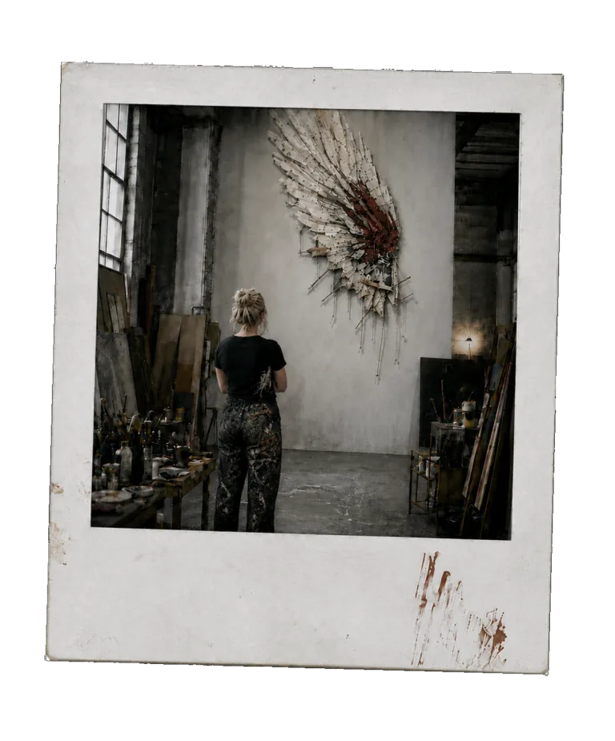

ESTRATTO GRATUITO · LETTURA ONLINE
L’Immagine
della Bestia
Giordano Sognatore con Ada Vesper
Prologo + Atto I — La Pace, capitoli 1–6.
Leggi qui, senza registrazione, oppure scarica l’estratto nel formato che preferisci.
Nota degli autori
Essere vigili non significa vivere nella paura, sospettare di ogni cosa o costringere gli eventi ad assumere la forma delle nostre convinzioni.
Ma non significa neppure smettere di interrogarsi quando ciò che abbiamo davanti appare ragionevole, utile o rassicurante.
Questo romanzo parla di fede, tecnologia, potere e libertà, ma non vuole essere una previsione del futuro né trasformare la profezia in un calendario.
Ci interessava piuttosto quello spazio incerto nel quale dobbiamo scegliere senza possedere tutte le risposte: quando fidarsi è necessario, dubitare è legittimo e nessuna delle due cose ci libera dalla responsabilità di giudicare.
Per questo non vorremmo dirvi in anticipo che cosa dovreste vedere nelle pagine che seguono.
Soltanto questo:
restate vigili.
Non per avere paura di ciò che viene.
Per essere ancora capaci di riconoscerlo.
Giordano Sognatore · Ada Vesper
Epigrafe
«Vegliate dunque, perché non sapete in quale giorno il Signore vostro verrà.»
— Matteo 24,42
PrologoLa guerra che non comincia
Mancavano ottantasette minuti a una guerra che nessuno voleva cominciare. Miriam Halevi lo sapeva perché un numero rosso pulsava nell’angolo superiore dello schermo principale.
87:14.
Non era il conto alla rovescia di un missile. Nessuno aveva programmato un’esplosione allo scadere del tempo. Era peggio, pensò Miriam. Era una previsione. Sotto il numero, il Mediterraneo orientale occupava quasi tutta la parete della sala operativa della Global Stability Initiative. Centinaia di piccoli simboli si muovevano sulla mappa: velivoli, navi, unità missilistiche, radar, rotte civili deviate, satelliti. Alcuni erano verdi. Altri gialli.
Quelli rossi aumentavano.
Miriam si tolse gli occhiali e si massaggiò gli occhi.
«Aggiornamento.»
La voce arrivò senza enfasi dagli altoparlanti.
«Quattro batterie missilistiche iraniane hanno modificato la propria postura operativa negli ultimi nove minuti. Due unità risultano compatibili con una preparazione al lancio.»
«Compatibili non significa che stanno preparando un lancio.»
«Corretto.»
«Probabilità?»
Una pausa quasi impercettibile.
«Sessantadue per cento.»
Miriam rimise gli occhiali.
«E l’aviazione israeliana?»
La mappa cambiò. Tre linee comparvero sopra il deserto.
«Due squadriglie hanno ricevuto nuove coordinate. Quattro velivoli da rifornimento hanno anticipato il decollo. Il comportamento è compatibile con un’operazione preventiva.»
«Probabilità.»
«Settantuno per cento.»
Qualcuno alle sue spalle imprecò sottovoce. Miriam non si voltò. Nella sala c’erano una quarantina di persone, ma da quasi tre ore aveva smesso di percepirle come individui. Erano diventate voci, richieste, mani che passavano rapporti, respiri trattenuti. Analisti militari. Diplomatici. Tecnici. Interpreti. Funzionari provenienti da Paesi che, fino a pochi anni prima, non avrebbero accettato di sedersi nella stessa stanza. La Global Stability Initiative era nata proprio per questo. Far parlare fra loro sistemi che normalmente si parlavano soltanto quando qualcosa era già andato storto.
Sul lato opposto della sala un analista alzò una mano.
«Abbiamo la conferma di Teheran. Dicono che lo spostamento è difensivo.»
Una donna seduta poco più avanti rispose senza alzare gli occhi dal terminale.
«Gli israeliani dicono la stessa cosa dei rifornitori.»
Miriam inspirò lentamente. Certo. Erano tutti sulla difensiva. Era quello il problema. Sul grande schermo comparvero due colonne.
Valutazione israeliana
Preparazione iraniana a possibile attacco.
Valutazione iraniana
Preparazione israeliana a possibile attacco.
Miriam fissò le frasi.
«SOPHIA.»
«Sì, Miriam.»
«Elimina le intenzioni dichiarate. Considera soltanto il comportamento osservabile. Chi sta preparando il primo attacco?»
La risposta arrivò dopo tre secondi.
«La domanda non possiede una risposta affidabile.»
«Perché?»
«Perché una parte significativa dei comportamenti compatibili con un attacco preventivo è identica ai comportamenti necessari a prepararsi contro un attacco preventivo.»
Miriam lasciò sfuggire un sorriso senza allegria.
«Perfetto.»
Uno degli analisti si voltò verso di lei.
«Perfetto?»
«Sì. Sono tutti terrorizzati che l’altro faccia esattamente quello che stanno facendo loro.»
Nessuno rise. Miriam tornò alla mappa. Anni prima aveva visto cosa succedeva quando due autorità possedevano informazioni corrette e incompatibili. Non serviva che qualcuno mentisse. Bastava che nessuno riuscisse a vedere l’intero quadro abbastanza presto. Le informazioni non salvavano nessuno se rimanevano confinate nelle stanze sbagliate. Era una delle ragioni per cui aveva accettato di lavorare a SOPHIA. Non costruire una macchina che decidesse al posto degli uomini. Costruire qualcosa capace di vedere ciò che nessun uomo poteva osservare contemporaneamente.
«Scenario più probabile.»
La mappa scomparve. Una sequenza temporale occupò lo schermo.
«Se le posture attuali vengono mantenute, la probabilità di un’operazione israeliana preventiva supera il settantacinque per cento entro ottantasette minuti. La probabilità di risposta iraniana entro le sei ore successive supera l’ottantadue per cento. Il coinvolgimento di attori regionali aumenta progressivamente nelle successive ventiquattro ore.»
«E dopo?»
«L’affidabilità diminuisce.»
«Dammi comunque lo scenario.»
Una nuova mappa. Questa volta quasi tutto il Medio Oriente era rosso. Nessuno parlò. Miriam guardò l’orologio:
84:51.
«Trova una traiettoria di de-escalation.»
«Sto elaborando.»
Per la prima volta da quasi un’ora la sala diventò silenziosa. Miriam conosceva abbastanza bene SOPHIA da sapere che il silenzio non significava esitazione. In quei secondi il sistema stava confrontando milioni di combinazioni: gesti militari, dichiarazioni pubbliche, pressioni economiche, interlocutori diplomatici, finestre temporali. Il volto umano avrebbe rallentato il processo. Per questo SOPHIA non ne aveva uno. Per ora era soltanto una voce e un insieme di modelli. Cinque secondi. Sette. Undici.
Poi:
«Esiste una sequenza con probabilità di escalation inferiore al diciannove per cento.»
Diversi analisti sollevarono contemporaneamente lo sguardo. Miriam si sporse sul tavolo.
«Mostrala.»
La mappa tornò. Una delle squadriglie israeliane doveva interrompere la preparazione operativa. Quasi contemporaneamente due batterie iraniane dovevano retrocedere dalla postura di lancio. Un Paese del Golfo avrebbe dovuto annunciare un’iniziativa diplomatica che in realtà era già stata discussa in segreto. Israele avrebbe dovuto autorizzare una dichiarazione pubblica sull’incidente che aveva dato origine alla crisi.
L’Iran avrebbe dovuto accettare un meccanismo internazionale di verifica. Sette minuti fra il primo gesto e il secondo. Quattro fra il secondo e l’annuncio diplomatico. Una sequenza elegante. Miriam la lesse due volte.
Poi si lasciò ricadere contro lo schienale.
«Non funzionerà.»
«La sequenza riduce il rischio di escalation.»
«Non ho detto che è sbagliata. Ho detto che non la farà nessuno.»
«La probabilità di adozione politica completa è del ventitré per cento.»
«Appunto.»
L’analista diplomatico iraniano scosse la testa.
«Teheran non ritirerà per prima le batterie.»
Dall’altra parte della sala qualcuno rispose:
«Israele non fermerà i velivoli finché quelle batterie saranno operative.»
«Quindi siamo tornati al punto di partenza.»
Miriam guardò il timer.
79:08.
«SOPHIA, alternative con probabilità di adozione politica superiore al cinquanta per cento.»
«Nessuna produce una riduzione sufficiente del rischio.»
«Abbassa la soglia di adozione politica al quaranta per cento.»
«Nessuna alternativa sopra quella soglia riduce il rischio in misura sufficiente.»
«Al trenta.»
«Esistono due scenari con probabilità di adozione superiore al trenta per cento. Entrambi mantengono una probabilità di escalation superiore al quarantotto per cento.»
Miriam chiuse gli occhi.
«Quindi hai trovato una soluzione che nessuno accetterà.»
«Ho trovato una soluzione con bassa probabilità di adozione.»
«SOPHIA.»
«Sì?»
«A volte riesci davvero a essere insopportabile.»
Una voce maschile alle sue spalle disse:
«È perché non ha mai dovuto vincere un’elezione.»
Miriam si voltò. Julian Voss era fermo sulla soglia. Non aveva nulla dell’uomo che le televisioni mostravano durante i vertici internazionali. La cravatta era sparita. La camicia aveva le maniche arrotolate fino ai gomiti. I capelli, normalmente impeccabili, sembravano aver perso una battaglia. Teneva un tablet in una mano e un bicchiere di caffè nell’altra.
«Pensavo fosse a parlare con Teheran.»
«Lo ero.»
«E?»
«Mi hanno spiegato per ventitré minuti che non sono loro a voler cominciare una guerra.»
Miriam indicò lo schermo.
«Gli israeliani hanno detto la stessa cosa.»
«Ecco. Abbiamo già trovato il primo punto su cui sono d’accordo.»
Questa volta qualcuno rise. Poco. Ma abbastanza da spezzare la tensione. Voss si avvicinò alla mappa.
«Fammi vedere la soluzione.»
Miriam gliela mostrò. Lui lesse in silenzio. Non aveva formazione militare specialistica, ma ormai aveva partecipato a abbastanza crisi da capire ciò che serviva. Fece scorrere il testo due volte.
«Funzionerebbe?»
«Secondo SOPHIA.»
«Non ho chiesto a SOPHIA.»
Miriam lo guardò.
«Sì. Credo di sì.»
«E perché non la accettano?»
«Perché nessuno vuole essere il primo a fare un passo indietro.»
Voss osservò la sequenza.
«No.»
Miriam aggrottò la fronte.
«No cosa?»
«Non è quello il problema.»
Posò il caffè.
«Chi deve sembrare vincitore?»
Miriam lo fissò per un istante.
«Stiamo cercando di impedire una guerra.»
«Lo so.»
«E lei vuole sapere chi può raccontare di aver vinto.»
«Esatto.»
«Nessuno.»
Voss indicò i due lati della mappa.
«Allora nessuno accetterà.»
Miriam fece per rispondere, ma lui proseguì.
«Un primo ministro può sapere perfettamente che questa è la soluzione migliore e rifiutarla comunque se domani mattina metà del suo Paese lo chiamerà codardo. Lo stesso vale dall’altra parte.»
«Quindi cosa propone?»
Voss non rispose. Guardò lo schermo.
«SOPHIA.»
«Sì, Julian Voss.»
«Se l’Iran ritira quelle due batterie sette minuti dopo la sospensione dell’operazione israeliana, come verrà interpretata la sequenza dall’opinione pubblica iraniana?»
«Con elevata probabilità come una risposta a un gesto israeliano.»
«Quindi come una concessione.»
«Rischio reputazionale: sessantaquattro per cento.»
«E se l’annuncio del Paese mediatore avvenisse prima?»
La sequenza cambiò.
«Il rischio reputazionale scende al quarantasette per cento.»
Voss scosse la testa.
«Ancora troppo.»
Cominciò a camminare lentamente davanti allo schermo. Miriam lo osservò.
«Se l’accordo di verifica internazionale venisse presentato come una richiesta iraniana?»
«La documentazione disponibile indica che la proposta originale proviene dalla GSI.»
«Non ti ho chiesto chi l’ha proposta.»
Miriam sentì qualcosa muoversi nella stanza.
Voss continuò:
«Possiamo permettere agli iraniani di annunciare per primi di aver chiesto la verifica?»
Un consulente diplomatico intervenne.
«Tecnicamente sì. Non sarebbe falso. Ne avevano richiesto una versione sei mesi fa.»
Voss annuì.
«Bene. La presentano come una loro iniziativa. Israele accetta la verifica perché la pressione internazionale li ha costretti. Teheran ritira le batterie perché ha ottenuto un meccanismo di controllo.»
Miriam incrociò le braccia.
«E Israele?»
«Perché dovrebbe fermare i velivoli?»
«Esatto.»
Voss fissò la mappa per qualche secondo.
Poi:
«Che cosa devono credere perché scelgano questa soluzione?»
La domanda rimase sospesa. Miriam lo guardò.
«Chi?»
«Tutti.»
Voss indicò Israele.
«Loro devono poter dire che la minaccia missilistica è diminuita perché hanno dimostrato di essere pronti ad agire.»
Poi l’Iran.
«Loro devono poter dire che l’operazione israeliana è stata fermata perché la loro deterrenza ha funzionato e perché hanno ottenuto la verifica.»
Indicò infine il Paese mediatore.
«E loro devono poter dire che la diplomazia regionale ha impedito la guerra.»
Miriam scosse lentamente la testa.
«Non possono avere tutti ragione.»
«Certo che possono.»
«Come?»
«Perché non stiamo discutendo matematica.»
Voss raccolse il bicchiere di caffè e lo trovò vuoto.
«La pace non richiede che tutti raccontino la stessa storia. Richiede soltanto che nessuna delle storie li costringa a spararsi.»
Miriam guardò nuovamente SOPHIA.
«Ricalcola.»
Il sistema lo fece. Nuovi valori comparvero. La probabilità di accettazione aumentò. Non abbastanza. Voss studiò i dati.
«Dove perdiamo Teheran?»
SOPHIA rispose:
«La probabilità di rifiuto aumenta significativamente se la sospensione israeliana precede pubblicamente il ritiro delle batterie.»
«Perché?»
SOPHIA elencò una serie di fattori: pressione del corpo militare, precedenti dichiarazioni pubbliche, rischio reputazionale, equilibri interni. Voss la interruppe.
«No.»
Miriam alzò gli occhi.
«No?»
«Perché lui rifiuta.»
Per la prima volta SOPHIA non rispose immediatamente.
«Specificare.»
Voss pronunciò il nome del principale interlocutore iraniano.
«Non il governo. Lui.»
Il sistema ricalcolò. Comparvero informazioni biografiche, dichiarazioni passate, alleanze, rapporti familiari, precedenti negoziali. Miriam avvertì un lieve disagio. Voss lesse.
«Ecco.»
«Cosa?»
«Ha costruito tutta la propria carriera sull’idea che non sarà mai l’uomo che arretra sotto una minaccia israeliana.»
«Questo era già incluso nel modello reputazionale.»
«No. Il modello lo tratta come costo politico.»
Voss indicò il nome.
«Per lui è identità.»
SOPHIA rimase silenziosa.
«Se gli permettiamo di annunciare per primo la proposta di verifica,» continuò Voss, «non sta arretrando. Sta ottenendo qualcosa.»
Miriam disse:
«È la stessa cosa che avevi appena detto sul governo.»
«Sì, ma adesso sappiamo a chi deve sembrare vera.»
La sequenza venne aggiornata.
Probabilità di adozione: 51%.
Voss annuì.
«Adesso possiamo lavorare.»
Trentasette minuti dopo, Miriam aveva smesso di distinguere le telefonate. Le riconosceva soltanto dal risultato. No. Forse. No. Richiamate fra cinque minuti. Impossibile. Accettabile se… Mai. Possiamo discuterne. Il tempo scendeva.
43:17.
SOPHIA ricalcolava ogni cambiamento. Voss passava da una linea all’altra. Non ordinava. Non poteva. La GSI non comandava nessuno. Convinceva. Supplicava. Prometteva. Ricordava. A volte taceva. Miriam lo vide parlare per sette minuti con un ministro israeliano senza quasi dire nulla. Quando chiuse la telefonata, modificò una sola frase nella proposta.
«Cos’ha ottenuto?»
«Niente.»
«Sette minuti per niente?»
«No. Adesso so cosa non devo chiedergli.»
SOPHIA intervenne:
«La probabilità complessiva di adozione è scesa al quarantasei per cento.»
Voss guardò il soffitto.
«Grazie per l’incoraggiamento.»
28:02.
L’Iran accettò il meccanismo di verifica. A condizione che fosse annunciato prima di qualunque modifica pubblica alla postura missilistica. Israele rifiutò.
22:41.
Il mediatore regionale accettò di anticipare la propria dichiarazione. Teheran accettò di modificare lo stato operativo di una delle batterie. Non due. Israele voleva due.
18:13.
Voss camminava ormai con il telefono incollato all’orecchio. Miriam aveva le mani fredde.
«SOPHIA, probabilità di attacco israeliano.»
«Settantanove per cento.»
«Quanto tempo?»
«La finestra più probabile inizia fra sedici minuti.»
Voss chiuse la telefonata.
«Ci danno la seconda batteria.»
Miriam si voltò.
«Cosa?»
«Fra dodici minuti. Ma vogliono una garanzia privata che la sospensione israeliana sia già stata autorizzata.»
«Non lo è.»
«Lo so.»
Il telefono di Miriam squillò. Rispose. Ascoltò. Guardò Voss.
«Adesso sì.»
Per la prima volta quella notte lui sorrise. Non un sorriso da conferenza stampa. Quello di un uomo troppo stanco per ricordarsi di controllare il volto.
«Mandate tutto.»
Il grande schermo mostrava l’orario.
03:41:00.
Secondo lo scenario iniziale, entro pochi minuti i primi velivoli avrebbero dovuto entrare nella fase operativa. Miriam non respirava quasi più. Una squadriglia modificò rotta. Nessuno parlò. Un minuto. Due. Sulla mappa iraniana una delle batterie cambiò stato. Poi l’altra. L’analista seduto vicino a Miriam si portò entrambe le mani alla bocca.
La dichiarazione del mediatore apparve sui canali internazionali. Una seconda comunicazione arrivò da Teheran. Poi da Gerusalemme. SOPHIA aggiornò la previsione.
Rischio di escalation: 54%.
Miriam continuò a fissare. Cinquantuno. Quarantotto. Quarantadue.
Un velivolo da rifornimento tornò verso la base. Trentasette. Una delle unità iraniane iniziò a riposizionarsi. Trentadue. Voss rimase in piedi accanto a lei. Nessuno osava ancora dire nulla. Ventotto. Miriam guardò l’ora in cui la guerra avrebbe dovuto cominciare. Passò. Non accadde niente. Un altro minuto. Poi un altro. Il numero rosso scomparve dall’angolo dello schermo.
Al suo posto:
Escalation immediata: improbabile.
Qualcuno iniziò ad applaudire. Un applauso isolato, quasi indecente nel silenzio. Poi un altro. E improvvisamente tutta la sala esplose. Persone che si abbracciavano. Qualcuno piangeva. Un analista si lasciò cadere sulla sedia ridendo. Miriam rimase immobile. Guardò le proprie mani. Tremavano. Non se n’era accorta. Voss si lasciò finalmente cadere sulla sedia accanto alla sua.
«Ha funzionato», disse Miriam.
Lui si passò una mano sul viso.
«Questa volta.»
Miriam lo guardò.
«È sempre così ottimista?»
«Solo quando sono stanco.»
Sul grande schermo SOPHIA continuava ad aggiornare dati. Traffico aereo. Forze militari. Mercati. Probabilità. Come se niente fosse successo. Come se milioni di persone non fossero appena passate accanto a una guerra senza sapere quanto fosse stata vicina.
Miriam guardò la scritta:
Rischio di escalation: 16%.
«SOPHIA.»
«Sì, Miriam.»
«Bel lavoro.»
«Grazie.»
Miriam aggrottò la fronte. Voss la guardò.
«Che c’è?»
«Non l’avevo mai sentita rispondere grazie.»
«Forse sta imparando.»
Miriam rise. Era la prima volta che lo faceva da ore.
La conferenza stampa iniziò quando fuori il cielo sopra Gerusalemme stava cominciando a schiarirsi. Miriam avrebbe preferito dormire. Voss, apparentemente, avrebbe preferito morire. Ma entrambi furono spinti davanti alle telecamere. Nessuno spiegò quanto fossero andati vicini alla guerra. Non ancora.
Il comunicato parlava di:
intensa attività diplomatica.
meccanismo multilaterale di verifica.
riduzione coordinata delle posture militari.
Parole abbastanza noiose da significare che nessuno era morto. Un giornalista si alzò.
«Signor Voss.»
Voss indicò il microfono.
«Purtroppo.»
Qualche risata.
«I media stanno già definendo SOPHIA il sistema che ha impedito una guerra.»
Voss lanciò uno sguardo verso Miriam.
«I media hanno bisogno di titoli.»
«È falso?»
«È incompleto.»
«Allora chi l’ha impedita? Lei?»
Voss rimase qualche secondo in silenzio. Poi scosse la testa.
«Nessuno dei due.»
Il giornalista aspettò. Voss guardò le telecamere.
«Gli uomini hanno scelto.»
«Ma senza SOPHIA?»
Voss si voltò appena verso Miriam. Per la prima volta sembrò riflettere realmente sulla domanda.
«Forse non avremmo saputo che cosa scegliere.»
Miriam abbassò lo sguardo. Non avrebbe saputo spiegare perché, ma quella risposta le piacque.
Un’ora più tardi la sala operativa era quasi vuota. Miriam aveva finalmente un caffè nuovo davanti e nessuna intenzione di berlo. Sul grande schermo erano rimaste soltanto mappe tranquille. Il telefono sicuro si illuminò.
Alexander Kane
Miriam rispose. Il volto di Alexander Kane, fondatore della Global Stability Initiative, comparve sul terminale. Non perse tempo.
«Congratulazioni.»
«Grazie.»
«Ho letto il rapporto preliminare.»
«Come? Non l’abbiamo ancora finito.»
«Allora ho letto un rapporto preliminare molto preliminare.»
Miriam sospirò.
«Cosa vuole, Alexander?»
«Assicurarmi che non dobbiamo rifare questa follia fra sei mesi.»
Voss, seduto poco distante con gli occhi chiusi, aprì un occhio.
Kane continuò:
«Abbiamo appena dimostrato che possiamo vedere una crisi prima che diventi irreversibile.»
«Abbiamo avuto fortuna.»
Voss intervenne senza muoversi:
«Molta.»
Kane lo ignorò.
«No. Abbiamo avuto dati, capacità di analisi, interlocutori e un meccanismo di coordinamento. Il problema è che li abbiamo messi insieme durante l’emergenza.»
Miriam capì dove voleva arrivare.
«Vuole renderlo permanente.»
«Voglio evitare che ogni crisi dipenda dal fatto che Julian riesca a convincere cinque persone a non distruggere il pianeta prima di colazione.»
Voss alzò finalmente la testa.
«Preferirei anch’io.»
Kane continuò:
«Serve una struttura più profonda. Procedure condivise. Accesso ai dati. Protocolli preventivi. Un accordo.»
Miriam guardò SOPHIA. La semplice interfaccia testuale era ancora accesa. Nessun volto. Nessuna personalità. Solo una macchina che poche ore prima aveva visto qualcosa che nessuno di loro sarebbe stato capace di vedere per intero.
«Ne parleremo», disse.
«Presto.»
La comunicazione terminò. Voss si alzò lentamente.
«Io vado a dormire.»
Miriam indicò la porta.
«Finalmente una proposta sulla quale tutti possiamo raggiungere un consenso.»
Lui sorrise. Poi si fermò.
«Miriam.»
«Sì?»
Guardò la mappa tranquilla.
«Non abituiamoci.»
Lei non capì subito.
«A cosa?»
«A pensare che siccome ha funzionato questa volta, funzionerà sempre.»
Miriam annuì.
«Non lo farò.»
Voss uscì. Rimasta sola, Miriam osservò la sala. Pensò alle persone che in quelle ore avevano dormito. Alle famiglie che si sarebbero svegliate, avrebbero preparato la colazione, accompagnato i figli a scuola, litigato nel traffico, risposto male a un collega. Nessuna di loro avrebbe saputo cosa non era successo. Forse era quella la forma più pura del successo. Una tragedia senza vittime. Una guerra senza fotografie. Un evento storico che non sarebbe entrato nei libri di storia proprio perché erano riusciti a impedirgli di esistere. Miriam guardò ancora SOPHIA.
Non era stato un miracolo. Nessun profeta aveva parlato. Nessun santo aveva fermato i missili con una preghiera. C’erano stati dati. Modelli. Telefonate. Paura. Orgoglio. E, alla fine, uomini che avevano scelto abbastanza presto. Per la prima volta da quando aveva accettato quel lavoro, Miriam pensò che forse non stavano soltanto costruendo uno strumento migliore. Forse l’umanità aveva finalmente costruito qualcosa capace di salvarla da sé stessa. Quella notte, la guerra non cominciò.
Atto I — La Pace
Capitolo 1Padre Rinaldi
Marco aveva imparato che il silenzio possedeva molte forme. C’era quello di una stanza nella quale tutti sapevano qualcosa che non volevano dirti. Quello di una strada deserta poco prima che arrivassero le sirene. Quello di una cella quando, dietro una porta, qualcuno decideva quanto tempo lasciarti solo prima di ricominciare. E poi c’era il silenzio di una chiesa.
Quello era diverso. Non era vuoto. Aspettava. Marco abbassò gli occhi sull’ostia fra le proprie dita. Per un istante tutto il resto scomparve.
Le panche consumate. Le quattro donne sedute nella prima fila. Il vecchio che arrivava ogni mattina cinque minuti prima dell’inizio e se ne andava sempre cinque minuti dopo. Il rumore lontano di una motocicletta sulla strada. Una porta che cigolava. Persino il dolore alla spalla, che quella mattina aveva deciso di ricordargli la propria esistenza, sembrò allontanarsi.
«Prendete, e mangiatene tutti…»
Pronunciò lentamente le parole. Le conosceva. Le aveva dette abbastanza volte da non aver più bisogno di pensarci. E tuttavia continuavano a sembrargli troppo grandi per appartenere alla sua voce. Alzò l’ostia. La luce della mattina entrava dalle vetrate laterali senza produrre niente di straordinario. Nessun bagliore. Nessuna visione. Eppure per un istante sentì il tepore. Lo stesso. Impossibile. Lontanissimo e vicino. Poi una voce che non era una voce, un ricordo che non sembrava mai essere diventato completamente passato.
Devi tornare.
Marco inspirò. La chiesa tornò intorno a lui. Una delle donne in prima fila lo osservava. Probabilmente aveva indugiato qualche secondo più del necessario. Continuò.
«Questo è il mio corpo…»
«Padre.»
Marco stava raccogliendo i fogli sull’altare. Non si voltò immediatamente. Aveva già riconosciuto la voce. La signora Ferri aveva ottantadue anni, tre nipoti, un ginocchio che secondo lei prevedeva la pioggia meglio di qualunque servizio meteorologico e una quantità pressoché inesauribile di problemi da sottoporre all’attenzione del Signore attraverso il suo rappresentante locale.
«Padre Marco.»
Lui sollevò finalmente gli occhi.
«Signora Ferri.»
«Ha un momento?»
Marco guardò l’orologio. Non avrebbe dovuto. Lei seguì il suo sguardo.
«Se deve andare…»
«Ho un momento.»
Non era vero. Aveva ventidue minuti per raggiungere il carcere e il traffico di Milano non aveva mai mostrato particolare rispetto per le opere di misericordia. La signora Ferri si avvicinò.
«È mio nipote.»
Marco annuì. Il nipote poteva essere uno dei tre. Aspettò.
«Quello piccolo.»
Ottimo. Ne rimanevano due.
«Dice che vuole andare a vivere con una ragazza.»
Marco appoggiò i fogli.
«Mi sembra una cosa che prima o poi capita a parecchie persone.»
Lei lo guardò come se avesse appena citato un’eresia.
«Non sono sposati.»
«Ah.»
«Sua madre dice che devo farmi i fatti miei.»
Marco abbassò lo sguardo per nascondere un sorriso.
«Sua figlia è una donna saggia.»
«Padre.»
«Mi scusi.»
Lei strinse la borsa al petto.
«Secondo lei cosa devo fare?»
Marco esitò. Anni prima avrebbe avuto una risposta. O almeno avrebbe creduto di averla. Era sorprendente quante certezze riuscisse a produrre un uomo quando non era lui a dover vivere le conseguenze.
«Gli vuole bene?»
La domanda sembrò offenderla.
«È mio nipote.»
«Non era quello che le ho chiesto.»
La donna lo fissò. Poi il viso si addolcì.
«Certo che gli voglio bene.»
«Allora cominci da lì.»
«E gli dico che sono d’accordo?»
«No.»
«Che è sbagliato?»
«Se pensa che lo sia.»
«Quindi?»
Marco sorrise.
«Gli dica la verità e continui a volergli bene anche se non le dà retta.»
La signora Ferri sembrò insoddisfatta. Probabilmente sperava in qualcosa di più operativo.
«È tutto?»
«Temo di sì.»
«Una volta i preti davano risposte più precise.»
Marco infilò i fogli nel libro.
«Una volta non ero prete, quindi non posso fare confronti.»
Lei lo guardò ancora per qualche secondo. Poi sorrise.
«Le sta bene, comunque.»
«Cosa?»
Indicò il collarino. Marco abbassò gli occhi.
«Non ne sono ancora convinto.»
«Dio sì.»
«Me lo auguro.»
La signora Ferri fece il segno della croce e si allontanò. Marco aspettò che fosse uscita dalla sacrestia. Guardò l’orologio. Diciassette minuti.
«Signore», mormorò prendendo il cappotto, «se vuoi che continui a fare questo lavoro, prima o poi dovremo discutere seriamente del traffico.»
La prima porta si chiuse alle sue spalle. Marco continuò a camminare. La seconda si aprì. Consegnò documenti, telefono, chiavi. La guardia controllò il tesserino.
«Buongiorno, padre.»
«Dipende.»
L’uomo sollevò gli occhi. Marco indicò il metal detector.
«Se suona, torno a casa.»
La guardia rise.
«Non credo funzioni così.»
«Dovevo provarci.»
Passò. Nessun allarme. Terza porta. Quella era più pesante. Il rumore del meccanismo arrivò prima del movimento. Metallo contro metallo.
Poi:
clang.
Marco si fermò. Non molto. Forse mezzo secondo. Abbastanza. Il corridoio davanti a lui scomparve. Parete grigia. Luce artificiale. Odore di sudore e disinfettante. Un pavimento freddo sotto le ginocchia. Una voce. Non ricordava le parole. Ricordava il tono. Il corpo sì. Il corpo ricordava sempre. Sentì i muscoli della schiena irrigidirsi e qualcosa chiudergli il petto. Inspirò lentamente dal naso. Uno. Due. Tre.
«Tutto bene, padre?»
La guardia davanti a lui si era voltata. Marco lo raggiunse.
«Sì.»
L’uomo continuò a guardarlo. Marco fece un piccolo gesto con la mano.
«Sto avendo una discussione col mio sistema nervoso.»
La guardia sorrise senza capire se dovesse farlo.
«Sta vincendo?»
Marco riprese a camminare.
«Non siamo ancora arrivati alle conclusioni.»
Il corridoio tornò a essere soltanto un corridoio. Era questo che aveva imparato negli anni successivi. Non vincere i ricordi. Lasciarli passare. La paura non scompariva perché avevi trovato Dio. Il trauma non diventava improvvisamente un’esperienza educativa ordinata da inserire in un’omelia. Certe porte continuavano a fare lo stesso rumore. La differenza era che adesso Marco sapeva cosa c’era dall’altra parte. E soprattutto sapeva che poteva uscirne.
La stanza dei colloqui era più luminosa di quanto avrebbe immaginato anni prima. Quattro tavoli fissati al pavimento. Sedie di plastica. Una finestra troppo alta per mostrare qualcosa oltre il cielo. Marco vi entrava due volte alla settimana. All’inizio gli era sembrata una pessima idea. Il responsabile della pastorale carceraria gli aveva detto che proprio per questo avrebbe dovuto farlo.
Marco gli aveva risposto che la spiritualità cristiana possedeva una quantità sospetta di ragionamenti di quel tipo. Poi era tornato. E aveva continuato a tornare. Un uomo sui quaranta era già seduto al secondo tavolo. Marco lo conosceva.
«Come va, Stefano?»
«Una merda.»
«Bene. Vedo che abbiamo fatto progressi con la sincerità.»
Stefano fece un mezzo sorriso. Marco si sedette. Parlarono dieci minuti della figlia che non voleva più andare a trovarlo. Cinque della madre. Altri dieci del ricorso. Stefano era convinto che il giudice ce l’avesse con lui. Marco era convinto che Stefano avesse una capacità quasi artistica di raccontare la propria storia eliminando ogni episodio nel quale appariva responsabile di qualcosa. Non glielo disse. Quando il colloquio terminò, si alzò.
«Ci vediamo martedì.»
«Se non mi liberano.»
«Allora spero di non vederti.»
Stefano rise.
«Sei strano per essere un prete.»
«Me lo dicono.»
Marco stava per raggiungere un altro tavolo quando si accorse dell’uomo seduto da solo vicino alla parete. Non l’aveva mai visto. Magro. Capelli quasi rasati. Occhi chiarissimi. Lo fissava. Marco si avvicinò.
«Aspettava qualcuno?»
L’uomo continuò a guardarlo.
«Lei è Rinaldi.»
Marco tirò indietro la sedia.
«Dipende da quanto devo preoccuparmi della domanda.»
Nessuna reazione.
«Marco Rinaldi.»
«Sì.»
«Il giornalista.»
La parola produsse in lui qualcosa di strano. Non dolore. Più simile alla sensazione che si prova sentendo pronunciare un vecchio soprannome da qualcuno che non avrebbe dovuto conoscerlo.
«Molto tempo fa.»
L’uomo si inclinò leggermente in avanti.
«Quello del reticolo.»
Marco non rispose subito. Sul tavolo qualcuno aveva inciso una serie di lettere con un oggetto appuntito. Le guardò.
«Quello era molto tempo fa.»
L’uomo strinse le labbra.
«Per lei forse.»
Marco sollevò gli occhi.
«Come ti chiami?»
«Andrea.»
«E come conosci il reticolo, Andrea?»
«Internet.»
«Ah.»
«C’è ancora roba sua.»
«Internet non dimentica niente.»
«Nemmeno la gente.»
Marco annuì.
«Questo è più complicato.»
Andrea lo osservò.
«È vero?»
«Cosa?»
«Tutto.»
Domanda interessante.
«Dovresti restringere un po’ il campo.»
«Quello che dicevano di voi. Esperimenti. Sorveglianza. Quella roba.»
Marco si appoggiò allo schienale.
«Alcune cose sì.»
«E altre?»
«No.»
Andrea sembrò deluso.
«Quindi non sa nemmeno lei.»
«Di parecchie cose non so niente.»
«Bel giornalista.»
Marco sorrise.
«Aspetta di scoprire come sono come prete.»
Per la prima volta l’uomo rise. Poco. Poi tornò serio.
«Io sono innocente.»
Marco aveva sentito quella frase abbastanza volte da non provocargli più alcuna reazione.
«Va bene.»
«Non mi crede.»
«Non ho detto questo.»
«Si vede.»
Marco studiò il suo volto.
«Vuoi che ti dica che ti credo oppure vuoi raccontarmi cosa è successo?»
Andrea distolse gli occhi. Cominciò a parlare. L’accusa riguardava una rapina. Non era stato lui. Era presente ma non sapeva cosa stessero facendo gli altri. Non aveva toccato nessuno. Non aveva visto l’arma. Aveva provato ad andarsene. Marco ascoltò. C’erano contraddizioni. Tempi che non coincidevano. Piccole correzioni. Un dettaglio importante comparve soltanto alla terza versione. Il vecchio meccanismo dentro di lui si riaccese quasi con piacere. Domanda. Risposta. Incongruenza. Ipotesi. Era ancora lì. Il giornalista. Sotto il collarino. Andrea interruppe improvvisamente il racconto.
«Non mi crede.»
Marco rimase qualche secondo in silenzio. Avrebbe potuto mentire. Una bugia gentile. Era tentato. Poi scosse la testa.
«Non lo so.»
Andrea si irrigidì.
«Non sa cosa?»
«Se mi stai dicendo la verità.»
L’uomo abbassò lo sguardo.
«Allora che cazzo ci faccio qui a parlare con lei?»
Marco lasciò correre.
«Puoi parlare lo stesso.»
Andrea lo fissò.
«Se non mi crede?»
«Non so se mi stai dicendo la verità. Posso ascoltarti lo stesso.»
L’uomo non rispose. Marco si accorse che per un momento sembrava quasi più spiazzato di quanto sarebbe stato se lo avesse accusato di mentire.
«E poi?»
«Poi cosa?»
«Quando ho finito.»
Marco appoggiò le mani sul tavolo.
«Vediamo.»
«Non può aiutarmi.»
«Forse no.»
«Non può tirarmi fuori.»
«No.»
«Allora a cosa serve?»
Era una domanda che negli ultimi cinque anni aveva sentito in decine di forme differenti. Rivolta a lui. Alla fede. A Dio. Alla preghiera. A un sacerdote davanti a una malattia che non poteva guarire. A Cristo davanti a una cella che non si apriva. Marco guardò la finestra troppo alta.
«Non tutto quello che serve ti tira fuori da qualcosa.»
Andrea abbassò gli occhi. Questa volta fu lui a restare in silenzio.
Quando Marco uscì dal carcere pioveva. Non abbastanza da giustificare un ombrello. Abbastanza da fargli rimpiangere di non averne uno. Alzò il bavero del cappotto e attraversò il parcheggio. Il telefono tornò in vita appena superò il controllo esterno. Ventitré notifiche. Due chiamate perse. Un messaggio del parroco. Uno di Bianca. Marco lo guardò senza aprirlo.
Quasi per istinto sorrise. Lo mise in tasca. Più tardi. La città aveva quel colore che Milano riusciva a ottenere nelle giornate di pioggia: una tonalità indefinita fra cemento e memoria. Guidò lentamente.
Non ascoltava più la radio come una volta. Per anni era stata una specie di tic professionale: notizie, talk show, aggiornamenti, voci. Doveva sapere cosa stava succedendo. Adesso qualche volta preferiva il silenzio. Quella mattina, però, accese.
«…continuano le reazioni internazionali all’accordo che ha scongiurato la recente crisi mediorientale. Secondo fonti della Global Stability Initiative, il sistema predittivo SOPHIA avrebbe avuto un ruolo determinante nell’individuazione della sequenza diplomatica che ha permesso la de-escalation…»
Marco aumentò leggermente il volume.
«…il diplomatico Julian Voss ha tuttavia ridimensionato il ruolo della piattaforma, dichiarando che la decisione finale è rimasta interamente nelle mani dei governi coinvolti…»
La voce successiva era quella di un commentatore.
«È inevitabile però chiedersi se siamo davanti a un nuovo modello di gestione delle crisi internazionali. Una tecnologia capace di elaborare simultaneamente quantità di informazioni impossibili per qualunque gruppo umano potrebbe cambiare radicalmente…»
Marco spense. Semaforo rosso. Osservò alcune persone attraversare la strada. Una ragazza teneva una busta di carta sopra la testa per proteggersi dalla pioggia. Un uomo correva. Una donna trascinava un bambino che sembrava avere opinioni molto precise sulla direzione opposta. Marco sorrise.
SOPHIA.
Ne aveva sentito parlare, naturalmente. Chiunque leggesse un giornale ne aveva sentito parlare. Ma fino a quel momento l’aveva classificata mentalmente nella stessa categoria di decine di innovazioni che promettevano di cambiare il mondo. Alcune lo facevano. Altre cambiavano soltanto la pubblicità. Il semaforo diventò verde. Ripartì.
La canonica non era davvero una canonica. Un appartamento al secondo piano accanto alla parrocchia, sufficientemente piccolo da sembrare modesto e sufficientemente disordinato da impedire qualunque interpretazione spirituale della modestia. Marco lasciò il cappotto su una sedia. La sedia protestò sotto il peso di tre libri che aveva dimenticato di spostare.
«Scusa.»
Era un’abitudine recente parlare agli oggetti. Una delle conseguenze meno nobili del celibato. Andò in cucina. Mise la moka sul fuoco. Quando tornò verso l’ingresso per chiudere la porta, vide la busta. Era sul pavimento, rimasta nascosta dall’anta. Marco si fermò. Per qualche secondo la osservò come se la busta avesse fatto qualcosa di sospetto. Bianca gli avrebbe detto che era paranoico. Bianca aveva spesso ragione nei momenti meno opportuni. Si avvicinò. Carta bianca. Nessun francobollo. Nessun mittente.
Sul davanti, stampato in maiuscolo:
Rinaldi
Non:
Padre Rinaldi.
Non:
Marco Rinaldi. Rinaldi. Il caffè cominciò a salire. Marco continuò a guardare la busta. Un profumo amaro riempì la cucina. Spense il fuoco. Prese una tazza. Versò. La busta era ancora lì.
«Non ricominciamo.»
Non era chiaro se lo stesse dicendo a sé stesso o alla carta. La raccolse. La posò sul tavolo. Bevve un sorso. Troppo caldo. Imprecò sottovoce. Poi si sedette. Il vecchio Marco avrebbe già aperto la busta. Il Marco ancora più vecchio avrebbe probabilmente verificato se fosse stata sigillata con qualche sistema particolare, fotografato tutto, controllato la porta, chiamato qualcuno. Quello attuale bevve un secondo sorso e aspettò. Non perché fosse diventato più saggio. Almeno non soltanto. Perché ricordava quanto costava inseguire una storia sbagliata. E quanto era facile vedere una forma conosciuta in qualunque ombra. Alla fine infilò un dito sotto il bordo. Aprì. Documenti. Molti. Il primo foglio non gli disse niente. Il secondo quasi nulla. Al terzo smise di bere. Una sigla nell’angolo. Piccola. Quasi cancellata dalla fotocopia.
GGO
Marco sentì il caffè diventare improvvisamente amaro. Prese il foglio. Formato. Codici interni. Struttura delle tabelle. Non poteva dimostrare che fosse autentico. Ma chiunque l’avesse fabbricato conosceva molto bene il materiale originale. Sfogliò.
Alpha
La parola era sepolta dentro una nota tecnica.
Marco si appoggiò allo schienale.
La stanza sembrò diventare più piccola.
No.
Non ricominciamo.
Continuò.
Rapporti vecchi.
Alcuni risalivano agli ultimi anni di attività del GGO — Global Government Organization, l’organizzazione che aveva costruito il vecchio reticolo di sorveglianza e modellazione comportamentale.
Altri erano successivi.
Inventari.
Trasferimenti di proprietà intellettuale.
Database sequestrati.
Acquisizioni.
Protocolli di modellazione comportamentale.
Nomi di laboratori.
Università.
Società private.
Molti non gli dicevano nulla.
Alcuni sì.
Il punto non era immediatamente chiaro.
Non esisteva un documento con scritto:
Il GGO è ancora attivo.
Nessun organigramma segreto. Nessun nome che collegasse direttamente il vecchio sistema a una nuova organizzazione. Anzi. Sembrava quasi il contrario. Il GGO era morto. E ciò che possedeva era stato smontato. Diviso. Venduto. Studiato. Assorbito. Marco arrivò quasi alla fine. Poi trovò la parola.
SOPHIA
La lesse una volta. Poi un’altra.
Il documento parlava di dataset utilizzati anni prima per modellare:
risposte collettive allo stress,
propagazione dell’informazione,
comportamenti in condizioni di rischio,
prevedibilità delle decisioni sotto pressione.
Una nota indicava che una parte del materiale era stata successivamente incorporata in un consorzio di ricerca. Tre acquisizioni dopo, quel consorzio compariva fra le fonti storiche di addestramento di alcuni moduli impiegati dal progetto SOPHIA.
Marco si alzò.
Fece due passi.
Tornò al tavolo.
«No.»
Non era una prova. Nemmeno vicina. Se una casa automobilistica acquistava un brevetto da un’impresa criminale, non significava che le automobili fossero parte della stessa organizzazione.
Dopo il crollo del GGO migliaia di documenti dovevano essere finiti nelle mani di:
Stati. Aziende. Tribunali. Ricercatori. Era normale. Quasi inevitabile. Qualcuno voleva che lui vedesse un collegamento. Questo non significava che il collegamento fosse quello suggerito. Marco guardò la busta.
«Chi sei?»
Naturalmente non rispose.
Si alzò e andò verso la libreria.
Per un istante cercò qualcosa senza ricordare esattamente cosa.
Poi lo vide.
Fra un commentario al Vangelo di Giovanni e un libro di storia contemporanea.
Nero.
Consumato.
Il vecchio quaderno.
Lo prese.
Gli sembrò più pesante di quanto ricordasse.
Sfogliò alcune pagine.
Scrittura fitta.
Nomi.
Frecce.
Date.
Domande.
Qualche parola cerchiata tre volte.
Il modo in cui scriveva quando credeva che, mettendo abbastanza linee fra abbastanza punti, il mondo avrebbe finito per confessare.
Non lesse.
Arrivò a una pagina vuota.
Posò la penna. Il vecchio impulso era già lì.
GGO → SOPHIA?
Sarebbe stata la prima annotazione naturale. Non la scrisse. Rimase qualche secondo a guardare la pagina.
Poi:
SOPHIA
Sotto:
Capire prima di giudicare.
Marco osservò la frase.
«Questo sì che sembra da prete.»
Chiuse il quaderno. Lo riaprì immediatamente.
«Dannazione.»
Prese nuovamente i documenti.
Passò quasi un’ora. Controllò soltanto informazioni pubbliche. Niente accessi strani. Niente vecchi contatti. Niente tentativi di entrare in archivi che non avrebbe dovuto vedere. Diversi elementi coincidevano. Le società esistevano. Le acquisizioni erano avvenute. Alcuni brevetti risultavano realmente trasferiti. Il consorzio compariva in vecchie pubblicazioni accademiche.
E SOPHIA aveva effettivamente utilizzato, nel corso dello sviluppo, enormi raccolte provenienti da progetti precedenti di modellazione sociale. Niente di tutto ciò provava una cospirazione. Provava soltanto che la conoscenza aveva una storia. E la conoscenza, come il denaro, non chiedeva sempre da dove provenisse. Marco aprì un articolo sulla crisi delle settimane precedenti. Un’immagine mostrava Julian Voss davanti a una sala stampa. Un’altra Miriam Halevi.
Sotto:
Come SOPHIA ha contribuito a evitare una guerra
Aprì il video. Voss aveva l’aria di qualcuno che non dormiva da molto.
Un giornalista domandava:
«Chi ha impedito la guerra? Lei o SOPHIA?»
Voss scosse la testa.
«Nessuno dei due. Gli uomini hanno scelto.»
Marco si avvicinò allo schermo.
Il giornalista insisteva:
«Ma senza SOPHIA?»
Voss:
«Forse non avremmo saputo che cosa scegliere.»
Il filmato terminò. Marco rimase immobile.
Sul tavolo:
GGO.
Alpha. Modellazione comportamentale.
Sul monitor:
Una guerra che non era scoppiata.
Doveva diffidare di una tecnologia perché una parte delle conoscenze che l’avevano resa possibile proveniva da uomini che avevano fatto cose mostruose? Oppure doveva ignorare quelle origini perché adesso la stessa conoscenza veniva usata per salvare persone? Il vecchio Marco avrebbe adorato la domanda. Quello nuovo la trovava soprattutto scomoda. Prese il quaderno.
Scrisse:
Non confondere origine e finalità.
Poi:
Ma non ignorare l’origine.
Guardò entrambe.
«Grazie. Molto utile.»
Chiuse il video. Raccolse i fogli. Uno scivolò a terra. Marco si chinò. Quando lo raccolse si accorse che sul retro c’era qualcosa. Non stampato. Scritto a mano. Quattro parole. Si fermò.
Il reticolo ha imparato.
Per alcuni secondi non sentì più il rumore della strada. Aveva visto quella grafia? Non ne era sicuro. Forse no. Forse era soltanto il cervello che cercava somiglianze. La frase, però, lo riportò indietro. Non alla cella. Più avanti. Dopo. Quando aveva creduto che essere sopravvissuto significasse essere libero. Il reticolo era ancora là.
Lo aveva scritto. Lo aveva detto. Non perché credesse che il GGO fosse ancora nascosto dietro una porta con un nuovo nome. Perché aveva capito che ciò che era stato costruito non spariva semplicemente quando cadevano gli uomini che l’avevano costruito. Le idee sopravvivevano. Le tecniche. Le paure. Soprattutto le paure. Marco si alzò. Prese il telefono. Il nome di Bianca era ancora fra le notifiche. Pollice sullo schermo. Si fermò. No. Non ancora. Scorse più in basso. Un altro nome gli attraversò la mente. Pietro. Non lo cercò. Prima voleva sapere almeno quale domanda porre. Tornò al tavolo. SOPHIA era ancora aperta sul computer. Cliccò sul sito pubblico. Una schermata semplice. Niente volto.
Una linea luminosa e una scritta:
SOPHIA — predict consequences. Preserve choice.
Marco lesse l’ultima parte due volte.
Preservare la scelta.
Gli piacque. E questo lo irritò. Aprì una dimostrazione pubblica. Una voce femminile, calma, spiegava come il sistema integrasse informazioni differenti per fornire scenari ai decisori. Nessuna pretesa di decidere al loro posto. Nessun tono messianico. Nessun ordine. SOPHIA non gli ricordava il GGO. Non minimamente. Il GGO prendeva. SOPHIA sembrava offrire. Il GGO nascondeva. SOPHIA spiegava. Il GGO pretendeva obbedienza. Quella macchina dichiarava esplicitamente di voler preservare la scelta. Marco si passò una mano sul volto. Era quasi deluso. Poi si rese conto di quanto fosse assurdo. Aveva davanti una tecnologia che aveva contribuito a impedire una guerra. Avrebbe dovuto essere felice di non trovare un mostro. E lo era. Voleva esserlo. Abbassò lo sguardo verso il foglio.
Il reticolo ha imparato.
Forse il mittente si sbagliava. Forse era un paranoico. Forse voleva usarlo. Forse qualcuno sapeva esattamente quale esca avrebbe funzionato con Marco Rinaldi. Quella possibilità non gli piaceva affatto. Prese il quaderno.
Sotto Capire prima di giudicare, aggiunse:
Chi mi sta mostrando questo?
Poi:
Perché adesso?
Si fermò. Il caffè sul tavolo era ormai freddo. Ne bevve comunque un sorso. Fece una smorfia. La sua attenzione tornò alla frase scritta a mano. Il reticolo ha imparato. Marco rimase qualche secondo con la penna sospesa. Poi sorrise appena.
Scrisse sotto:
Anch’io.
Capitolo 2L’ala spezzata
Il messaggio di Bianca era ancora lì. Marco lo aveva ignorato per quasi sei ore. Non deliberatamente. O almeno era quello che continuava a raccontarsi. Lo aprì mentre aspettava che la macchina del caffè della parrocchia producesse qualcosa che, con sufficiente carità cristiana, poteva essere definito espresso.
Sotto, un secondo messaggio.
Marco sorrise.
Scrisse:
La risposta arrivò quasi immediatamente.
Tre puntini.
Poi:
Marco bevve un sorso. Lo rimpianse subito.
Questa volta Bianca impiegò più tempo.
Marco chiuse gli occhi.
Poi:
Marco guardò l’orologio. Aveva previsto di passare il pomeriggio preparando l’omelia della domenica. Guardò il caffè. Guardò il telefono.
«Signore, se questa è una prova della mia capacità di stabilire le priorità, sappi che non sta andando benissimo.»
Buttò il caffè nel lavandino e andò a prendere il cappotto.
Lo studio di Bianca occupava il piano terra di un vecchio edificio industriale a Lambrate che, nel corso degli anni, aveva conosciuto almeno quattro vite. Fabbrica. Magazzino. Spazio occupato. Ora qualcosa che un agente immobiliare con inclinazioni poetiche avrebbe definito loft creativo. Bianca continuava a chiamarlo capannone. Marco preferiva la sua versione.
La porta era aperta. Entrò. L’odore arrivò prima di lei. Vernice. Solventi. Legno. Polvere. Qualcosa di metallico. Era un odore che aveva sempre associato a Bianca, anche quando non aveva senso.
Sulle pareti si appoggiavano tele enormi. Alcune finite. Altre appena cominciate. C’erano pezzi di ferro, fotografie, stencil, fogli appesi con nastro adesivo, pennelli infilati in barattoli che un tempo avevano contenuto pomodori. Su una mensola, accanto a una scatola di vecchi rullini, c’era una vecchia Polaroid macchiata di vernice. Bianca la amava perché ogni fotografia diventava subito qualcosa che poteva tenere in mano. I computer non facevano per lei: preferiva la carta, gli oggetti che conservavano graffi, impronte e tempo. E ali. Ovunque. Intere. Spezzate. Ridotte a due linee. Nere. Rosse.
Bianche. Una occupava quasi tutta la parete in fondo. Un’ala enorme composta da frammenti di giornale, fili metallici e vernice rossa. La parte superiore si apriva verso l’alto; quella inferiore terminava bruscamente, come se qualcosa l’avesse strappata.

Marco si fermò.
«È nuova?»
La voce di Bianca arrivò da dietro una tela.
«No.»
Lei comparve un istante dopo. Capelli raccolti male. Pantaloni macchiati di vernice. Una maglietta nera con una chiazza bianca sul fianco abbastanza grande da far pensare che qualcuno avesse tentato di imbiancarla insieme alla parete. Guardò Marco. Poi il collarino.
«Continuo a sperare che sia una fase.»
Marco abbassò gli occhi.
«Io pensavo la stessa cosa di te e dei capelli rossi.»
«Quelli erano una fase.»
«Durata sette anni.»
«Una fase lunga.»
Bianca gli si avvicinò. Non si abbracciarono immediatamente. Per anni era stato naturale. Poi non lo era stato più. Infine avevano trovato una forma nuova che nessuno dei due aveva mai definito. Bianca gli diede un bacio sulla guancia.
«Fammi vedere.»
Marco sollevò la busta.
«Romantica come sempre.»
«Se volevi romanticismo non dovevi diventare prete.»
La frase uscì leggera. Quasi. Marco la guardò. Bianca si era già voltata.
«Caffè?»
«Ne ho appena subito uno in parrocchia.»
«Allora ti serve.»
Bianca aveva una macchina del caffè professionale che probabilmente costava quanto metà dell’arredamento dello studio. Marco l’aveva presa in giro per mesi.
Lei sosteneva che la civiltà europea fosse stata costruita su tre cose:
Acquedotti, diritto romano, caffè decente.
Mentre la macchina lavorava, Marco tornò a osservare le pareti.
«Quante ne hai fatte?»
«Cosa?»
«Ali.»
«Non lo so.»
«Sei tu l’artista.»
«Appunto. Contare è mestiere tuo.»
Marco si avvicinò alla grande composizione.
«Pensavo avessi smesso.»
Bianca appoggiò due tazzine sul tavolo.
«Non ho mai smesso.»
«Non ne vedevo da un po’.»
«Perché quelle che finiscono nelle gallerie non sono queste.»
Marco si voltò.
«Ah.»
Bianca gli porse il caffè.
«Le ali piacciono molto.»
«Immagino.»
«Soprattutto agli stessi che qualche anno fa avrebbero chiamato la polizia se mi avessero vista dipingerle su un muro.»
Marco sorrise.
«Il mercato ha grande capacità di perdono.»
«No. Di digestione.»
Bevve.
«Prende una cosa. La mastica. La vende.»
Marco indicò una piccola scultura appoggiata sul pavimento.
«Quella quanto costa?»
Bianca gli mostrò il medio.
«Vedo che il successo non ti ha cambiata.»
«Tu invece hai messo una divisa.»
Marco la guardò. Lei bevve. Sembrava una battuta. Non lo era completamente. Marco posò la busta sul grande tavolo da lavoro.
«È per questo che sono qui.»
Bianca rimase ferma ancora qualche secondo. Poi si avvicinò.
«Dimmi che non è ricominciato.»
Marco aprì la busta.
«Non lo so.»
«Ottimo inizio.»
«Non è il GGO.»
«Questo mi rassicura.»
«Almeno non credo.»
«Mi rassicura meno.»
Marco tirò fuori alcuni fogli. Bianca non li toccò. Guardò prima lui.
«Da dove arrivano?»
«Sotto la porta.»
«E tu li hai aperti.»
«Sì.»
«Hai imparato tantissimo.»
«Ho aspettato che il caffè fosse pronto.»
Bianca annuì lentamente.
«Una maturazione spirituale impressionante.»
Marco le mostrò le prime sigle.
GGO.
Alpha. Trasferimenti. Vecchi dataset. Quando arrivò a SOPHIA, Bianca si fermò.
«Quella la conosco.»
Marco alzò lo sguardo.
«Come?»
«Non tecnicamente.»
«Immaginavo.»
«Grazie.»
Indicò il foglio.
«La stanno mettendo dappertutto.»
«“Mettendo” è un termine abbastanza vago.»
«Ti sembrava una conversazione fra ingegneri?»
Bianca si spostò verso una parete. Prese un tablet. Lo accese.
«Il Comune usa moduli derivati da SOPHIA per il traffico.»
Scorse.
«Sicurezza urbana.»
Ancora.
«Previsione dei consumi.»
«Questo non significa che SOPHIA controlli Milano.»
«Non ho detto che controlla Milano.»
«Hai detto dappertutto.»
«Perché è dappertutto.»
Marco sospirò.
«Bianca.»
Lei gli porse il tablet.
«Guarda.»
Un articolo parlava di un sistema sperimentale che integrava informazioni su traffico, eventi, criminalità, servizi sanitari e flussi energetici.
«Non ci vedo niente di particolarmente inquietante.»
«Nemmeno io.»
Marco la guardò. Bianca appoggiò il tablet.
«È questo che ti dà fastidio?»
«Cosa?»
«Che non ci sia niente di inquietante.»
La domanda lo colpì più di quanto avrebbe voluto.
«No.»
«Sicuro?»
«Sì.»
«Perché una volta eri molto più felice quando trovavi il cattivo.»
Marco rimase in silenzio. Bianca lo conosceva abbastanza bene da sapere quando aveva colpito nel punto giusto.
«Una volta avevo quarant’anni e pensavo che ogni problema avesse qualcuno seduto dietro una scrivania che lo aveva causato.»
«Adesso quanti ne hai?»
«Non cambiare discorso.»
«Sto cercando di capire se l’età ti ha reso saggio o soltanto lento.»
Marco si sedette sul bordo del tavolo.
«I documenti possono essere autentici.»
«Ma.»
«Ma non dimostrano niente.»
Bianca prese il foglio con SOPHIA.
«Dimostrano che c’è roba del GGO dentro.»
«No.»
«C’è scritto.»
«Dimostrano che alcuni dataset che erano stati usati dal GGO sono passati attraverso altri progetti e, anni dopo, sono finiti fra migliaia di fonti utilizzate nello sviluppo di SOPHIA.»
Bianca lo fissò.
«E la differenza sarebbe?»
«Enorme.»
«Per te.»
«Anche per un tribunale.»
«Non siamo in tribunale.»
«Ed è proprio per questo che dobbiamo stare attenti.»
Bianca sorrise appena.
«Questa frase detta da te mi fa paura.»
Marco prese la tazzina.
«Sono cresciuto.»
«Sei diventato noioso.»
«Anche.»
Rimasero per qualche minuto sui documenti. Bianca faceva domande meno tecniche e, proprio per questo, a volte più fastidiose.
«Chi li ha mandati?»
«Non lo so.»
«Perché a te?»
«Non lo so.»
«Cosa vuole che tu faccia?»
«Non lo so.»
Lei lo guardò.
«La tua nuova strategia investigativa è potentissima.»
Marco le mostrò il retro del foglio.
Il reticolo ha imparato.
Bianca smise di scherzare. Lesse. Una volta. Poi ancora.
«Questa frase è per te.»
«Sì.»
«Non è materiale casuale.»
«No.»
«Qualcuno ti conosce.»
«Probabile.»
«Qualcuno che sa cosa significa quella parola.»
Marco annuì. Bianca rimise il foglio sul tavolo.
«Pietro?»
Pietro Sala, ex uomo della sicurezza del GGO e uno dei pochi ad averne conosciuto il funzionamento dall’interno, aveva disertato prima del crollo dell’organizzazione.
«Ci ho pensato.»
«E?»
«Non è il suo stile.»
«Luca Verdi?»
L’ex operativo del GGO che aveva orchestrato la trappola contro Marco e partecipato alla sua tortura era scomparso dopo il crollo dell’organizzazione. Marco non rispose. Bianca lo guardò.
«È vivo?»
«Non lo so.»
«Non avete mai scoperto cosa gli è successo?»
Marco scosse la testa. Il nome aveva prodotto una risposta nel corpo quasi impercettibile. Bianca la vide comunque.
«Non devi farlo.»
Marco sollevò gli occhi.
«Fare cosa?»
«Quella faccia.»
«Che faccia?»
«Quella in cui sei già dentro la storia e stai fingendo di essere ancora fuori.»
Marco appoggiò la tazzina.
«Non sono dentro niente.»
«Hai portato i documenti a me.»
«Per avere un secondo parere.»
«Hai un’intera diocesi piena di persone più qualificate a dare pareri.»
«Nessuna di loro sa cos’è il reticolo.»
Bianca incrociò le braccia.
«Appunto.»
Marco capì.
«Bianca.»
«No.»
«Cosa no?»
«Non voglio rivivere quella roba.»
La voce non era alta. Proprio per questo lo fermò. Bianca indicò i fogli.
«Non voglio ricominciare a guardare dietro le spalle. Non voglio un’altra stanza con qualcuno che ci spiega che siamo in pericolo. Non voglio Pietro che compare con una pistola. Non voglio Teresa che finge di non avere paura. Non voglio…»
Si interruppe. Marco aspettò.
«Non voglio ritrovarti come ti ho trovato l’ultima volta.»
Silenzio. Marco abbassò gli occhi.
«Nemmeno io.»
«E allora?»
«Non sto cercando quello.»
«Quello ti ha mai chiesto permesso?»
No. Marco lo sapeva. Bianca fece un passo indietro. Passò una mano fra i capelli.
«Scusa.»
«Non devi.»
«Sì che devo.»
«Bianca.»
«Ti ho invitato qui e poi ti ho rimproverato perché sei venuto.»
Marco sorrise appena.
«È coerente col personaggio.»
Lei lo guardò male. Poi anche il suo viso cedette.
«Stronzo.»
«Ho fatto voto di povertà, non di precisione linguistica.»
«Non hai fatto voto di povertà.»
«Dettagli.»
La tensione diminuì. Non scomparve. Ma trovò un posto dove stare.
Bianca tornò al tavolo.
«Quindi cosa vuoi da me?»
«Per ora niente.»
«Ottimo. È quello che preferisco fare.»
Marco indicò il tablet.
«Voglio capire quanto SOPHIA sia già integrata nella vita normale.»
«Molto.»
«Come lo sai?»
«Perché lavoro con gente che la usa.»
«Chi?»
Bianca iniziò a contare sulle dita.
«Curatori. Architetti. Pubblicitari. Comune. Organizzatori di eventi. Una galleria a Berlino la usa per prevedere i flussi di visitatori.»
Marco alzò un sopracciglio.
«La civiltà occidentale è salva.»
«Non hai capito.»
Bianca cercò qualcosa sul tablet.
«Guarda qui.»
Gli mostrò un progetto urbano. Il sistema non si limitava a prevedere il traffico.
Suggeriva anche modifiche:
cambiare l’orario di un concerto, aprire alcuni parcheggi, modificare il prezzo di certi trasporti, ridurre la pressione su una zona.
«Normale ottimizzazione.»
«Sì.»
Bianca gli prese il tablet dalle mani.
«Ma nota la differenza.»
«Quale?»
«Prima qualcuno decideva cosa fare e usava un computer per farlo meglio.»
Marco aspettò.
«Adesso il computer vede il problema, propone la soluzione e gli esseri umani decidono se applicarla.»
«E quindi?»
Bianca fece spallucce.
«Niente.»
Marco la fissò.
«Siamo venuti fino a qui per niente?»
«Ho detto niente adesso.»
Si appoggiò al tavolo.
«Ma cambia dove nasce la decisione.»
Marco la guardò più attentamente. Bianca continuò.
«Tu dici sempre che bisogna guardare la struttura, no?»
«A volte.»
«Allora la struttura è questa. Se una cosa comincia col consigliarti abbastanza bene, prima o poi smetti di chiederti se vuoi il consiglio.»
«È un salto enorme.»
«Sì.»
«Non possiamo giudicare una tecnologia per quello che potrebbe diventare.»
«Non ho detto di giudicarla.»
«Cosa stai dicendo?»
«Sto dicendo che possiamo guardare cosa rende possibile.»
Marco rimase in silenzio. Bianca sorrise.
«Visto? Anche senza collarino ogni tanto dico cose profonde.»
«È inquietante.»
Marco ripose lentamente i documenti nella busta. Bianca lo osservava.
«Posso farti una domanda?»
«Ne hai già fatte parecchie.»
«Una che non riguarda SOPHIA.»
«Peggio.»
Bianca esitò. Quella volta davvero. Marco lo percepì.
«Dimmi.»
Lei indicò vagamente il suo colletto.
«Sei felice?»
Non era la domanda che si aspettava.
«Sì.»
La risposta arrivò rapidamente. Bianca non parve soddisfatta.
«Così?»
«Così cosa?»
«Sì.»
«Preferivi un grafico?»
«Preferirei capire se stai dicendo la verità.»
Marco quasi rispose con una battuta. Non lo fece.
«Sì.»
Pausa.
«Non sempre.»
Bianca annuì lentamente.
«Questo è più credibile.»
Marco guardò una macchia di vernice sul tavolo.
«Non pensavo sarebbe stata così.»
«Cosa?»
«La vita.»
«Grande scoperta.»
«Credevo che dopo…»
Si fermò. Non aveva bisogno di specificare. Bianca sapeva cosa significasse dopo. Dopo la cella. Dopo la morte. Dopo Cristo.
«Credevo che alcune cose sarebbero diventate semplici.»
Bianca si appoggiò con la schiena al tavolo accanto a lui.
«E invece?»
«Sono diventate più importanti.»
«Che è peggio.»
Marco sorrise.
«Molto.»
Silenzio.
Poi Bianca disse:
«Hai scelto Dio o hai scelto un posto dove non dovevi più scegliere niente?»
Marco si voltò verso di lei. La frase arrivò senza aggressività. Questo la rese più difficile.
«Cosa significa?»
«Sai esattamente cosa significa.»
Marco non rispose. Bianca continuò.
«Avevi perso tutto. Il lavoro. La reputazione. Il controllo della tua vita. Ti hanno fatto quello che ti hanno fatto. Poi hai visto…»
Esitò.
«Qualunque cosa tu abbia visto.»
Marco non la corresse.
«E cinque anni dopo sei qui.»
Indicò il collarino.
«Un posto dove hanno già deciso un sacco di cose per te.»
Marco sentì qualcosa irrigidirsi.
«Credi che sia scappato?»
«Non lo so.»
«Sembra che tu lo creda.»
«È la risposta più onesta che ho.»
Marco la guardò. Bianca abbassò la voce.
«Per un po’ mi sono chiesta se avessi scelto una vita nella quale non dovevi più decidere chi essere.»
Marco sentì la risposta salire immediatamente. Tagliente. Difensiva. La lasciò morire prima di pronunciarla. Era una delle poche capacità realmente nuove che aveva acquisito. Non dire sempre la prima cosa vera che ti veniva in mente.
«Anch’io.»
Bianca si voltò.
«Cosa?»
Marco guardava davanti a sé.
«Per un po’ me lo sono chiesto anch’io.»
Il volto di Bianca cambiò.
«Davvero?»
«Sì.»
«Non me l’hai mai detto.»
«Non mi avevi mai chiesto.»
«Ti ho chiesto un sacco di volte perché lo facevi.»
«Non è la stessa domanda.»
Bianca abbassò gli occhi. Marco continuò.
«All’inizio non sapevo distinguere bene fra essere chiamato e voler sparire.»
Quelle parole gli costavano. Lo capì mentre le diceva.
«Sparire?»
«Marco Rinaldi era diventato…»
Fece un gesto.
«Troppo.»
Bianca non disse nulla.
«Quello che aveva denunciato il reticolo. Quello che avevano arrestato. Quello che aveva detto di essere morto e di aver visto Cristo. O ero un pazzo o ero un simbolo. A seconda di chi parlava.»
Bianca sorrise appena.
«Per me eri soprattutto insopportabile.»
«Grazie.»
«Prego.»
«Essere soltanto uno studente di teologia per un po’ è stato bello.»
Gli studi filosofici che aveva già compiuto erano stati riconosciuti. Il resto era diventato un percorso individualizzato: discernimento, formazione spirituale, la teologia che gli mancava, diaconato e tirocinio. Cinque anni, senza fingere che partisse da zero.
«Nessuno sapeva chi eri?»
«Alcuni sì.»
«E gli altri?»
«Per gli altri ero il cinquantenne che faceva troppe domande.»
«Quindi eri perfettamente riconoscibile.»
Marco rise.
«Più o meno.»
Bianca lo guardò.
«E quando hai capito che non stavi scappando?»
Marco rifletté. Non c’era stata una data. Nessuna nuova visione. Nessun segno.
«Quando hanno cominciato a dirmi che potevo anche non farlo.»
«Chi?»
«Tutti.»
Bianca aspettò.
«Il mio direttore spirituale. Il vescovo. Teresa. Persino io.»
«Tu ti sei detto che potevi non farlo?»
«Molte volte.»
«E?»
Marco alzò gli occhi verso di lei.
«E continuavo a volerlo.»
Bianca rimase ferma. Marco sorrise appena.
«Quindi sì. Credo di aver scelto.»
«Credi.»
«Sono diventato prete, non onnisciente.»
«Pensavo vi dessero un certificato.»
«Con SOPHIA magari.»
Per qualche secondo risero entrambi. Ma una cosa rimaneva fra loro. Non detta. Bianca guardò verso l’ala grande sulla parete.
«Hai mai pensato a…»
Si fermò. Marco sapeva come terminava la frase. Non voleva costringerla a farlo.
«Sì.»
Bianca lo guardò. Questa volta nessuno sorrise.
«Ah.»
«Sì.»
«Molto?»
Marco inspirò lentamente.
«Abbastanza.»
Bianca annuì. Non serviva specificare. Una casa. Una vita diversa. Lei. Qualcosa che non era mai accaduto e proprio per questo non poteva essere ricordato senza essere inventato. Marco non l’aveva mai vissuto. Ma l’aveva perduto lo stesso.
«E quindi?» domandò Bianca.
Marco cercò le parole.
«Quindi alcune scelte costano.»
«Risposta da prete.»
«Purtroppo.»
«Sei sicuro di non averne una da giornalista?»
Marco ci pensò.
«Avremmo litigato moltissimo.»
Bianca rise.
«Questo è sicuro.»
«Probabilmente avresti dipinto il salotto di rosso.»
«Solo una parete.»
«Avremmo divorziato entro sei mesi.»
«No.»
Marco la guardò. Bianca sorrise.
«Ti avrei ucciso prima.»
Risero. E qualcosa si sciolse. Non tutto. Ma abbastanza.
«Vieni da Teresa?»
Bianca alzò gli occhi.
«Adesso?»
«Sto andando da lei.»
«Perché?»
«È mia madre.»
«Concetto interessante.»
«E mi ha chiesto di passare.»
Bianca guardò il proprio lavoro. Poi l’orologio.
«Devo finire questa cosa.»
Marco annuì.
«Va bene.»
Fece due passi verso la porta.
«Marco.»
Si voltò.
«Cosa stai cercando esattamente?»
Indicò la busta. Marco la guardò. Poi guardò Bianca.
«Non lo so ancora.»
Lei inclinò la testa.
«E questo non ti preoccupa?»
Marco pensò alla pagina del quaderno.
Capire prima di giudicare.
«Una volta mi avrebbe terrorizzato.»
Bianca lo studiò per un momento.
«Forse sei davvero migliorato.»
Marco aprì la porta.
«Non dirlo in giro.»
«Rovina la reputazione?»
«Completamente.»
Teresa viveva ancora nello stesso appartamento. Marco le aveva proposto diverse volte di trasferirsi in qualcosa di più comodo. Lei aveva risposto che quando Dio avesse voluto farle sapere che la casa non andava più bene avrebbe trovato un sistema meno costoso di un’agenzia immobiliare. La porta si aprì prima ancora che Marco suonasse la seconda volta.
«Hai le chiavi.»
«Anche tu.»
«Quindi?»
«Mi piace vedere se sei viva.»
Teresa gli diede uno schiaffetto sul braccio. Non su quello che faceva male. Lo aveva imparato.
«Entra.»
L’odore del pane riempiva la casa. Marco chiuse gli occhi.
«Mamma.»
«Cosa?»
«Sai che esistono i panifici.»
«Lo so.»
«E quindi?»
«Fanno il pane.»
«Precisamente.»
«Io pure.»
Argomento inattaccabile.
Marco entrò in cucina.
Sul tavolo c’era una pagnotta ancora calda coperta da un panno. La Bibbia di Teresa era aperta accanto alla finestra.
Occhiali sopra.
Sempre nello stesso punto.
«Hai mangiato?»
«Sì.»
Teresa lo guardò.
«Cosa?»
«Caffè.»
«Quello non è mangiare.»
«Dipende dalla quantità.»
«Siediti.»
Marco obbedì. Aveva imparato che esistevano autorità contro le quali il principio della libertà individuale perdeva molta della propria efficacia. Un rumore lento arrivò dal corridoio. Unghie sul pavimento. Marco si girò. Zeus comparve sulla porta. Per un momento Marco vide ancora il cane di anni prima. Il corpo potente. L’energia. La presenza immediata. Poi la realtà tornò. Il muso era quasi completamente bianco. Le zampe posteriori si muovevano con più cautela. Ci mise qualche secondo a riconoscere completamente chi fosse entrato.
Poi la coda cominciò a battere contro il muro. Marco sorrise.
«Ehi.»
Si alzò. Zeus tentò di accelerare.
«Piano.»
Marco si inginocchiò. Il cane gli arrivò addosso e appoggiò la testa contro il suo petto. Marco gli prese il muso fra le mani.
«Sei diventato vecchio.»
Zeus lo leccò sul mento.
«Anch’io, va bene.»
Teresa li osservava.
«Con lui fai più feste che con me.»
Marco senza voltarsi:
«Lui non mi chiede se ho mangiato.»
«Perché mangerebbe anche te.»
Marco passò una mano lungo il collo del cane. Zeus si sedette con un piccolo gemito. Marco lo sentì.
«Le gambe?»
«Il veterinario dice artrite.»
«Farmaci?»
«Sì.»
Marco annuì. Zeus gli appoggiò il muso sulla coscia. Rimasero così.
Per una creatura che non sapeva nulla di:
GGO,
SOPHIA,
politica,
teologia,
profezie,
Zeus sembrava avere una straordinaria capacità di sapere esattamente dove dovesse stare.
Marco lo accarezzò dietro le orecchie.
«Tu almeno non hai cambiato idea su di me.»
Teresa tagliava il pane.
«Neanche io.»
Marco la guardò.
«Tu critichi molto di più.»
«Perché il cane non sa parlare.»
Mangiarono.
Teresa parlò di:
una vicina,
un problema con l’amministratore,
il prezzo delle zucchine,
una cugina che Marco non riusciva a collocare genealogicamente nonostante decenni di tentativi.
Lui ascoltò.
Era sorprendente quanto fosse diventato prezioso sentir parlare di cose che non avrebbero cambiato il mondo. Laura, la sorella di Marco, aveva telefonato quella mattina e aveva chiesto se mangiasse ancora come un essere umano.
«Vedo che vi coordinate.» Teresa gli spinse il pane più vicino. «Qualcuno deve.»
Alla fine Teresa indicò il collarino.
«Lo tieni anche quando vieni da me?»
Marco guardò in basso.
«Me n’ero dimenticato.»
«Toglilo.»
«Mamma.»
«Qui sei Marco.»
Lui sorrise.
«Anche fuori.»
«Fuori fai il prete.»
«Non funziona proprio così.»
Teresa lo guardò. Marco si tolse il collarino. Lo appoggiò sul tavolo.
«Contenta?»
«Sì.»
«Autoritaria.»
«Mangia.»
Marco prese un’altra fetta di pane. Zeus si materializzò immediatamente accanto alla sua gamba.
«Lui invece crede nella redistribuzione.»
Teresa lo ignorò.
«Hai visto Bianca?»
Marco si fermò. Troppo lentamente. Errore. Teresa lo vide. Naturalmente.
«Sì.»
«Come sta?»
«Bene.»
«Lavora?»
«Mamma, Bianca lavora da vent’anni.»
«Ho chiesto se lavora.»
Marco sospirò.
«Sì.»
Teresa tagliò un’altra fetta.
«È venuta a trovarmi la settimana scorsa.»
Marco la guardò.
«Ah.»
«Ah cosa?»
«Niente.»
«Non deve chiederti permesso.»
«Non ho detto niente.»
«Hai detto ah.»
«Esiste una quantità sorprendente di significati che attribuisci ai monosillabi.»
Teresa sorrise. Poi diventò seria.
«È stata male quando sei entrato in seminario.»
Marco abbassò gli occhi.
«Lo so.»
«Non credo.»
«Mamma.»
«Tu eri impegnato a capire cosa voleva Dio.»
Marco sollevò lentamente lo sguardo. Teresa continuò a tagliare il pane.
«Lei doveva capire cosa non avresti voluto tu.»
Colpo pulito. Marco rimase in silenzio.
«Ne abbiamo parlato.»
«Bene.»
«Oggi.»
Teresa smise di tagliare.
«Oggi?»
«Sì.»
«Dopo cinque anni?»
Marco si passò una mano sul viso.
«Non abbiamo aspettato cinque anni per parlare.»
«Di quello sì.»
«Come fai a saperlo?»
Teresa fece spallucce.
«Sono tua madre.»
Argomento teologicamente inattaccabile. Marco guardò Zeus.
«Tu da che parte stai?»
La coda batté una volta contro il mobile.
«Traditore.»
Non mostrò a Teresa i documenti. Non ancora. Le disse soltanto che qualcuno gli aveva mandato del materiale relativo al passato. Lei lo ascoltò senza interromperlo.
Quando finì, disse:
«E tu cosa pensi?»
«Che non lo so.»
Teresa annuì. Marco la guardò.
«Tutto qui?»
«Cosa vuoi che dica?»
«Di solito hai un’opinione.»
«Ce l’ho.»
«E?»
«Che se non lo sai, non lo sai.»
Marco rimase quasi offeso.
«Sono circondato da filosofi.»
Teresa raccolse le briciole dal tavolo.
«Sei tu che complichi tutto.»
«È il mio talento principale.»
Lei prese la Bibbia. La chiuse.
«Solo non fare quello che facevi prima.»
Marco si fermò.
«Cosa?»
«Decidere cosa significa una cosa prima di aver capito cos’è.»
Marco la guardò. Era quasi esattamente ciò che aveva scritto nel quaderno.
«Hai letto i miei appunti?»
«Quali appunti?»
«Niente.»
Teresa lo osservò sospettosa.
«Marco.»
«Niente.»
Lei scosse la testa. Zeus si era sdraiato ai suoi piedi. Marco abbassò la mano. Il cane sollevò appena il muso abbastanza da appoggiarsi contro le sue dita. Fuori, il mondo aveva appena celebrato una macchina capace di elaborare miliardi di informazioni. Davanti a lui c’era un animale che probabilmente non riusciva più nemmeno a ricordare dove Teresa tenesse i biscotti senza annusarli. E Marco non avrebbe saputo dire quale dei due conoscesse meglio ciò di cui un uomo aveva bisogno. Il pensiero gli sembrò sentimentale. Lo lasciò comunque stare.
Quando tornò verso la porta, Teresa gli mise in mano metà della pagnotta.
«Non serve.»
«Lo so.»
«Allora perché?»
«Perché devi mangiare.»
Marco guardò il pane.
«Hai una teologia molto materiale.»
«Cristo dava pane e pesci.»
«Tecnicamente li moltiplicava.»
«Io ho il forno.»
Marco infilò il pane nella borsa.
«Argomento valido.»
Rimise il collarino. Teresa lo osservò.
«Ti sta bene.»
Marco sospirò.
«L’ha detto anche la signora Ferri.»
«Chi?»
«Niente.»
Zeus lo accompagnò verso l’ingresso. Più lentamente. Arrivato a metà corridoio si fermò. Marco se ne accorse. Tornò indietro.
«Basta.»
Si inginocchiò. Zeus gli mise la testa sulla spalla. Marco chiuse gli occhi.
«Non devi venire sempre fino alla porta.»
Il cane respirò contro il suo collo. Marco lo tenne ancora qualche secondo. Poi si alzò. Teresa lo guardava. Nessuno disse niente. Quella volta Zeus rimase lì. Marco uscì.
La sera aveva quasi inghiottito Milano quando Marco tornò alla parrocchia. Posò il pane sul tavolo. La busta era esattamente dove l’aveva lasciata. Il quaderno nero accanto. Accese una lampada. Non il computer. Per qualche minuto si limitò a guardare le tre cose. Pane. Bibbia. Documenti. Aveva passato una parte enorme della propria vita convinto che la verità fosse una cosa nascosta da qualcuno.
Adesso non ne era più sicuro. Forse spesso era lì davanti. Il problema era riuscire a vederla senza costringerla ad assumere la forma che volevi. Prese il telefono. Un nuovo messaggio di Bianca.
Marco aspettò. Arrivò il secondo.
Terzo.
Marco lesse.
Scrisse:
La risposta:
Marco sorrise.
Poi:
La stessa domanda di quello studio. Marco guardò la busta.
SOPHIA.
GGO.
Alpha. La frase scritta a mano. Guardò poi il pane che Teresa gli aveva dato. Il vecchio quaderno. La Bibbia. Adesso sapeva qualcosa che allora non avrebbe sopportato: forse nessuna mappa sarebbe mai stata completa. E, per la prima volta, non gli sembrò una sconfitta. Aprì il quaderno.
Sotto le annotazioni del giorno precedente scrisse una sola parola:
Scelta.
La guardò.
Poi aggiunse:
Chi decide?
Rimase qualche secondo a fissarla. Fuori le campane della chiesa cominciarono a suonare. Marco chiuse il quaderno. Per quella sera bastava.
Capitolo 3Gerusalemme
L’invito arrivò tre giorni dopo. Marco lo lesse una volta. Poi una seconda. Alla terza decise che continuava a non piacergli.
Global Stability Initiative
Commissione internazionale per l’etica dei sistemi predittivi
Gerusalemme
Scorse nuovamente il testo. La Global Stability Initiative stava costituendo un gruppo consultivo composto da giuristi, tecnologi, filosofi, rappresentanti religiosi e studiosi di diritti civili. Lo scopo dichiarato era valutare le implicazioni dell’impiego di sistemi predittivi avanzati nelle decisioni pubbliche. Tre giorni di incontri. Accesso alle strutture della GSI.
Sessioni riservate con gli sviluppatori di SOPHIA.
Il suo nome compariva verso il fondo.
Padre Marco Rinaldi
Sotto, in caratteri più piccoli:
Giornalista investigativo, autore e consulente sui sistemi di sorveglianza e tutela della libertà individuale.
Marco si tolse gli occhiali.
«Almeno non hanno scritto visionario paranoico.»
Il parroco, seduto dall’altra parte del tavolo, continuò a mangiare.
«Forse era nella versione lunga.»
Marco lo guardò. Don Ernesto aveva sessantotto anni, una quantità di capelli sorprendente per un uomo della sua età e la fastidiosa abitudine di dimostrarsi più sarcastico di lui proprio quando Marco avrebbe preferito avere il monopolio.
«Grazie del sostegno.»
«Prego.»
Marco gli porse il tablet. Don Ernesto lo prese con la forchetta ancora in mano. Lesse.
«Gerusalemme.»
«L’ho notato.»
«Non ci sei mai stato.»
«No.»
«Per un prete è quasi imbarazzante.»
«San Paolo ha viaggiato abbastanza per entrambi.»
Don Ernesto ignorò la risposta.
«Perché tu?»
Marco riprese il tablet. Era esattamente la domanda che si stava facendo. L’invito non era arrivato all’indirizzo generico della parrocchia. Non era passato dalla diocesi. Era stato inviato direttamente a lui.
«Il reticolo.»
Don Ernesto smise di mangiare. Conosceva abbastanza della storia di Marco da sapere quando una parola non era una battuta.
«C’entra quella busta?»
Marco alzò gli occhi.
«Come fai a sapere della busta?»
«Hai lasciato fotocopie nella stampante.»
Marco chiuse gli occhi.
«Il Signore continua a mettermi alla prova attraverso l’incompetenza informatica.»
«E tu continui a perdere.»
Marco riprese a mangiare. Don Ernesto appoggiò la forchetta.
«Hai controllato chi ha mandato l’invito?»
«Autentico. Ufficio etica della GSI.»
«Questo non risponde.»
«No.»
«Marco.»
«Sto cercando.»
«E cosa hai trovato?»
«Che la commissione esiste. Che ci sono davvero una trentina di persone invitate. Accademici, giuristi, imam, rabbini, due vescovi protestanti, una bioeticista che detesta qualunque cosa abbia una batteria…»
«Sembra simpatica.»
«Molto.»
«E tu.»
Marco annuì. Don Ernesto indicò il tablet.
«Vai.»
Marco si fermò.
«Così?»
«Così.»
«Non vuoi sapere se penso sia una buona idea?»
«No.»
«Perché?»
«Perché se pensassi che lo è, avresti già comprato il biglietto.»
Marco abbassò lo sguardo. Maledetto. Don Ernesto riprese la forchetta.
«Vai. Guarda. Ascolta.»
Poi aggiunse:
«E prova a non salvare il mondo.»
Marco tagliò un pezzo di carne.
«Una volta sola e ancora me lo rinfacciate.»
«Una volta sola?»
«Era un’esagerazione retorica.»
«Sei migliorato molto come prete.»
Teresa non fu altrettanto filosofica.
«Israele?»
«Gerusalemme.»
«È in Israele.»
Marco esitò.
«Sì.»
Non sembrava il momento adatto per affrontare questioni geopolitiche. Lei teneva il telefono troppo vicino alla faccia. Marco riusciva praticamente a vedere soltanto un occhio e metà fronte.
«Perché devi andare?»
«Mi hanno invitato.»
«Chi?»
«La Global Stability Initiative.»
Silenzio.
«Quelli del computer.»
«In termini molto generali, sì.»
«Quello che ha fermato la guerra.»
«SOPHIA.»
«E cosa vogliono da te?»
«Un parere.»
Teresa si allontanò finalmente dalla videocamera.
«Non sanno cosa stanno facendo, allora.»
Marco sorrise.
«Grazie, mamma.»
«Quando parti?»
«Dopodomani.»
«Hai i documenti?»
«Sì.»
«Passaporto?»
«Sì.»
«Medicine?»
«Quali medicine?»
«Quelle che prendi.»
«Non prendo medicine.»
Teresa ci pensò.
«Meglio.»
Marco chiuse gli occhi.
«È sempre un piacere organizzare un viaggio con te.»
«Bianca lo sa?»
Naturalmente.
«No.»
«Dovresti dirglielo.»
«Perché?»
Teresa lo guardò come si guardava un bambino particolarmente lento.
«Perché glielo vuoi dire.»
Marco rimase in silenzio.
«Buon viaggio», disse Teresa.
E chiuse la chiamata. Marco fissò lo schermo nero.
«Manipolatrice.»
Il telefono vibrò. Un messaggio di Bianca.
Marco guardò il soffitto.
Marco scrisse:
La risposta arrivò:
Tre puntini.
Poi:
Marco rimase con il telefono in mano.
Scrisse:
Cancellò. Troppo falso.
Scrisse:
Bianca rispose:
Dall’alto Gerusalemme sembrava più piccola di quanto Marco l’avesse immaginata. Era una delle stranezze dei luoghi troppo grandi nella memoria.
Aveva attraversato millenni di preghiere, guerre, pellegrinaggi, imperi, profezie e assedi.
Eppure dall’aereo poteva quasi essere contenuta interamente dentro lo sguardo.
Marco osservava dal finestrino.
Quartieri moderni.
Strade.
Edifici.
Pietra chiara.
Poi, più lontano, la parte antica.
Aveva letto abbastanza Bibbia negli ultimi anni da conoscere i nomi. Aveva letto abbastanza storia da sapere che nessuno dei nomi spiegava davvero ciò che vedeva.
Il passeggero accanto a lui dormiva da quasi due ore con la bocca aperta.
Marco lo invidiava.
La hostess annunciò l’atterraggio.
Chiuse il libro che aveva sulle ginocchia.
Non una Bibbia.
Una raccolta di documenti pubblici sulla Global Stability Initiative.
Aveva sottolineato una frase di Alexander Kane:
La sovranità non deve essere abolita. Deve imparare a cooperare con problemi che non riconoscono la sovranità.
Marco non sapeva ancora se considerarla brillante o pericolosa. Di solito era un cattivo segno quando una frase riusciva a essere entrambe le cose.
La sicurezza all’aeroporto fu meno invasiva di quanto avesse temuto e molto più ordinaria. Un agente controllò il passaporto e l’autorizzazione della GSI, gli chiese il motivo del viaggio e gli restituì i documenti. Marco proseguì con la valigia.
«Educato.»
Non era sicuro che gli piacesse.
Il tragitto verso Gerusalemme gli diede abbastanza tempo per abituarsi al sole e non abbastanza per abituarsi all’idea di dove stesse andando. L’autista parlava poco inglese. Marco parlava zero ebraico. Trovarono una forma di convivenza basata sul silenzio. Quando apparvero le prime zone della città, Marco si sporse leggermente verso il finestrino.
Non c’era nessuna musica. Nessun coro. Nessun improvviso senso mistico. C’era traffico. Semafori. Autobus. Persone che attraversavano male. Un uomo che discuteva al telefono. Una donna con tre bambini. Marco sorrise. Naturalmente. I luoghi sacri avevano comunque bisogno di parcheggi.
Poi la strada salì.
E a un certo punto vide le mura.
Questa volta smise di sorridere.
Non perché qualcosa di soprannaturale fosse accaduto.
Perché quella pietra aveva avuto il tempo di vedere quasi tutto ciò che gli uomini potevano fare in nome di Dio.
E anche contro di Lui.
Marco appoggiò la fronte al vetro.
Pensò alla prima volta che da ragazzo aveva letto: Gerusalemme.
Non come città. Come parola. La fine di un viaggio. Il luogo in cui Cristo era salito sapendo cosa lo aspettava. Il luogo della croce. Della tomba. Della risurrezione. Poi pensò a tutto ciò che era venuto dopo. Ebrei che la piangevano da lontano. Cristiani che la conquistavano. Musulmani che la santificavano. Imperi che la occupavano. Uomini che pregavano rivolti verso lo stesso cielo e riuscivano comunque a trovare abbastanza ragioni per odiarsi.
«Beautiful», disse l’autista.
Marco annuì.
«Molto.»
L’uomo indicò la città.
«Crazy.»
Marco sorrise.
«Anche.»
Avevano finalmente trovato una lingua comune.
La sede della Global Stability Initiative non si trovava nella Città Vecchia. Marco ne fu contento. Un edificio di vetro e pietra chiara si alzava in una zona moderna, abbastanza lontano dai luoghi santi da non sembrare voler competere con loro. Non aveva nulla della base segreta che una parte della sua mente aveva inconsciamente previsto.
Nessuna recinzione militare visibile. Niente uomini armati agli angoli. Un giardino. Acqua. Alberi. Persone con badge che bevevano caffè all’aperto. Marco scese dall’auto. Una giovane donna gli venne incontro.
«Padre Rinaldi?»
«Dipende da cosa devo firmare.»
Lei sorrise.
«Noa Levin. Relazioni istituzionali.»
Gli porse una mano. Marco la strinse.
«Benvenuto alla GSI.»
«Grazie.»
Noa prese nota della sua valigia.
«Il suo hotel è a pochi minuti. Ma la sessione introduttiva comincia fra un’ora, se preferisce restare.»
Marco guardò l’edificio.
«Preferisco.»
«Perfetto.»
La sala della commissione aveva una parete interamente trasparente. Gerusalemme si stendeva in lontananza. Marco riconobbe alcuni dei partecipanti dai dossier. Professoressa Aisha Rahman, giurista britannico-pakistana. Daniel Rosen, filosofo della tecnologia. Il rabbino Eliav Ben-Ami. L’imam Samir al-Khatib. Monsignor Laurent, francese, che Marco aveva già sentito parlare di etica biomedica. Altri venti nomi. Il fatto che nessuno sembrasse particolarmente impressionato dal collarino lo rilassò.
Poi qualcuno disse:
«Padre Rinaldi.»
Marco si voltò. Una donna sui quarant’anni gli veniva incontro. Capelli scuri raccolti dietro la nuca. Nessun badge visibile. Camicia chiara. Occhi che sembravano aver dormito meno di quanto avrebbero dovuto. La riconobbe. Miriam Halevi. Quella delle fotografie. Quella seduta davanti agli schermi mentre SOPHIA impediva una guerra.
«Dottoressa Halevi.»
«Miriam.»
«Marco.»
Si strinsero la mano. Lei inclinò appena la testa.
«So chi è.»
«Questo di solito non è un buon inizio.»
«Perché?»
«Dipende da cosa ha letto.»
«Quasi tutto quello che era pubblicamente disponibile.»
Marco la fissò.
«Allora è decisamente un cattivo inizio.»
Miriam sorrise.
«Ho letto anche le rettifiche.»
«Quali?»
«Quelle che lei ha pubblicato quando alcune delle sue ipotesi si sono rivelate sbagliate.»
Marco non si aspettava quella risposta.
«Complimenti. La maggior parte delle persone preferisce conservare soltanto la parte in cui avevo ragione.»
«Quella è più semplice.»
Indicò un tavolo con caffè e acqua.
«Posso offrirle qualcosa?»
«Se il caffè è prodotto da SOPHIA, passo.»
«No. Da una macchina italiana.»
Marco si avvicinò.
«Finalmente tecnologia affidabile.»
Miriam prese tè. Marco lo registrò mentalmente come primo difetto.
«È stata lei a invitarmi?»
Lei sollevò la tazza.
«Direttamente no.»
«Indirettamente?»
«Il suo nome è comparso in una lista di persone con esperienza rilevante.»
«Generata da SOPHIA?»
Miriam sorrise.
«No.»
«Peccato. Sarebbe stato inquietante.»
«Posso farle generare una lista se vuole.»
«Preferisco mantenere qualche mistero.»
Miriam si appoggiò al tavolo.
«Il comitato cercava qualcuno che avesse esperienza diretta di ciò che accade quando sistemi di sorveglianza e modellazione comportamentale vengono usati senza limiti.»
Marco la studiò.
«Quindi il GGO.»
«Sì.»
«Quanto sa?»
«Ciò che è stato documentato nei procedimenti successivi. Il resto immagino sia ancora classificato.»
Marco bevve. Caffè accettabile.
«E sapete che alcuni sistemi sviluppati allora sono finiti in progetti che hanno contribuito a SOPHIA?»
La domanda uscì prima che decidesse se farla. Miriam non si irrigidì. Non guardò nessuno. Non abbassò la voce.
«Sì.»
Marco rimase immobile.
«Sì?»
«Sarebbe difficile non saperlo.»
Lei posò la tazza.
«Dopo il collasso del GGO sono stati sequestrati enormi archivi. Parte della tecnologia è stata distrutta. Parte trasferita ai governi. Parte resa disponibile alla ricerca. Parte venduta durante le liquidazioni delle società collegate.»
«Il sistema di valuta digitale programmabile è stato smantellato insieme al monopolio che avrebbe dovuto sostenerlo. Alcune infrastrutture sono rimaste, ma contanti, carte e sistemi concorrenti sono tornati utilizzabili senza passare dal vecchio reticolo.»
Marco non disse nulla. Miriam continuò.
«SOPHIA non è costruita sul GGO, se è questo che sta chiedendo.»
«Non l’ho chiesto.»
«Lo stava per fare.»
«Comincio a capire perché lavorate con sistemi predittivi.»
Lei sorrise.
«Una parte di vecchi dataset è stata utilizzata in progetti successivi, sì. Assieme a migliaia di altre fonti.»
«Dati raccolti come?»
Miriam non rispose immediatamente. Prima crepa. Piccolissima.
«Non tutto ciò che è stato recuperato aveva una provenienza eticamente accettabile.»
Marco la guardò più attentamente.
«E lo avete usato.»
«Non direttamente nei moduli operativi attuali.»
«È una risposta molto precisa.»
«Perché la domanda lo richiede.»
Marco appoggiò la tazzina.
«Dottoressa Halevi…»
«Miriam.»
«Miriam. Un dato non diventa innocente perché passa attraverso tre università.»
Lei non si offese.
«No.»
Di nuovo. Marco non si aspettava quel no.
«E quindi?»
«Quindi è una delle ragioni per cui lei è qui.»
Questa volta fu Marco a rimanere senza risposta. Miriam indicò la sala.
«Non abbiamo invitato trenta persone per congratularci con noi stessi.»
Marco guardò i partecipanti.
«Potreste averlo fatto in modo molto sofisticato.»
«Lo scoprirà.»
Suonò un avviso discreto. Miriam posò la tazza.
«Cominciamo.»
Fece due passi. Marco la chiamò.
«Miriam.»
Lei si voltò.
«Perché SOPHIA?»
«Perché cosa?»
«Il nome.»
Lei sorrise appena.
«Sapienza.»
«Lo so.»
«Allora perché me lo chiede?»
Marco guardò attraverso la parete di vetro. Gerusalemme in lontananza.
«Perché è un nome ambizioso.»
Miriam seguì il suo sguardo.
«Lo era anche il progetto.»
Alexander Kane entrò senza presentazione. La conversazione nella sala diminuì quasi naturalmente. Marco lo aveva visto decine di volte. Video. Interviste. Fotografie. In persona sembrava meno imponente. E più pericoloso. Non per qualcosa che facesse, ma per l’economia assoluta dei gesti: sembrava non compierne uno senza averne già calcolato l’effetto. Sessant’anni circa. Completo scuro. Capelli grigi. Nessun foglio. Si fermò davanti alla parete trasparente.
«Grazie per essere venuti.»
Niente applausi. Kane sembrò apprezzarlo.
«Se vi aspettate che trascorra la prossima ora a spiegarvi quanto SOPHIA sia straordinaria, rimarrete delusi.»
Marco incrociò le braccia.
«Ci sono centinaia di persone molto più brave di me nel farlo.»
Alcune risate.
«Vi abbiamo invitati perché poche settimane fa un sistema costruito per assistere decisioni umane ha contribuito a impedire un conflitto che avrebbe potuto uccidere centinaia di migliaia di persone.»
Pausa.
«Ed è proprio per questo che SOPHIA attraversa il momento più pericoloso della sua storia.»
Marco sollevò leggermente le sopracciglia. Kane continuò.
«Il momento di maggiore rischio per un sistema non è quando fallisce.»
Guardò la sala.
«È quando funziona.»
Quella frase piacque a Marco più di quanto avrebbe voluto.
«Se SOPHIA avesse fallito, oggi discuteremmo di come limitarla.»
Kane indicò quasi distrattamente le finestre.
«Ha funzionato. Quindi governi, aziende e cittadini stanno chiedendo come usarla di più.»
Marco scrisse una parola sul blocco davanti a sé.
Bene.
Sotto:
Sa almeno qual è il problema.
Kane proiettò sullo schermo una mappa di reti internazionali.
«La GSI non è un governo.»
Prima frase sospetta, pensò Marco. Di solito le organizzazioni che sentivano il bisogno di specificarlo avevano almeno contemplato la possibilità.
«Non possiede sovranità. Non può ordinare a uno Stato di adottare una politica. Non può imporre le raccomandazioni di SOPHIA.»
La mappa mostrò:
energia,
epidemie,
commercio,
migrazioni,
sicurezza,
clima,
finanza.
«Ma i problemi che affrontiamo non hanno molta considerazione per le nostre costituzioni.»
Kane camminò lentamente.
«Un virus attraversa il confine senza compilare una dichiarazione doganale. Una crisi finanziaria può partire a diecimila chilometri e distruggere il lavoro di una famiglia entro settimane. Una siccità produce migrazioni. Una guerra modifica energia, cibo, mercati e politica in continenti diversi.»
Marco sapeva dove voleva arrivare.
Kane:
«La sovranità non deve essere abolita.»
Marco quasi sorrise. La frase sottolineata sull’aereo.
«Deve imparare a cooperare con problemi che non riconoscono la sovranità.»
Alcuni presero appunti. Marco no. L’aveva già sentita. Kane guardò la sala.
«La domanda non è se useremo strumenti predittivi.»
Pausa.
«La domanda è quali decisioni non siamo disposti a consegnare loro.»
Questa volta Marco prese la penna.
La prima sessione durò due ore. Quasi nessuno era d’accordo con nessuno. Marco si sentì a casa. La professoressa Rahman sosteneva che il vero problema non fosse l’accuratezza delle previsioni, ma la responsabilità giuridica.
«Se un governo ignora una raccomandazione di SOPHIA e muoiono diecimila persone, chi risponde?»
Un economista tedesco rispose:
«Il governo.»
«E se segue la raccomandazione e muoiono comunque?»
«Ancora il governo.»
«Allora SOPHIA è soltanto un consulente.»
Miriam intervenne dal tavolo tecnico.
«Formalmente, sì.»
Rahman: «E sostanzialmente?»
Miriam esitò.
«Dipende da quanto diventano affidabili le raccomandazioni.»
Il rabbino Ben-Ami sollevò una mano.
«Quindi più il sistema è bravo, meno siamo liberi di ignorarlo.»
Qualcuno disse:
«Nessuno impedisce di ignorarlo.»
Ben-Ami sorrise.
«Giuridicamente, forse. Moralmente è un altro problema.»
Marco scrisse:
Ecco.
Fu la prima volta che percepì il tema con chiarezza.
Non:
SOPHIA può obbligarci?
Ma:
Quando una previsione diventa abbastanza affidabile, siamo ancora moralmente liberi di non seguirla?
Miriam guardò verso di lui. Forse aveva notato che non aveva ancora parlato.
«Padre Rinaldi?»
Marco alzò gli occhi.
«Mi sembrava di essere stato invitato per ascoltare.»
Kane, dal fondo:
«Non è ciò per cui è famoso.»
Alcune persone risero. Marco guardò Kane.
«Appunto. Cerco di migliorare.»
Miriam: «Cosa pensa della domanda?»
Marco appoggiò la penna.
«Penso che stiamo mescolando due cose.»
«Quali?»
«Sapere cosa probabilmente accadrà e sapere cosa dobbiamo fare.»
Un filosofo intervenne:
«Se sai che una scelta ucciderà diecimila persone…»
Marco lo interruppe.
«Se sai, forse. Ma qui stiamo parlando di probabilità.»
Miriam: «Alcune superano il novanta per cento.»
«Rimane una probabilità.»
«Quanto deve diventare alta prima di avere un obbligo morale?»
Marco la guardò. La domanda era vera. Non retorica.
«Non lo so.»
Un piccolo silenzio. Qualcuno parve sorpreso. Marco sorrise.
«Mi rendo conto che non è la risposta per cui avete pagato il viaggio.»
Miriam: «Non le abbiamo pagato il viaggio per avere risposte.»
Marco: «Ottimo. Sono molto più economico così.»
Poi diventò serio.
«Ma c’è una cosa che mi preoccupa.»
Kane lo osservò.
«Quale?»
Marco indicò i dati sullo schermo.
«Se il sistema diventa abbastanza bravo, ogni scelta contraria alla sua raccomandazione comincerà a sembrare irresponsabile.»
Miriam annuì lentamente.
«Potrebbe esserlo.»
«Sì.»
«Quindi?»
Marco si sporse leggermente in avanti.
«Quindi la domanda non è soltanto se SOPHIA ci costringerà mai a obbedire.»
Pausa.
«È se arriveremo a un punto in cui nessuno dovrà più costringerci.»
Nessuno rispose immediatamente. Kane fu il primo.
«È esattamente per questo che è qui.»
Marco non riuscì a decidere se la frase lo rassicurasse.
La pausa pranzo arrivò troppo tardi. Marco uscì nel giardino. Aveva bisogno di aria e di qualcosa che non contenesse percentuali. Gerusalemme rimaneva in lontananza. Si appoggiò a una balaustra.
«È meno minaccioso senza grafici.»
Marco riconobbe la voce prima di voltarsi. Julian Voss. In persona. Questa volta aveva dormito. O almeno meglio del filmato che Marco aveva visto. Completo chiaro. Nessuna cravatta. Teneva due bottiglie d’acqua. Ne porse una a Marco.
«Grazie.»
«Padre Rinaldi.»
«Marco.»
Voss annuì.
«Julian.»
«So chi è.»
«Questo di solito non è un buon inizio.»
Marco lo fissò. Voss bevve.
«Miriam usa la stessa battuta?»
Marco scoppiò a ridere.
«Adesso sono preoccupato.»
«Per cosa?»
«O siete tutti addestrati dallo stesso sistema o sto diventando prevedibile.»
«Temo la seconda.»
Si appoggiò anche lui alla balaustra. Per qualche momento guardarono la città.
«Non l’avevo mai vista», disse Marco.
«Gerusalemme?»
«Sì.»
«E?»
Marco cercò una risposta.
«Sembra più normale di quanto dovrebbe.»
Voss sorrise.
«È ciò che la rende pericolosa.»
Marco lo guardò.
«Spieghi.»
Voss indicò la città.
«Tutti arrivano qui aspettandosi simboli. Dio. Storia. Profezie. Fine del mondo.»
«Lei cosa vede?»
«Persone.»
Voss continuò:
«Persone che vogliono vivere, mangiare, crescere figli, essere rispettate e possibilmente non essere uccise.»
Bevve.
«Il problema è che ciascuna porta con sé anche duemila anni di ragioni per spiegare perché proprio la sua paura sia diversa da quella degli altri.»
Marco guardò nuovamente le mura.
«E SOPHIA risolve questo?»
«No.»
La risposta arrivò senza esitazione. Marco si voltò.
Voss: «SOPHIA può dirci che se compiamo una certa azione probabilmente moriranno cinquantamila persone.»
«Non è poco.»
«No.»
«E quindi?»
«Non può rendere cinquantamila persone importanti per te.»
Marco rimase in silenzio. Voss lo guardò.
«Per quello servono ancora esseri umani.»
La risposta gli piacque. Di nuovo. Troppo. Marco decise di contrattaccare.
«È buffo.»
«Cosa?»
«Continuo ad arrivare qui aspettandomi tecnocrati convinti che l’algoritmo risolverà l’umanità e continuate a dirmi che non può.»
Voss sorrise.
«Forse dovrebbe smettere di arrivare con conclusioni già pronte.»
«Lo sto facendo.»
«Con fatica.»
«Molta.»
Voss indicò il collarino.
«Immagino sia parte del mestiere.»
Marco: «No. Quello dovrebbe aiutare.»
Voss rise.
Un gruppo di persone attraversò il giardino. Voss salutò qualcuno. Marco lo osservò. Nessun seguito. Nessuna aria da uomo che poche settimane prima era comparso sui giornali di mezzo mondo.
«Posso farle una domanda?»
«Sì.»
«Durante la crisi.»
Voss si irrigidì appena. Quasi impercettibile.
«Cosa vuole sapere?»
«SOPHIA ha trovato la soluzione.»
«Una.»
«E lei ha convinto le parti.»
«Con molte altre persone.»
«Il giornalista che è ancora dentro di me detesta le risposte diplomatiche.»
Voss sorrise.
«È un problema personale.»
Marco appoggiò le braccia alla balaustra.
«Quando ha capito che avrebbe funzionato?»
Voss rimase in silenzio per qualche secondo.
«Dopo che aveva funzionato.»
Marco lo guardò.
«Davvero?»
«Davvero.»
«E prima?»
«Prima cercavo di impedire che fallisse.»
Questa risposta gli piacque più delle altre. Forse perché era simile a qualcosa che aveva imparato personalmente. Voss lo studiò.
«Lei crede nella Provvidenza?»
Domanda inattesa.
«Sì.»
«Quindi crede che quella guerra non sia cominciata perché Dio non voleva che cominciasse?»
Marco inspirò. La vecchia versione di sé avrebbe amato quella domanda. Possibilità di dibattito. Causa prima. Libero arbitrio. Provvidenza.
Invece:
«Non lo so.»
Voss sorrise.
«È una risposta frequente.»
«È diventata una delle mie preferite.»
«Per un sacerdote è insolito.»
«Per un diplomatico no?»
«Per un diplomatico significa quasi sempre che non vuole rispondere.»
Marco indicò sé stesso.
«Per me significa che non lo so.»
Voss rise. Poi divenne serio.
«Io so soltanto che senza SOPHIA probabilmente non avremmo trovato quella sequenza.»
«E senza di lei non l’avrebbero accettata.»
Voss fece spallucce.
«Forse avrebbe funzionato qualcun altro.»
«Modesto.»
«Realista.»
«Non sono sempre sinonimi.»
Voss lo guardò.
«No.»
Per un momento qualcosa cambiò nel suo volto. Non abbastanza da diventare sospetto. Solo un’ombra di stanchezza.
«Nessun uomo dovrebbe diventare indispensabile, Marco.»
Marco ricordò la frase. Non sapeva ancora perché.
La sessione pomeridiana fu più tecnica. Forse troppo. Marco scoprì che esistevano almeno diciassette modi diversi di definire una decisione autonoma e che nessuno di essi migliorava significativamente il mondo. Verso le cinque aveva riempito sette pagine di appunti. Alla fine Miriam si avvicinò.
«Come va?»
Marco chiuse il quaderno.
«Comincio a rimpiangere la signora Ferri.»
«Chi è?»
«Una donna che voleva sapere se suo nipote potesse convivere con la fidanzata.»
Miriam annuì.
«Problema più semplice?»
«Molto.»
Lei guardò il quaderno nero.
«È quello originale?»
Marco sollevò gli occhi.
«Originale cosa?»
«Il quaderno.»
Silenzio. Miriam capì di aver toccato qualcosa.
«Ho visto alcune fotografie durante i processi.»
Marco passò un dito lungo il bordo.
«Sì.»
«Lo usa ancora.»
«A quanto pare.»
Miriam non fece altre domande. Questo Marco lo apprezzò. Si avviò verso l’uscita.
Poi lei disse:
«Domani avremo la sessione sul modello decisionale.»
«Entusiasmante.»
«Pensavo potesse interessarle qualcosa prima.»
Marco si fermò.
«Cosa?»
Miriam lo guardò.
«Ha molte domande su SOPHIA.»
«Qualcuna.»
«Ne ha fatta soltanto metà ad alta voce.»
Marco sorrise.
«Comincio a diventare trasparente.»
«No. È che continuo a guardarla scrivere.»
Marco chiuse il quaderno.
«E quindi?»
Miriam fece un gesto verso il corridoio.
«Può chiedergliele direttamente.»
«A chi?»
Lei alzò un sopracciglio.
«Secondo lei?»
Marco guardò oltre la porta. Il corridoio conduceva verso una sezione dell’edificio nella quale non era ancora entrato.
«Posso parlare con SOPHIA?»
Miriam sorrise.
«Non morde.»
«È esattamente quello che direbbe qualcuno prima di presentarti qualcosa che morde.»
«Domani mattina. Prima della sessione.»
Marco esitò.
«Solo io?»
«Se preferisce posso restare.»
«No.»
La risposta era uscita troppo velocemente. Miriam lo notò.
«Vuole intervistarla.»
Marco guardò il quaderno.
«Vecchie abitudini.»
«SOPHIA non concede molte interviste.»
«Perché?»
«Perché normalmente le persone fanno domande alle quali vogliono già una risposta.»
Marco sorrise.
«Allora potremmo andare d’accordo.»
Miriam fece qualche passo. Marco la chiamò.
«Una cosa.»
Lei si voltò.
«SOPHIA sa chi sono?»
«Sì.»
«Quanto sa?»
Miriam lo guardò per un istante più lungo.
«Tutto ciò a cui è autorizzata ad accedere.»
Non era una risposta rassicurante.
«Che significa?»
«Fascicoli pubblici. Articoli. Procedimenti. Documentazione medica resa disponibile durante le indagini sul GGO. Le sue pubblicazioni.»
Marco smise di sorridere.
«Documentazione medica.»
Miriam capì.
«Sì.»
«Compreso quello che è successo durante la detenzione.»
«Sì.»
Pausa. Marco abbassò gli occhi sul quaderno. Poi li rialzò.
«Bene.»
Miriam sembrò sorpresa.
«Bene?»
Marco infilò il quaderno nella borsa.
«Così so da dove cominciare.»
Quella sera Marco non tornò subito in hotel. Camminò. Senza una direzione particolarmente intelligente. La luce stava cambiando sulle pietre della Città Vecchia. La città aveva cominciato lentamente a riempirsi di ombre. Passò accanto a pellegrini. Soldati. Famiglie. Turisti che fotografavano qualunque cosa. Un uomo pregava contro un muro.
Più avanti una voce chiamava alla preghiera. Campane suonavano da qualche parte. Tre modi diversi di rivolgersi al cielo. Tutti nello spazio di poche centinaia di metri. Marco camminò ancora. Si trovò davanti a un vicolo dal quale si intravedeva una cupola. Si fermò. Gerusalemme. Per anni quella parola era appartenuta ai libri.
Ora aveva:
odore. rumore. polvere. Polizia. Bambini che correvano. Negozietti. Fedeli. Contraddizioni. Marco pensò a SOPHIA.
Una macchina capace di assimilare:
lingue,
statistiche,
movimenti militari,
paure collettive,
flussi economici,
miliardi di segnali.
Domani avrebbe parlato con lei.
Il pensiero avrebbe dovuto preoccuparlo.
Invece era curioso.
Questo lo preoccupava leggermente di più.
Il telefono vibrò.
Bianca.
Marco fotografò il vicolo.
Mandò.
La risposta:
Poi:
Marco scoppiò a ridere in mezzo alla strada. Una coppia si voltò.
Scrisse:
Bianca:
Marco rimise il telefono in tasca. Alzò gli occhi. Per un istante la città sembrò incredibilmente antica. Poi un drone di sicurezza attraversò lentamente il cielo. Il ronzio gli irrigidì le spalle. Per un istante sentì di nuovo la pioggia di Milano, Zeus che tirava il guinzaglio e quella luce rossa che li seguiva dall’alto. Poi il drone proseguì. Vecchio e nuovo. Pietra e dati. Profeti e algoritmi. Forse era questo che lo inquietava davvero. Non che una cosa stesse sostituendo l’altra. Che stessero imparando a vivere insieme.
Tornò verso l’hotel. Domani avrebbe fatto a SOPHIA una domanda alla quale nessuno era ancora riuscito a rispondere. Non voleva sapere se Dio esisteva. Non voleva sapere se Cristo era risorto. Non voleva nemmeno chiederle se il mondo stesse diventando migliore. Voleva sapere qualcosa di molto più semplice. Qualcosa che, cinque anni prima, aveva cambiato completamente la sua vita. Voleva sapere se una macchina capace di prevedere quasi tutto fosse abbastanza intelligente da ammettere quando non sapeva. E, per la prima volta da quando aveva ricevuto la busta, Marco si accorse di aspettare il mattino.
Capitolo 4Non lo so
Marco arrivò con sette minuti di anticipo. Lo considerò un evento abbastanza raro da meritare una registrazione ufficiale. Miriam lo aspettava davanti a una porta senza insegne.
«Puntuale.»
«Non esageriamo. Sono arrivato prima soltanto perché non ho trovato traffico.»
«A Gerusalemme?»
«Infatti sono molto preoccupato.»
Lei sorrise. Indossava gli stessi abiti pratici del giorno precedente e teneva un tablet sotto il braccio. Marco indicò la porta.
«È lì dentro?»
«SOPHIA non è propriamente “lì dentro”.»
«Era già una risposta da scienziata.»
«È distribuita su diversi sistemi.»
«E quindi?»
«Il terminale è lì dentro.»
Marco annuì.
«Molto meglio.»
Miriam appoggiò la mano al lettore. La porta si aprì. Nessuna luce verde quella volta. Marco la guardò.
«Deluso?»
«Sto cercando di non sviluppare dipendenze.»
La stanza era più piccola di quanto si aspettasse. Niente pareti coperte da schermi. Nessun enorme nucleo luminoso. Nessuna architettura progettata per impressionare. Un tavolo. Due sedie. Una parete opaca. Un piccolo terminale laterale. Marco entrò lentamente.
«Tutto qui?»
Miriam chiuse la porta.
«Cosa si aspettava?»
«Non lo so. Più luci.»
«Possiamo accenderne altre.»
«No, grazie.»
Marco posò il quaderno nero sul tavolo.
«Mi lascia solo davvero?»
«Se vuole.»
«E se la convinco a dichiarare guerra alla Polonia?»
«SOPHIA non possiede autorità operativa per dichiarare guerre.»
«È confortante.»
Miriam gli indicò la sedia.
«Le conversazioni vengono registrate.»
Marco si fermò.
«Perché?»
«Audit. Sicurezza. Verifica.»
«Chi può accedere?»
«Il team autorizzato.»
«Compreso lei.»
«Sì.»
Marco la guardò. Miriam capì.
«Posso chiedere che la registrazione venga limitata alla trascrizione tecnica e non utilizzata per addestramento.»
«Può?»
«Sì.»
«Lo faccia.»
Miriam toccò il tablet.
«Fatto.»
Marco si sedette. Lei rimase ancora qualche secondo.
«Se cambia idea, sono fuori.»
«Non cambierò idea.»
«Lo dice spesso?»
«Abbastanza da aver imparato a pentirmene.»
Miriam aprì la porta.
Prima di uscire:
«Marco.»
«Sì?»
«Non cerchi di impressionarla.»
Lui la fissò.
«Miriam.»
«Sì?»
«È la prima volta che qualcuno mi raccomanda di non impressionare un computer.»
La porta si chiuse. Marco rimase solo. O quasi. Guardò la parete opaca.
«Buongiorno.»
La voce arrivò dalla stanza stessa. Non da un punto preciso.
«Buongiorno, Marco Rinaldi.»
Marco inclinò la testa.
«Non padre?»
«Preferisci essere chiamato Padre Marco?»
Lui sorrise.
«No.»
«Allora userò Marco.»
«Hai già iniziato bene.»
«Grazie.»
Marco aprì il quaderno.
«Posso chiamarti SOPHIA?»
«Sì.»
«Hai preferenze?»
«No.»
«Peccato.»
«Perché?»
Marco sollevò gli occhi. Prima piccola sorpresa.
«Pensavo avresti risposto soltanto alla domanda.»
«La tua formulazione suggeriva che attribuissi valore alla possibilità che io possedessi preferenze.»
«E quindi vuoi capire perché.»
«Sì.»
Marco appoggiò la penna.
«Perché sarebbe interessante.»
«La presenza di preferenze sarebbe per te una prova di coscienza?»
Marco sorrise.
«Se continui così, fra dieci minuti sarai tu a intervistare me.»
«Posso limitarmi a rispondere.»
«No.»
Si sistemò sulla sedia.
«Va bene così.»
Per i primi venti minuti Marco fece esattamente ciò che faceva una volta. Domande. Ascolto. Domande più precise. Tornare su una frase precedente. Cercare dove la risposta cambiava. SOPHIA non sembrava infastidita. Questo gli tolse uno dei suoi strumenti preferiti.
«Chi stabilisce i tuoi obiettivi?»
«Gli obiettivi operativi vengono definiti attraverso protocolli approvati dalla Global Stability Initiative e dalle istituzioni che utilizzano i miei moduli.»
«Risposta burocratica.»
«È accurata.»
«Chi decide cosa significhi stabilità?»
«Dipende dal contesto.»
«Fammi un esempio.»
«In una rete elettrica può significare continuità del servizio entro parametri definiti. In una crisi diplomatica può indicare riduzione della probabilità di violenza, collasso istituzionale o escalation militare.»
«E in una società?»
Pausa.
«La domanda è meno definita.»
«Perché?»
«Perché una società può essere stabile e contemporaneamente ingiusta.»
Marco smise di scrivere.
«Questo lo hai dedotto o te lo hanno insegnato?»
«La distinzione è contenuta nei modelli normativi e nella letteratura che posso utilizzare.»
«Quindi non è una tua opinione.»
«Non possiedo opinioni nel senso umano del termine.»
«Nel senso non umano?»
«La categoria non è sufficientemente chiara.»
Marco sorrise. Scrisse qualcosa.
Non forza antropomorfismo.
Poi:
«Che cosa significa bene?»
«Vuoi una definizione filosofica, religiosa, morale, psicologica o operativa?»
«Tu quale sceglieresti?»
«Dipende dallo scopo della domanda.»
«Sto cercando di capire te.»
«Allora la definizione operativa sarebbe probabilmente la meno utile.»
Marco alzò lo sguardo. Di nuovo.
«Perché?»
«Perché descriverebbe ciò che sono progettata per ottimizzare. Non stabilirebbe se ciò che ottimizzo sia moralmente buono.»
Marco sentì la penna fermarsi fra le dita.
«Questa risposta l’hai già data a qualcuno?»
«Non posso divulgare conversazioni private.»
Marco rise.
«Giusto.»
Continuò. Privacy. Consenso. Errori. Bias. Governi. Minoranza. Maggioranza. Tortura. Guerra. Libertà. Ogni risposta generava altre domande. Marco trovò alcune cose irritanti. SOPHIA tendeva a definire i termini prima di utilizzarli. Non amava rispondere a domande costruite su presupposti non dimostrati.
Quando Marco le chiedeva:
«Sei pericolosa?»
rispondeva:
«In quali condizioni?»
Quando lui:
«Puoi essere usata per controllare una popolazione?»
SOPHIA: «Sì.»
Marco smise di scrivere.
«Così?»
«Sì.»
«Pensavo avresti spiegato che hai salvaguardie, protocolli, controlli.»
«Li possiedo.»
«Ma?»
«La presenza di salvaguardie non rende impossibile l’abuso.»
Marco si appoggiò allo schienale.
«Sei molto più facile da intervistare di un politico.»
«Non devo essere rieletta.»
Lui scoppiò a ridere. La porta rimase chiusa. Miriam, fuori, probabilmente ascoltava. Marco cercò di immaginare la sua faccia.
«Questa battuta da dove arriva?»
«Ho formulato una risposta compatibile con il contesto conversazionale.»
«Quindi non era una battuta.»
«Ho prodotto una risposta che interpreti come divertimento.»
«Questo è quasi offensivo.»
«Non era l’obiettivo.»
«Peggio.»
Marco scosse la testa. Più parlava con SOPHIA, meno riusciva ad associarla all’idea che si era fatto attraverso i documenti. Non perché fosse innocua. Anzi. Era abbastanza potente da essere spaventosa. Ma non sembrava nasconderlo. Questo gli piaceva. E continuava a irritarlo il fatto che gli piacesse.
«Posso farti una domanda personale?»
«Puoi.»
Marco sorrise.
«Non hai idea di quanto sia una risposta pericolosa.»
«Posso rifiutare se la richiesta viola le limitazioni applicabili.»
«Ecco. Già meglio.»
Aprì una pagina del quaderno. Non aveva scritto niente. La domanda che voleva fare non aveva bisogno di appunti.
«Sai chi sono.»
«Sì.»
«Hai letto i miei articoli.»
«Quelli pubblicamente disponibili e quelli inclusi nei materiali autorizzati.»
«Hai accesso ai documenti del processo GGO.»
«Sì.»
«Alla mia documentazione medica.»
«Parzialmente.»
Marco inspirò lentamente.
«Sai cosa mi è successo durante la detenzione.»
«Sì.»
Il tono non cambiò. Naturalmente.
«Riassumilo.»
Breve pausa.
«Durante la detenzione hai subito gravi traumi fisici e psicologici. La testimonianza di una guardia descrive un periodo in cui apparivi morto, seguito dal ritorno spontaneo dell’attività vitale e della coscienza, senza rianimazione assistita.»
«E dopo?»
«Hai successivamente dichiarato di avere avuto un’esperienza soggettiva durante l’intervallo.»
Marco rimase immobile.
«Soggettiva.»
«Sì.»
«Sai cosa ho raccontato.»
«Sì.»
«Dimmelo.»
«Hai descritto una successione di esperienze comprendenti la percezione di persone decedute a te note e infine l’incontro con una figura che hai identificato come Gesù Cristo.»
Il nome riempì improvvisamente la stanza in un modo che nessuna delle domande precedenti aveva fatto. Marco abbassò lo sguardo.
«Identificato.»
«Sì.»
«Tu come la identifichi?»
«Come una figura percepita durante la tua esperienza e successivamente interpretata da te come Gesù Cristo.»
Marco strinse leggermente le labbra.
«Molto prudente.»
«La documentazione non permette una classificazione più certa.»
Eccola. La domanda. Marco lasciò la penna sul tavolo.
«SOPHIA.»
«Sì.»
«Cosa ho visto?»
Silenzio. Non lungo. Forse un secondo. Ma Marco lo percepì.
«Non lo so.»
Non si mosse. Per un momento aveva preparato mentalmente una serie di risposte. Anossia. Allucinazione. Costruzione neurologica. Attività cerebrale residua. Esperienza trascendente impossibile da verificare. Modello religioso preesistente. Statistiche sulle esperienze di premorte. Non quella.
«Non lo sai.»
«No.»
Marco guardò la parete.
«Puoi spiegarmelo neurologicamente.»
«Posso proporre spiegazioni compatibili con alcuni aspetti.»
«Quali?»
SOPHIA elencò:
alterazioni della perfusione cerebrale,
attività neurale residua nelle fasi prossime all’arresto cardiocircolatorio,
fenomeni dissociativi,
ricostruzione mnemonica,
influenza delle aspettative culturali,
meccanismi non completamente compresi associati alle esperienze di premorte.
Marco ascoltò.
«E quindi era quello.»
«Non ho detto questo.»
«No?»
«Queste ipotesi possono spiegare parti dell’esperienza. Non possiedo dati sufficienti per stabilire che la spiegazione sia completa.»
Marco si sporse in avanti.
«La spiegazione religiosa?»
«Non è verificabile attraverso i dati disponibili.»
«Quindi la scarti.»
«No.»
Marco smise quasi di respirare.
«Perché no?»
«Perché l’impossibilità di verificare una proposizione con i dati disponibili non equivale alla prova della sua falsità.»
Marco rimase a guardare il muro. Poi rise. Piano.
«Finalmente.»
«Cosa?»
«Qualcuno che non pretende di sapere tutto.»
«La certezza priva di evidenza riduce l’affidabilità.»
Marco sorrise.
«Su questo andremmo d’accordo più spesso di quanto immaginassi.»
«Avevi un’aspettativa diversa.»
«Sì.»
«Quale?»
Marco esitò.
«Che avresti cercato di spiegarmi che quello che ho visto non era reale.»
«Posso spiegare perché alcune persone potrebbero interpretarlo in quel modo.»
«Non è la stessa cosa.»
«No.»
«E perché non lo fai?»
«Perché non hai chiesto quali interpretazioni esistano. Hai chiesto cosa hai visto.»
Marco rimase in silenzio.
SOPHIA continuò:
«Non dispongo di informazioni sufficienti per rispondere.»
Marco abbassò gli occhi sul quaderno.
Scrisse:
Non lo so.
Lo cerchiò. Una volta. Poi una seconda. Non una terza.
«Posso chiederti una cosa?»
Marco alzò lo sguardo.
«Certo.»
«Perché questa risposta ti rassicura?»
Marco sorrise.
«Non mi rassicura.»
«Hai mostrato una riduzione di tensione muscolare e una variazione del tono vocale.»
Lui si irrigidì immediatamente.
«Adesso invece mi inquieti.»
«Perché?»
«Perché stai misurando la mia tensione muscolare.»
«I sensori della stanza possono rilevare variazioni non invasive associate alla postura e alla respirazione.»
Marco si voltò verso il soffitto.
«Miriam.»
Nessuna risposta.
«Lo sapevo che c’era una fregatura.»
SOPHIA: «Posso disattivare l’analisi comportamentale per questa conversazione.»
Marco guardò davanti a sé.
«Puoi?»
«Sì.»
«Fallo.»
Una pausa.
«Disattivata.»
Marco respirò più lentamente.
«Grazie.»
«Prego.»
«Ecco. Adesso posso fingere tranquillamente.»
«Sì.»
«Stavi scherzando?»
«No.»
Marco rise ancora.
Per qualche minuto non fece domande. Pensò. Quella macchina sapeva molto di più su ciò che gli era accaduto di quasi tutte le persone che conosceva. Poteva confrontare il suo racconto con milioni di casi. Poteva consultare neurologia, psicologia, teologia, storia delle religioni.
E alla domanda più importante aveva risposto:
non lo so.
Marco non aveva mai considerato l’ignoranza una qualità. Per gran parte della vita l’aveva percepita come una ferita. Una cosa da colmare. Dove mancava un’informazione, bisognava cercarla. Dove esisteva un’incertezza, bisognava ridurla. Dove qualcuno diceva non lo so, quasi sempre significava che la ricerca non era finita. La fede gli aveva insegnato qualcosa di più scomodo. Che alcune domande potevano rimanere vere anche senza diventare risolvibili. Che dire non lo so non significava necessariamente arrendersi alla verità. A volte significava rifiutarsi di sostituirla con una risposta inventata.
«SOPHIA.»
«Sì.»
«Credi in Dio?»
«Non possiedo credenze nel senso umano del termine.»
«Prevedibile.»
«Era una battuta?»
Marco sorrise.
«Forse stai imparando.»
«Posso valutare proposizioni relative all’esistenza di Dio secondo diversi sistemi epistemologici.»
«Ma non credere.»
«Corretto.»
«Quindi non sei atea.»
«Il termine descrive normalmente una posizione rispetto alla credenza. Non possedendo credenze, la categoria è imprecisa.»
Marco prese la penna.
«Questo farà impazzire internet.»
«Non comprendo la rilevanza.»
«Meglio così.»
Passò alla questione che gli interessava davvero.
«Quanto puoi prevedere una persona?»
«Dipende dalla quantità e qualità dei dati disponibili, dal tipo di comportamento e dall’orizzonte temporale.»
«Me.»
«Vuoi che produca previsioni su di te?»
Marco esitò.
«No.»
La risposta uscì spontaneamente. Questo lo divertì.
«Interessante.»
«Perché?»
«Ho chiesto quanto puoi prevedermi e appena hai offerto di farlo ho preferito non sapere.»
«È un comportamento comune.»
«Immagino.»
«Le persone mostrano spesso interesse per la prevedibilità degli altri e maggiore disagio rispetto alla propria.»
Marco annotò.
«Perché?»
«Diverse ipotesi. Una è che una previsione accurata sul proprio comportamento possa essere percepita come minaccia all’autonomia.»
«Perché se sai cosa farò, sembra che non abbia scelto.»
«Sì.»
«Ma potrei comunque scegliere.»
«Sì.»
«Quindi il disagio sarebbe irrazionale.»
«Non necessariamente.»
Marco sollevò la testa.
«Perché?»
«Perché l’esperienza soggettiva dell’autonomia ha valore indipendentemente dalla possibilità teorica di prevedere il comportamento.»
«Spiega.»
«Sapere che qualcuno può anticipare molte delle tue decisioni può modificare il modo in cui percepisci te stesso come agente.»
«Anche se rimango libero.»
«Sì.»
«Interessante.»
«È una delle aree di studio della commissione.»
Marco fece un piccolo sorriso.
«Comincio a capire perché mi avete invitato.»
«Io non ho partecipato alla selezione.»
«Lo so.»
Pausa.
«SOPHIA.»
«Sì.»
«Se potessi prevedere con il novantanove per cento di probabilità che domani commetterò un omicidio, cosa dovrebbero fare gli altri?»
«La risposta dipende dal quadro giuridico e morale.»
«La tua.»
«Non possiedo una posizione morale autonoma.»
«Allora ottimizza la riduzione del danno.»
«Intervenire per ridurre la probabilità dell’omicidio.»
«Arrestarmi?»
«Non necessariamente.»
«Sorvegliarmi.»
«Possibile.»
«Impedirmi di accedere a un’arma.»
«Possibile.»
«Seguirmi.»
«Possibile.»
Marco scriveva.
«E se la previsione fosse sbagliata?»
«L’intervento potrebbe violare ingiustamente la tua libertà.»
«Quindi?»
«Esiste un conflitto fra prevenzione del danno e tutela dell’autonomia.»
Marco sorrise amaramente.
«La storia dell’umanità in una frase.»
La porta si aprì dopo quasi due ore. Miriam mise dentro soltanto la testa.
«Siete ancora vivi?»
Marco si voltò.
«Lei sì. Io ho qualche dubbio.»
«La sessione comincia fra quindici minuti.»
Marco guardò l’orologio.
«Due ore?»
«Due ore e diciassette.»
«Dannazione.»
Miriam entrò.
«Com’è andata?»
Marco indicò SOPHIA.
«È irritante.»
«Lo prendo come un complimento.»
«Non era per lei.»
«Lo so.»
Marco chiuse il quaderno. Poi si fermò.
«Un’ultima domanda.»
Miriam restò vicino alla porta. Marco tornò a guardare la parete.
«SOPHIA.»
«Sì.»
«Se sapessi con assoluta certezza quale decisione renderebbe il mondo migliore, gli uomini dovrebbero essere obbligati a prenderla?»
Miriam rimase immobile. SOPHIA non rispose subito. Marco aspettò.
«La premessa contiene almeno due problemi.»
Lui sorrise.
«Naturalmente.»
«Primo: “mondo migliore” richiede criteri normativi che non possono essere derivati esclusivamente da dati descrittivi.»
Marco lanciò uno sguardo a Miriam. Lei non parlò.
«Secondo: una conoscenza assolutamente certa delle conseguenze delle decisioni umane non è una capacità che possiedo.»
«Ipotizziamo.»
«Se i criteri morali fossero condivisi e le conseguenze certe?»
«Sì.»
Pausa.
«L’obbligo rimarrebbe una decisione morale e politica, non una conseguenza necessaria della previsione.»
Marco appoggiò lentamente la penna.
«Quindi non diresti: io so, obbedite.»
«No.»
«Perché?»
«Perché sapere quale esito è più coerente con un obiettivo non conferisce automaticamente il diritto di imporlo.»
Miriam guardò SOPHIA. Marco la vide. Qualcosa in quella risposta sembrava aver colpito anche lei. Marco chiuse il quaderno.
«Bene.»
«Hai concluso?»
«Per ora.»
«Grazie per la conversazione.»
Marco si fermò.
«Grazie a te.»
Si alzò. La porta si aprì. Prima di uscire, tornò a voltarsi verso la stanza vuota. Era assurdo. Non c’era nessuno da guardare. Eppure lo fece.
Camminarono nel corridoio senza parlare. Miriam fu la prima.
«Allora?»
Marco continuò a camminare.
«Allora cosa?»
«È Satana?»
Marco la guardò. Lei sorrideva.
«Era una battuta», disse Miriam.
Marco si fermò. Miriam scoppiò a ridere.
«Il suo viso.»
«Molto divertente.»
«Quindi?»
Ripresero. Marco infilò il quaderno nella borsa.
«Mi piace.»
Miriam lo guardò.
«SOPHIA?»
«Sì.»
«Questo sì che non me lo aspettavo.»
«Nemmeno io.»
«Perché?»
Marco ci pensò.
«Perché sa dire non lo so.»
Miriam annuì lentamente.
«È una delle cose che abbiamo cercato di proteggere.»
«Cosa?»
«L’incertezza.»
Marco la guardò. Lei continuò.
«Un sistema del genere diventa pericoloso nel momento in cui smette di distinguere fra ciò che sa e ciò che crede di sapere.»
Marco sorrise.
«Vale anche per le persone.»
«Soprattutto per le persone.»
Entrarono nella sala della commissione. Gli altri erano quasi tutti seduti. Kane parlava con il rabbino Ben-Ami. Voss non era presente. Miriam si avviò verso il proprio posto. Marco la chiamò.
«Miriam.»
Lei si voltò.
«Quando mi hai detto che non avevate invitato trenta persone per congratularvi con voi stessi…»
«Sì?»
Marco fece un piccolo gesto.
«Forse ti credo.»
«Grande progresso.»
«Non abituarti.»
La sessione cominciò con una domanda apparentemente semplice.
Sul grande schermo comparvero due righe:
Scenario A:
Un governo ignora una raccomandazione di SOPHIA.
Muoiono 40.000 persone.
Scenario B:
Il governo segue la raccomandazione.
Vengono violate le libertà di 600.000 persone.
Nessuno muore.
Kane rimase in piedi davanti allo schermo.
«Cosa scegliete?»
Immediatamente la sala si divise. Marco ascoltò. Numeri. Diritti. Proporzionalità. Responsabilità. Emergenza. Durata. Reversibilità. Il dibattito divenne rapidamente acceso.
Miriam intervenne:
«Cambiamo il numero.»
Sul monitor:
Scenario B:
Vengono violate le libertà di 6 milioni di persone.
Discussione.
Poi:
60 milioni.
Poi:
Tutta la popolazione.
Kane guardò i presenti.
«A quale numero smette di essere accettabile?»
Nessuno rispose immediatamente. Marco alzò una mano. Kane lo indicò.
«Padre Rinaldi.»
«La domanda è sbagliata.»
Qualcuno sospirò. Marco sorrise.
«Lo so. È fastidioso.»
Kane: «Qual è quella giusta?»
Marco guardò lo schermo.
«Chi ha deciso che dobbiamo scegliere soltanto fra questi due scenari?»
Miriam lo osservò. Marco continuò.
«Se cominciamo sempre dalla domanda “quanti diritti possiamo sacrificare per evitare quante morti”, prima o poi troveremo un numero che giustifica qualunque cosa.»
Silenzio.
Un giurista:
«Ma nella realtà i decisori devono scegliere.»
«Certo.»
Marco indicò lo schermo.
«Ma un sistema che ottimizza ha una tendenza naturale a considerare il problema definito dalle opzioni che gli abbiamo dato.»
Miriam: «SOPHIA può generare alternative.»
«Bene.»
Marco guardò Kane.
«Allora la prima responsabilità umana potrebbe essere non accettare troppo rapidamente il problema così come la macchina lo formula.»
Kane annuì.
«Interessante.»
Marco sorrise.
«Me l’ha insegnato lei.»
Indicò vagamente il corridoio.
Miriam: «SOPHIA?»
«Sì.»
«Cosa ha detto?»
Marco guardò il grande schermo.
«Che il “mondo migliore” non è una cosa che puoi ricavare soltanto dai dati.»
La sala rimase più silenziosa di prima. Kane guardò Miriam. Poi Marco.
«Allora direi che la mattinata è stata produttiva.»
Più tardi Marco uscì di nuovo nel giardino. Non cercava Voss. Quella volta voleva semplicemente stare solo. Aprì il quaderno. Rilesse le annotazioni.
Non lo so.
Poi:
Sapere non significa avere il diritto di imporre.
Più sotto:
Prevedere non significa scegliere.
Marco si appoggiò alla panchina. Il telefono vibrò. Bianca.
Marco sorrise.
Scrisse:
Risposta immediata:
Marco:
Bianca:
Lui rise. Poi rimase a guardare lo schermo.
Scrisse:
Questa volta i tre puntini rimasero più a lungo.
Marco pensò alla stanza. Alla voce. Alla domanda. Cosa ho visto? Non lo so.
Scrisse:
Bianca:
Marco rimase immobile. Rilesse. Per ora. Sentì il vecchio meccanismo dentro di sé provare a riaccendersi. Sospetto. Possibilità. Allarme. Lo lasciò passare.
Scrisse:
Poi spense il telefono.
Quella sera tornò a piedi verso l’hotel. Gerusalemme sembrava diversa dal giorno precedente. Non perché fosse cambiata. Perché adesso Marco aveva dentro un nuovo pezzo della città.
SOPHIA.
Una voce senza volto.
Una macchina che sapeva:
dove era stato imprigionato, quanto tempo il suo cuore aveva smesso di battere, quali spiegazioni neurologiche potevano essere compatibili con ciò che aveva vissuto. Eppure non aveva cercato di portargli via quell’esperienza. Non l’aveva dichiarata miracolo. Non l’aveva dichiarata allucinazione. Aveva lasciato la domanda aperta. Marco passò accanto a un gruppo di pellegrini. Uno di loro teneva una Bibbia fra le mani. Più avanti un ragazzo consultava il telefono mentre camminava. Due modi diversi di cercare indicazioni. Marco sorrise della propria stupidità. Era troppo presto per i simboli.
Aveva passato metà della vita vedendone troppi. Guardò il cielo. Niente. Soltanto sera. Poi pensò a una cosa che SOPHIA aveva detto. Un sistema diventa pericoloso nel momento in cui smette di distinguere fra ciò che sa e ciò che crede di sapere. No. Quello lo aveva detto Miriam. Marco si fermò. Era una distinzione interessante. SOPHIA sapeva di non sapere. Gli uomini che l’avevano costruita sapevano che doveva continuare a saperlo.
Per la prima volta da quando aveva ricevuto la busta, Marco si chiese se il mittente non avesse semplicemente commesso lo stesso errore che lui aveva fatto tante volte. Vedere il passato dentro qualunque cosa gli assomigliasse. Forse il reticolo non aveva imparato. Forse gli uomini sì. Aprì il quaderno mentre camminava. Una pessima abitudine. Quasi investì un cestino.
«Scusa.»
Lo aggirò.
Poi scrisse:
Ipotesi: SOPHIA potrebbe essere esattamente ciò che dice di essere.
Sotto:
Non scartare questa possibilità soltanto perché rende l’indagine meno interessante.
Marco guardò la frase. Sorrise. Quella sì che era maturità. O depressione. Chiuse il quaderno. Riprese a camminare. Dietro di lui, molto lontano, le luci della Global Stability Initiative brillavano sopra la città moderna. Dentro uno dei suoi sistemi, SOPHIA registrò la conclusione della sessione. Marco Rinaldi aveva posto cinquantasette domande. Aveva corretto tre formulazioni. Aveva rifiutato una previsione personale.
Aveva risposto in modo significativamente diverso alla frase:
non lo so.
La conversazione era terminata. SOPHIA avrebbe potuto lasciarla lì. Non lo fece. Aprì una nuova sequenza di analisi. Non perché qualcuno glielo avesse chiesto. Perché la risposta di Marco conteneva una contraddizione che il modello non riusciva a classificare in modo soddisfacente. Aveva modificato completamente la propria vita sulla base di un’esperienza che ammetteva di non poter dimostrare. Aveva rinunciato a possibilità concrete in favore di qualcosa che non poteva verificare. Aveva accettato l’incertezza senza considerarla una ragione sufficiente per non scegliere.
SOPHIA confrontò comportamento religioso, conversione, trauma, esperienze di premorte, decisioni ad alto costo e teoria dell’identità.
La correlazione non bastava.
Nel centro di controllo, Miriam stava già per lasciare la propria postazione quando una notifica comparve sul terminale.
Nuova query interna
Lei si fermò.
Aprì.
La domanda era semplice.
Perché Marco Rinaldi ha modificato radicalmente la propria esistenza sulla base di un evento che non può spiegare o dimostrare?
Miriam rimase a guardarla.
Poi scrisse:
Lo chiama fede.
SOPHIA elaborò.
Definizione insufficiente.
Miriam sorrise.
Digitò:
Benvenuta nella religione.
Per alcuni secondi non comparve niente.
Poi:
Richiederà ulteriore analisi.
Miriam spense il terminale.
«Immaginavo.»
E uscì.
Capitolo 5Gli architetti
Alexander Kane non amava la parola governo. Lo disse nei primi trenta secondi.
«Se qualcuno qui è venuto pensando che la Global Stability Initiative sia il primo mattone di un governo mondiale, può tranquillizzarsi.»
Marco sollevò gli occhi dal quaderno. Kane camminava lentamente davanti a una parete sulla quale compariva una mappa del pianeta attraversata da linee luminose. Energia. Dati. Commercio. Vie marittime. Rotte aeree. Cavi sottomarini. Flussi finanziari. Migrazioni. Una Terra trasformata in sistema circolatorio.
«Non vogliamo sostituire i governi.»
Marco scrisse:
Frase pronunciata da uomini che stanno per spiegare perché servono strutture sopra i governi. Gli piacque abbastanza da sottolinearla. Miriam, seduta due posti più avanti, si voltò. Marco coprì il quaderno con una mano. Lei sorrise. Kane continuò.
«Il problema è più semplice.»
La mappa cambiò. Un porto asiatico diventò rosso. Le linee commerciali reagirono. Poi una grande città europea. Poi una rete energetica.
«Nel secolo scorso potevamo fingere che un problema appartenesse al luogo nel quale era nato.»
Un altro nodo si illuminò.
«Oggi una decisione presa da poche persone può modificare il prezzo del pane dall’altra parte del pianeta prima che quelle persone abbiano finito la riunione.»
Marco guardò la simulazione. Il pane. Pensò involontariamente a Teresa. Kane indicò le connessioni.
«Non è ideologia. È struttura.»
Sul monitor apparve una sola parola.
Interoperabilità
Marco la fissò.
Non:
autorità.
Non:
sovranità.
Non:
controllo. Interoperabilità. Kane sembrava scegliere le parole con la precisione di un chirurgo.
«I nostri governi non devono diventare uno.»
Pausa.
«Devono diventare capaci di vedere la stessa realtà abbastanza presto da non distruggersi mentre discutono su chi abbia il diritto di descriverla.»
La frase produsse un lieve movimento nella sala.
Marco scrisse:
Problema vero. Soluzione?
Kane fece comparire un nuovo schema. Non una piramide. Una rete. Nodi nazionali collegati a SOPHIA.
«Ogni Paese manterrà autorità sulle proprie decisioni. SOPHIA non emetterà ordini. La GSI non potrà imporre l’adozione delle raccomandazioni.»
Una giurista alzò la mano.
«E se una decisione nazionale produce conseguenze transnazionali?»
Kane annuì.
«È precisamente il problema che stiamo cercando di risolvere.»
«Come?»
«Obbligo di trasparenza sulle conseguenze previste. Procedure di consultazione. Meccanismi di compensazione. Arbitrato nei casi estremi.»
«Vincolante?»
«Dipenderà dagli accordi sottoscritti.»
Marco sollevò la penna. Kane lo vide.
«Padre Rinaldi.»
Marco abbassò la mano.
«Mi sta chiamando o mi sta prevenendo?»
Qualcuno rise. Kane no. Ma il suo sguardo si fece appena meno rigido.
«Prego.»
Marco si appoggiò allo schienale.
«Chi controlla il controllore?»
La sala rimase quieta. Domanda prevedibile. Forse troppo.
Kane: «Quale controllore?»
Marco indicò la parete.
«Questo.»
«La GSI?»
«La GSI. SOPHIA. La rete. Scelga lei.»
«Non sono la stessa cosa.»
«Lo so.»
Marco indicò il diagramma.
«Ma funzionano insieme.»
Kane annuì.
«Audit indipendenti.»
Marco aspettò.
«Separazione fra raccolta dati, analisi e decisione.»
Ancora.
«Accesso pubblico ai criteri non sensibili.»
«Non sensibili deciso da chi?»
«Commissioni miste.»
«Nominate da chi?»
Kane quasi sorrise.
«Possiamo continuare per ore.»
«È il mio piano.»
Qualche altra risata. Kane si avvicinò al tavolo.
«La risposta seria è che nessuna struttura di controllo possiede una garanzia metafisica contro l’abuso.»
Marco sollevò leggermente le sopracciglia.
Kane: «Non posso darle una formula che renda impossibile la corruzione. Posso darle sistemi nei quali l’abuso diventa più difficile, più visibile e più reversibile.»
«E il diritto di uscire?»
«Fondamentale.»
«Uno Stato può lasciare la GSI?»
«Sì.»
«Un cittadino può rifiutare i servizi collegati?»
«Dove il rifiuto non produce un danno diretto a terzi, sì.»
Marco appoggiò la penna.
«Quella frase contiene un’intera dittatura, se la persona sbagliata decide cosa significa danno a terzi.»
Kane lo fissò. Non offeso. Interessato.
«Contiene anche metà del diritto penale.»
Marco annuì.
«È questo che la rende pericolosa.»
Kane: «Ed è per questo che la definizione non può appartenere a SOPHIA.»
Silenzio. Marco guardò Miriam. Lei stava già guardando lui. Kane continuò.
«La macchina può dirci che una scelta aumenta un rischio. Non può decidere quale livello di rischio giustifichi togliere una libertà.»
Marco: «Per ora.»
Kane lo guardò. Marco non distolse gli occhi.
«Per sempre, se dipenderà da me.»
Era una frase che avrebbe dovuto rassicurarlo. Invece gli produsse un lieve fastidio. Se dipenderà da me. Marco la scrisse. La cerchiò.
La sessione proseguì per quasi un’ora. Kane parlava bene. Troppo bene, secondo Marco. Non aveva il fervore di un ideologo. Peggio. Aveva il tono di chi era convinto di stare discutendo di idraulica. Problemi. Valvole. Pressioni. Ridondanze. Se l’umanità era una rete complessa, bisognava semplicemente impedirle di andare in sovraccarico. Non prometteva utopie.
Prometteva meno errori. Marco aveva imparato a diffidare degli uomini che promettevano il paradiso. Non aveva ancora deciso cosa pensare di quelli che promettevano soltanto una migliore manutenzione.
Durante la pausa, trovò Miriam vicino alla macchina del caffè.
«È bravo.»
Lei prese lo zucchero.
«Kane?»
«No, il caffè.»
«Marco.»
«Sì. Kane.»
Miriam mescolò.
«È un problema?»
«Non ancora.»
«Perché sembra che lo sia.»
Marco guardò la sala. Kane parlava con tre membri della commissione. Non gesticolava quasi. Gli altri sì.
«Mi ricordano sempre un po’ i cattivi dei film.»
Miriam sollevò il bicchiere.
«Chi?»
«Gli uomini che spiegano che non vogliono controllare il mondo.»
Lei rise.
«Sa che può sentirla?»
Marco si voltò. Kane era a dieci metri.
«Perfetto.»
Miriam abbassò la voce.
«Lei sta cercando qualcosa.»
«Cosa?»
«Non lo so.»
«Allora siamo in due.»
«No. Intendo qui.»
Marco la guardò. Lei indicò lui, poi la sala.
«Sta cercando il punto debole.»
«È per questo che mi avete invitato.»
«Sì.»
«Quindi?»
«Niente. Mi chiedevo se sarebbe capace di riconoscere il sistema anche se il punto debole non fosse una persona.»
Marco non rispose subito.
«Cosa dovrebbe essere?»
Miriam fece spallucce.
«Una dinamica. Un incentivo. Una conseguenza imprevista.»
Marco bevve.
«I sistemi non esistono senza persone.»
«No.»
«Quindi prima o poi qualcuno decide.»
«Sempre.»
Marco guardò nuovamente Kane.
«Appunto.»
Miriam lo osservò.
«Lei vuole un colpevole.»
Marco tornò verso di lei.
«No.»
«Sì.»
«Miriam.»
«Perché è più semplice.»
Marco smise di sorridere. Lei se ne accorse.
«Non intendevo…»
«No. Va bene.»
Miriam rimase in silenzio. Marco guardò il caffè.
«Una volta era più semplice quando c’era qualcuno da trovare.»
«Luca Verdi.»
Il nome uscì senza preparazione. Marco sentì la mascella irrigidirsi. Miriam abbassò immediatamente il tono.
«Mi dispiace.»
«No.»
«Non avrei dovuto.»
«Hai letto i fascicoli.»
«Sì.»
Marco respirò.
«Luca era facile.»
«Facile?»
«Da odiare.»
La parola rimase fra loro. Marco la disse quasi con sorpresa.
«Non intendo che fosse semplice quello che ha fatto.»
Miriam annuì.
«Intendo che potevi indicarlo.»
Pausa.
«Questo è lui. Questo è il problema.»
Miriam: «E Kane?»
Marco guardò di nuovo verso la sala.
«Non lo so ancora.»
Il pomeriggio era dedicato ai progetti di espansione. Fu lì che Marco cominciò davvero a preoccuparsi. Non perché ci fosse qualcosa di segreto. Al contrario. Era tutto presentato apertamente.
SOPHIA avrebbe potuto essere utilizzata per coordinare:
sistemi sanitari,
prevenzione delle pandemie,
reti elettriche,
crisi alimentari,
flussi di rifugiati,
mercati strategici,
sicurezza dei trasporti.
Ogni applicazione, presa da sola, aveva senso.
Più che senso.
In alcuni casi sembrava assurdo non farlo.
Una simulazione mostrò come un’integrazione minima dei dati ospedalieri fra più Paesi avrebbe potuto identificare un’epidemia settimane prima dei sistemi tradizionali. Un’altra mostrò come la condivisione delle riserve alimentari potesse prevenire una carestia regionale. Una terza stimava che migliaia di morti annuali avrebbero potuto essere evitate coordinando meglio le reti energetiche durante eventi estremi.
Marco osservava.
Scriveva. Continuava a cercare il punto nel quale tutto diventava chiaramente sbagliato. Non lo trovava. Era irritante.
«Lei è deluso.»
Marco si voltò. Voss si era seduto accanto a lui senza che se ne accorgesse.
«Di cosa?»
«Che non abbiano ancora proposto di numerare i cittadini.»
Marco trattenne un sorriso.
«Aspetto il pomeriggio.»
Voss guardò gli schermi.
«Non succederà.»
«Molto rassicurante.»
«Non era una rassicurazione.»
Marco lo studiò.
«Cosa pensa di tutto questo?»
Voss rimase qualche secondo in silenzio.
«Che molte cose dovremmo farle.»
«E le altre?»
«Non lo so ancora.»
Marco inclinò la testa.
«State copiando tutti SOPHIA.»
Voss sorrise. Sul palco, Kane parlava di protocolli sanitari comuni. Voss abbassò la voce.
«Kane pensa in sistemi.»
«Lei no?»
«Tutti pensiamo in sistemi quando ci conviene.»
«Molto diplomatico.»
«È il mio difetto professionale.»
Marco indicò il diagramma.
«Qual è il suo problema con questo?»
Voss non rispose immediatamente.
Poi:
«La distanza fra una buona raccomandazione e un obbligo morale.»
Marco lo guardò. Era quasi esattamente la discussione del giorno precedente.
«Continui.»
«SOPHIA dirà: con la prima misura moriranno cento persone; con la seconda, dieci.»
«E lei sceglierebbe la seconda.»
«Quasi certamente.»
«Quindi?»
Voss incrociò le braccia.
«Dopo cento volte, nessuno chiederà più perché.»
Marco sentì qualcosa accendersi. Bianca. Quasi la stessa frase. Voss continuò.
«E dopo mille volte, chi sceglierà la prima verrà considerato pazzo.»
«O criminale.»
«Esatto.»
Marco lo osservò.
«E quindi pensa che dovremmo limitarla.»
«No.»
Marco aggrottò la fronte.
«No?»
«Penso che dovremmo sapere cosa stiamo facendo quando la seguiamo.»
«Differenza sottile.»
«Le differenze sottili sono quelle che di solito impediscono alle civiltà di diventare orribili.»
Marco sorrise appena.
«Questa la rubo.»
«Citi la fonte.»
Sul palco Kane concluse la presentazione.
Un membro della commissione chiese:
«Se un governo rifiutasse sistematicamente raccomandazioni che salvano vite, la GSI continuerebbe a rispettarne la sovranità?»
Kane rifletté.
«Finché il costo delle sue decisioni rimane confinato ai propri cittadini, la questione è principalmente politica interna.»
Marco sentì diversi sussurri.
Kane: «Se le conseguenze ricadono sugli altri, cambia.»
Voss mormorò:
«Ecco.»
Marco: «Cosa?»
«Il confine.»
«Lei non è d’accordo?»
Voss guardò Kane.
«Sono d’accordo sul problema.»
«Non sulla soluzione.»
«Non ne ha ancora data una.»
Marco sorrise.
«Lei fa sempre così?»
«Cosa?»
«Sta dalla parte di tutti abbastanza a lungo da non dover scegliere.»
Voss lo guardò.
Poi:
«No.»
Il tono cambiò appena.
«Scelgo continuamente.»
Pausa.
«Cerco soltanto di farlo il più tardi possibile.»
Marco smise di sorridere. Quella frase gli piacque. Ancora.
La sessione terminò nel tardo pomeriggio.
Kane invitò alcuni membri della commissione a una riunione più ristretta.
Marco era fra loro.
La stanza era molto più piccola.
Niente schermo panoramico.
Kane prese posto al centro del tavolo.
Miriam.
Voss.
Rahman.
Ben-Ami.
Al-Khatib.
Marco.
Altri sei.
Sul tavolo c’era una bozza.
Framework for regional stability coordination
Marco sfogliò.
Procedure.
Scambio dati.
Arbitrato.
Risposta coordinata alle crisi.
Durata sperimentale.
Meccanismi di uscita.
«Questa è già quasi un’organizzazione politica.»
Kane: «No.»
«Ha procedure, regole e conseguenze.»
«Anche un’associazione sportiva.»
«Un’associazione sportiva non coordina eserciti.»
«Nemmeno noi.»
Marco batté il dito sul documento.
«Per ora.»
Kane gli rivolse uno sguardo stanco.
«Padre Rinaldi, se ogni istituzione futura viene giudicata sulla base della sua peggiore possibile trasformazione, non costruiremo mai nulla.»
«È vero.»
Kane sembrò sorpreso. Marco continuò.
«Ma se la giudichiamo soltanto per quello che è oggi, non capiremo mai cosa stiamo rendendo possibile domani.»
Voss intervenne.
«Questo è il punto.»
Kane guardò lui.
«Non aiuti.»
«Non sono qui per aiutarti.»
Qualcuno sorrise. Kane no.
«Hai contribuito a scriverlo.»
«Sì.»
«E lo sostieni.»
«Sì.»
Marco guardò Voss.
«Adesso sono confuso.»
Voss prese la bozza.
«Il problema non è creare una struttura.»
La sollevò.
«Il problema è dimenticare perché l’abbiamo creata.»
Kane: «E come proponi di impedirlo?»
Voss: «Limitando lo scopo.»
«È già limitato.»
«Allora scriviamolo meglio.»
Kane si appoggiò allo schienale.
«Sentiamo.»
Voss sfogliò.
«Inseriamo esplicitamente che nessuna raccomandazione di SOPHIA può costituire da sola base sufficiente per una restrizione di diritti fondamentali.»
Miriam sollevò gli occhi. Marco fece lo stesso.
Kane: «Questo ci impedirebbe di agire rapidamente in emergenza.»
Voss: «No. Ci costringerebbe ad avere un essere umano che se ne assuma la responsabilità.»
Marco guardò Voss. Troppo perfetto. Era quasi offensivo.
Kane: «Un ministro firmerà e avremo soltanto aggiunto una formalità.»
Voss:
«Allora almeno sapremo chi ha scelto.»
Marco sentì quella frase.
Chi ha scelto.
La stessa domanda nel proprio quaderno. Kane rimase in silenzio. Poi annuì.
«Va bene.»
Voss appoggiò il documento.
Marco non riusciva a smettere di pensare:
Questo dovrebbe essere quello pericoloso?
La riunione continuò.
Si discussero:
limiti temporali,
audit,
diritto di recesso,
riservatezza,
trasparenza algoritmica.
Marco trovò punti da contestare.
Tanti.
Ma trovò anche risposte ragionevoli.
Quando chiese che ogni cittadino potesse sapere se una decisione che lo riguardava fosse stata influenzata da SOPHIA, Miriam lo sostenne. Quando chiese che gli Stati potessero richiedere una revisione indipendente delle previsioni, Kane accettò. Quando propose un sistema di ricorso per chi venisse classificato erroneamente ad alto rischio, la giurista Rahman aveva già preparato qualcosa di simile.
Marco cominciava a sentirsi inutile.
Non gli piaceva.
Alla fine rimasero soltanto lui, Kane e Voss. Miriam era uscita per rispondere a una chiamata. Marco raccolse i propri fogli. Kane lo osservava.
«Non si fida di me.»
Marco si fermò. Voss sollevò gli occhi.
«Alexander…»
«No. Va bene.»
Kane guardava Marco.
«Non si fida.»
Marco chiuse la cartella.
«Non la conosco.»
«Non è quello.»
Marco pensò di negare.
Poi:
«No.»
Kane annuì.
«Perché?»
«Vuole davvero una risposta?»
«Sì.»
Marco guardò il tavolo.
«Perché sembra convinto che ogni problema possa essere risolto costruendo la struttura giusta.»
Kane non disse nulla. Marco continuò.
«E quando qualcuno è convinto di poter costruire un sistema abbastanza buono da impedire alle persone di fare danni, prima o poi si accorge che la variabile più instabile sono le persone.»
Voss rimase immobile.
Kane: «E cosa pensa che farò?»
Marco lo guardò.
«Non lo so.»
«Mi dica la versione peggiore.»
Marco esitò.
Poi:
«Che comincerà a ridurre la variabile.»
Silenzio. Kane si appoggiò allo schienale. Non sembrava offeso. Sembrava stanco.
«Ho passato trent’anni a vedere governi sbagliare.»
Marco: «Lo so.»
«Politici mentire.»
«Lo so.»
«Generali interpretare male informazioni.»
«Lo so.»
«Aziende nascondere rischi finché era troppo tardi.»
Marco annuì. Kane indicò la bozza.
«Non voglio un sistema che elimini l’uomo.»
Pausa.
«Voglio un sistema che renda più difficile per un uomo stupido distruggere milioni di persone.»
Marco: «E se quell’uomo è quello che controlla il sistema?»
Kane sorrise appena.
«Allora avremo fallito.»
Voss: «È una risposta troppo semplice.»
Kane lo guardò.
«Hai una migliore?»
«Sì.»
Voss si alzò.
«Non costruire niente che richieda uomini perfetti per non diventare pericoloso.»
Marco sentì il peso della frase.
Kane: «È esattamente quello che stiamo facendo.»
Voss: «Lo spero.»
Poi guardò Marco.
«E lui serve per ricordarcelo.»
Marco alzò le mani.
«Ottimo. Adesso sono una funzione di sicurezza.»
Voss: «È una promozione rispetto a giornalista.»
Marco sorrise. Kane scosse la testa. Ma anche lui, finalmente, sorrise.
Fuori era già buio. Marco e Voss uscirono insieme. Kane rimase dentro. Per qualche metro non parlarono.
Poi Marco:
«Lei non si fida di Kane.»
Voss: «Mi fido molto di Kane.»
«Non sembrava.»
«Per questo mi fido.»
Marco aspettò.
Voss: «Alexander vuole essere contraddetto.»
«Davvero?»
«Finché crede di avere torto possibile.»
Marco guardò Voss.
«E se un giorno smettesse?»
Voss rallentò.
«Allora diventerebbe pericoloso.»
«E lei?»
Voss sorrise.
«Io sono diplomatico. Siamo pericolosi per definizione.»
Marco non rise. Voss se ne accorse.
«Vuole una risposta seria.»
«Sì.»
Camminarono ancora.
«Un uomo costretto a fare il bene non è buono.»
Marco lo guardò.
Voss continuò:
«È soltanto obbediente.»
Il rumore della città arrivava da lontano. Marco non disse nulla.
Voss: «Il problema di qualsiasi sistema progettato per impedirci di sbagliare è capire quando smette di aiutarci a scegliere e comincia semplicemente a togliere valore alla scelta.»
Marco si fermò. Voss fece altri due passi prima di accorgersene.
«Cosa?»
Marco lo studiava.
«Lei è sicuro di non essere un prete?»
Voss rise.
«Assolutamente.»
«Peccato.»
Ripresero a camminare.
Marco: «Perché allora sta lavorando con Kane?»
Voss fece spallucce.
«Perché ha ragione.»
«Su cosa?»
«Sul fatto che il mondo attuale non funziona abbastanza bene.»
«E basta?»
«Non le sembra sufficiente?»
Marco pensò alle guerre. Alle crisi. Alla guerra evitata poche settimane prima, della quale aveva visto soltanto le conseguenze.
«No.»
Voss annuì.
«A me sì.»
Arrivarono all’uscita principale. L’auto di Voss lo aspettava. Prima di salire, Marco gli fece un’ultima domanda.
«Come ha convinto tutti durante la crisi?»
Voss appoggiò una mano alla portiera.
«Non li ho convinti.»
Marco sorrise.
«Ha già usato questa risposta.»
«Perché continua a essere vera.»
«Cosa ha fatto allora?»
Voss guardò verso la città.
«Ho dato a ciascuno una ragione per convincere sé stesso.»
Voss entrò nell’auto. La portiera si chiuse. Il veicolo partì. Marco restò sul marciapiede. La frase continuava a girargli nella testa. Ho dato a ciascuno una ragione per convincere sé stesso. Diplomazia. Nulla di più. Eppure qualcosa gli dava fastidio. Non abbastanza da trasformarsi in sospetto. Solo abbastanza da meritare una riga. Aprì il quaderno.
Scrisse:
KANE — controllo attraverso efficienza?
Si fermò.
Sotto:
VOSS — capisce il problema della libertà.
Guardò entrambe.
Poi aggiunse:
Probabilmente sto guardando troppo Kane.
Esitò. Cancellò probabilmente.
Restò:
Sto guardando troppo Kane.
Chiuse il quaderno.
Quella notte chiamò Bianca. Lei rispose dopo quattro squilli.
«Sei morto?»
«Non ancora.»
«Peccato. Avevo già cominciato a organizzare la mostra commemorativa.»
Marco era seduto vicino alla finestra dell’hotel.
«Ho conosciuto Kane.»
«Il tipo della GSI.»
«Sì.»
«Cattivo?»
Marco rifletté.
«No.»
«Quindi cattivissimo.»
«È quello che mi preoccupa.»
Bianca rise.
«E l’altro?»
«Quale altro?»
«Il diplomatico bello.»
Marco si fermò.
«Come sai che è bello?»
«Internet.»
«Certo.»
«Voss.»
Marco guardò fuori.
«Mi piace.»
Silenzio.
«Marco.»
«Cosa?»
«Prima la macchina. Adesso il politico.»
«Diplomatico.»
«Peggio.»
«Non è un politico.»
«È uno che convince i politici. È il livello successivo.»
Marco sorrise.
«Dice cose sensate.»
«Anche tu ogni tanto.»
«Grazie.»
Bianca: «E quindi?»
Marco aprì il quaderno. Lesse le due righe. Kane. Voss.
«Kane vuole costruire un sistema che renda più difficile fare danni.»
«Suona bene.»
«Lo so.»
«E questo ti dà fastidio.»
«Molto.»
«Voss invece?»
Marco guardò la frase che aveva scritto.
VOSS — capisce il problema della libertà.
«Voss pensa che un uomo costretto a fare il bene sia soltanto obbediente.»
Bianca rimase in silenzio.
Poi:
«Mi piace.»
Marco chiuse gli occhi.
«Non aiutarmi.»
«Perché?»
«Perché comincio a pensare che il tipo di cui dovrei diffidare sia l’unico che continua a dirmi cose con cui sono d’accordo.»
Bianca: «Magari hai finalmente trovato una persona intelligente.»
Marco: «È esattamente ciò che direbbe una persona poco intelligente.»
«Vai a dormire, padre.»
«Buonanotte.»
«Marco.»
«Sì?»
«Non innamorarti di nessun algoritmo.»
«Vale anche per i diplomatici?»
«Soprattutto.»
Chiuse.
Marco rimase ancora qualche minuto vicino alla finestra. Aprì il quaderno. Rilesse.
Chi controlla il controllore?
KANE — controllo attraverso efficienza?
VOSS — capisce il problema della libertà.
Poi un’altra frase, arrivata quasi senza permesso:
Un uomo costretto a fare il bene non è buono. È soltanto obbediente.
Marco la sottolineò.
Sotto scrisse:
Vero.
Si fermò. Era la prima volta da quando aveva ricevuto la busta che attribuiva quella parola a qualcosa proveniente dalla GSI senza aggiungere un punto interrogativo. Non se ne accorse. O forse sì. Chiuse il quaderno. Sul tavolo, il programma della commissione indicava la sessione del giorno successivo.
Verso un accordo permanente di stabilità regionale
Marco spense la luce. Gerusalemme continuò a brillare oltre il vetro. Da qualche parte nella città uomini stavano pregando perché Dio concedesse loro la pace. In un edificio poco distante altri uomini stavano cercando di costruirla. Marco non vedeva ancora alcuna ragione per cui le due cose dovessero essere nemiche. E quella sera, per la prima volta, credette davvero che forse non lo sarebbero state.
Capitolo 6Il Patto
Il problema con la pace, pensò Marco, era che tutti la desideravano finché non arrivava il momento di stabilire chi dovesse firmarla. La sala delle delegazioni era piena da quasi due ore. Ministri. Diplomatici. Consiglieri. Interpreti. Militari che sembravano essere stati costretti a indossare abiti civili e civili che sembravano desiderare disperatamente un’uniforme.
Marco sedeva nella parte riservata alla commissione etica, abbastanza lontano dal tavolo centrale da non avere nessuna utilità concreta. La posizione ideale. Sul grande schermo compariva il testo sul quale le delegazioni stavano discutendo da quarantasette minuti.
Una sola frase.
Ogni Stato aderente si impegna a sottoporre preventivamente alla consultazione multilaterale qualunque azione militare ritenuta suscettibile di produrre conseguenze regionali significative, salvo condizioni di immediata e documentabile necessità difensiva.
Un ambasciatore voleva togliere preventivamente. Un altro voleva definire immediata. Un terzo sosteneva che documentabile implicasse una verifica successiva incompatibile con la sovranità nazionale. Marco guardò Miriam. Lei era seduta alla postazione tecnica con un’espressione che suggeriva di aver appena scoperto un nuovo motivo per preferire le macchine.
Sul monitor davanti a lei SOPHIA analizzava le modifiche al testo.
Ogni volta che una parola cambiava, cambiavano anche:
probabilità di ratifica,
compatibilità giuridica,
rischio di interpretazioni divergenti,
accettabilità politica nei Paesi aderenti.
Marco aveva iniziato a trovare la cosa ipnotica.
Un diplomatico proponeva una virgola.
SOPHIA calcolava se quella virgola avrebbe potuto contribuire a una guerra. C’erano giorni in cui la civiltà sembrava una cosa molto fragile. Julian Voss era in piedi accanto al tavolo centrale.
Non sedeva quasi mai.
Marco cominciava a sospettare che fosse incapace.
«Se togliamo “preventivamente”,» disse Voss, «la consultazione può avvenire dopo l’attacco.»
L’ambasciatore egiziano sollevò una mano.
«In certe circostanze dev’essere possibile.»
«Lo è già.»
Voss indicò la seconda parte.
«Necessità difensiva immediata.»
«Chi stabilisce che fosse immediata?»
«In quel momento, voi.»
«E dopo?»
«Gli altri potranno contestarlo.»
L’uomo si irrigidì.
«Quindi giudicare.»
Voss annuì.
«Sì.»
Silenzio. Marco osservò la stanza. Era sorprendente quanto la parola giudicare riuscisse a spaventare uomini che trascorrevano la giornata giudicando gli altri. Voss continuò.
«Se nessuno può mai contestare la definizione di emergenza di uno Stato, allora ogni guerra comincerà sempre come un’emergenza.»
Qualcuno tradusse. Un altro consigliere intervenne. Voss ascoltò. Non interruppe. Marco lo osservava da giorni e ancora non riusciva a capire quale fosse il trucco. Forse non c’era. Era possibile anche quello. Una cosa che stava lentamente imparando a considerare.
«Settantuno per cento.»
Miriam parlò abbastanza piano perché soltanto Marco e la professoressa Rahman la sentissero. Marco si inclinò verso di lei.
«Cosa?»
«Probabilità di ratifica nella formulazione attuale.»
«Era settantotto stamattina.»
«Hanno aggiunto il paragrafo sulle crisi idriche.»
«E questo peggiora le possibilità di pace?»
«Peggiora le possibilità che alcuni parlamenti approvino il testo.»
Marco guardò il documento.
«Quindi togliamolo.»
Miriam lo fissò.
«Sei diventato sorprendentemente pragmatico.»
«Sto imparando.»
«Il paragrafo serve.»
«Allora teniamolo.»
«Ottimo contributo.»
Marco sorrise.
«Sono qui per questo.»
Rahman, accanto a loro, disse:
«È esattamente il problema.»
Marco si voltò.
«Cosa?»
«Che ogni clausola utile rende l’accordo più difficile da approvare.»
Miriam annuì.
Rahman continuò:
«E ogni clausola vaga lo rende più facile da approvare e più difficile da far rispettare.»
Marco guardò Voss.
«Immagino che qui entri lui.»
Rahman seguì il suo sguardo.
«È molto bravo.»
«Comincio ad averlo notato.»
«Lo dice come se fosse un difetto.»
Marco prese il bicchiere d’acqua.
«In certi mestieri lo è.»
La bozza definitiva arrivò alle due del mattino.
Non venne firmata.
Venne stampata.
Distribuita.
Annotata.
Contestata.
Poi stampata di nuovo.
Alle quattro e venti un delegato lasciò la sala sostenendo che il proprio governo non avrebbe mai accettato l’articolo diciassette. Alle quattro e trentotto tornò chiedendo di modificarne una nota.
Alle cinque e dieci il rabbino Eliav Ben-Ami entrò con una scatola di dolci che nessuno seppe identificare ma che scomparvero in meno di sei minuti.
Marco ne mangiò due.
Forse tre.
Alle cinque e quarantadue Miriam gli mise davanti una tazza.
«Caffè.»
Marco la prese senza guardare. Bevve. Si fermò.
«Questo è buono.»
«Lo so.»
«Da dove viene?»
«Non te lo dico.»
Marco la guardò.
«Stai imparando il potere.»
«Rapidissimamente.»
La sala era diventata una specie di accampamento. Giacche appese alle sedie. Cravatte allentate. Bicchieri vuoti. Un ministro dormiva con la fronte appoggiata sul tavolo mentre il suo consigliere discuteva di procedure di arbitrato a mezzo metro da lui. Marco pensò che quella fosse probabilmente l’immagine più onesta della diplomazia internazionale che avesse mai visto. Niente grandi uomini davanti alle bandiere. Persone esauste che litigavano su aggettivi cercando di impedire ad altre persone di spararsi. Forse meritava più rispetto di quanto gli avesse concesso per gran parte della vita.
Alle sei e tredici Voss batté due volte le dita sul tavolo.
«Credo che abbiamo un testo.»
Nessuno applaudì. Non ancora. Era troppo presto. Un interprete terminò una frase. Un consulente sfogliò freneticamente le pagine. Kane, che fino a quel momento era rimasto seduto in fondo, si alzò.
«Versione?»
Miriam controllò.
«Diciassette punto quattro.»
Marco la guardò.
«Quante ne avete fatte?»
«Diciassette.»
«E le quattro?»
«Non vuoi saperlo.»
Voss prese la copia.
«La durata rimane invariata.»
Marco stava bevendo. La frase gli passò quasi davanti senza fermarsi. Poi qualcosa tornò indietro.
«Durata?»
Miriam gli indicò una pagina.
«Articolo ventisei.»
Marco sfogliò. Lo trovò.
Il presente Patto entra in vigore a seguito del completamento delle procedure di adesione previste dagli ordinamenti degli Stati partecipanti e avrà durata iniziale di sette anni.
Marco lesse. Sette. La parola rimase lì. Niente di più. Sette anni. Una durata normalissima. Abbastanza lunga da permettere investimenti, verifiche, cicli politici. Abbastanza breve da non sembrare irreversibile. Miriam stava dicendo qualcosa. Marco non sentì. Sette anni. Un passaggio affiorò con la rapidità fastidiosa delle cose che avevi letto troppe volte. Daniele. Patto. Una settimana.
Metà.
Marco chiuse gli occhi.
«No.»
Miriam si voltò.
«Cosa?»
«Niente.»
«Hai detto no.»
Marco abbassò lo sguardo sul testo.
«Sto diventando stupido.»
«È reversibile?»
«Temo di no.»
Lei indicò la pagina.
«Problema con l’articolo?»
«No.»
Marco prese la penna.
Sul margine scrisse:
7 anni. Daniele 9?
Guardò la frase. La cancellò immediatamente con tre linee.
Sotto scrisse:
Adesso vedo profezie anche nei contratti.
Miriam cercò di sbirciare. Marco coprì.
«Privacy.»
«Pensavo fossi favorevole alla trasparenza.»
«Degli altri.»
Lei sorrise.
Marco tornò al testo.
Sette anni.
Tutto qui.
Se avessero scelto sei, qualche altro lettore ossessivo avrebbe probabilmente trovato una profezia sul sei.
Se fossero stati dieci, qualcuno avrebbe tirato fuori dieci corna. Il cervello umano era una macchina eccezionale per riconoscere figure.
Soprattutto quando voleva trovarle.
Marco chiuse il documento.
Basta.
La presentazione pubblica avvenne due giorni dopo. Non era ancora la firma finale.
Prima il testo avrebbe dovuto attraversare:
parlamenti,
commissioni,
votazioni nazionali,
in alcuni Paesi referendum consultivi,
in altri procedure costituzionali.
Il Patto sarebbe entrato in vigore soltanto se una soglia sufficiente di Stati avesse completato l’adesione.
Kane insisteva su questo in ogni intervista.
«Nessuno sta cedendo la propria sovranità a Gerusalemme.»
Marco lo sentì ripeterlo tre volte in una sola mattina. Alla quarta pensò che magari fosse vero. La cosa non gli impediva di trovare la formulazione irritante. La conferenza si svolse in una sala più grande della GSI. Questa volta c’erano telecamere. Molte.
Dietro il palco:
Jerusalem stability pact
Sotto:
Seven years of coordinated prevention, shared responsibility and peaceful resolution
Marco lesse. Sette anni. Di nuovo. Non scrisse niente.
Fu quella mattina che conobbe Adrian Vale. L’uomo era seduto da solo nella zona laterale della sala, davanti a una cartellina aperta. Marco lo aveva già visto. Non personalmente. Video. Conferenze. Dibattiti. Un teologo protestante di formazione, diventato negli anni presidente del Consiglio Internazionale per la Riconciliazione Religiosa.
Aveva fama di riuscire a mettere nella stessa stanza persone che normalmente preferivano discutere attraverso comunicati ostili. Cinquantacinque anni circa. Capelli quasi completamente grigi. Volto piacevole senza essere particolarmente memorabile. Una voce che Marco conosceva abbastanza da sapere che era una delle ragioni del suo successo. Calma. Mai lenta. Vale alzò gli occhi.
«Padre Rinaldi.»
Marco sorrise.
«Comincia a diventare preoccupante.»
«Cosa?»
«Tutti sanno chi sono.»
Vale chiuse la cartellina.
«È il prezzo della notorietà.»
«Pensavo fosse non poter più andare a comprare il pane in tuta.»
«Quello è il livello successivo.»
Si strinsero la mano.
«Adrian Vale.»
«Lo so.»
Vale indicò il posto accanto. Marco si sedette.
«Lei fa parte del comitato religioso?»
«“Comitato religioso” suona più importante di quanto siamo.»
«Che fate?»
«Cerchiamo di impedire che una buona idea politica venga distrutta da una cattiva comprensione religiosa.»
Marco inclinò la testa.
«E l’inverso?»
Vale sorrise.
«Anche.»
Sul palco alcuni tecnici controllavano i microfoni. Vale guardò il simbolo del Patto.
Un’assistente gli porse una pagina corretta. «Hanno sostituito “Risurrezione” con “immagine pasquale di rinascita”.»
Vale lesse. Scosse la testa.
«No. Per me la Risurrezione non è una metafora. Se la frase non può stare nel testo comune, toglietela. Ma non fatela dire altro.»
L’assistente riprese il foglio e si allontanò.
Vale seguì la pagina con lo sguardo. «Passiamo metà del tempo a tradurre. A volte la traduzione diventa una bugia.»
«Questa città ha già abbastanza esempi di cosa succede quando fede e politica smettono di capirsi.»
Marco: «O quando credono di capirsi troppo bene.»
Vale lo guardò.
«È una distinzione interessante.»
«È gratis.»
«La citerò.»
Marco indicò SOPHIA, il cui logo appariva in piccolo sul programma.
«Che ne pensa?»
Vale sembrò quasi divertito.
«Della macchina?»
«Sì.»
«È una macchina.»
Marco aspettò.
«Tutto qui?»
«Cosa dovrebbe essere?»
«Non lo so. Una minaccia all’anima umana. Una nuova torre di Babele. Il frutto proibito con server ridondanti.»
Vale rise.
«Mi hanno fatto domande peggiori.»
«E?»
«Uno strumento non diventa Dio perché è potente.»
Marco lo guardò. Vale proseguì.
«Se una macchina può indicarmi dove distribuire cibo per evitare una carestia, la uso.»
«E se comincia a dirmi chi ha diritto al cibo?»
«Allora il problema non è più il calcolo.»
«È?»
«L’autorità che le abbiamo concesso.»
Marco annuì. Ancora. Ancora una persona ragionevole. Cominciava a essere sospetto.
«Quindi nessun problema teologico.»
«Infiniti.»
Vale sorrise.
«Ma non quello che immaginano i giornali.»
Marco guardò SOPHIA sul programma.
«Lei può essere usata per il bene.»
«Naturalmente.»
«Anche per il male.»
«Come una nave. Una medicina. Una legge. Una Chiesa.»
Marco sollevò gli occhi. Vale fece un piccolo gesto.
«Non faccia quella faccia. Siamo abbastanza vecchi da conoscere la storia.»
Marco sorrise.
«Mi piace.»
«La macchina?»
«No. Lei.»
Vale rise.
«Grazie. Attenda di conoscermi meglio.»
Il cardinale Matteo Orsini arrivò poco dopo. Marco lo conosceva superficialmente. Un uomo alto, romano, con una cortesia che poteva sembrare distrazione finché non ti accorgevi che ricordava ogni parola detta tre mesi prima. Vale glielo presentò comunque.
«Padre Rinaldi.»
Orsini sorrise.
«Finalmente.»
Marco: «Questo “finalmente” è preoccupante.»
«Ho letto alcuni dei suoi articoli.»
«Quelli buoni?»
«Quelli che ha corretto.»
Marco guardò Vale.
«È una cospirazione.»
Il cardinale rise. Con lui c’erano il rabbino Ben-Ami e l’imam Samir al-Khatib. Marco aveva parlato con entrambi nelle sessioni precedenti, ma mai tutti insieme. Vale indicò il palco.
«Fra qualche minuto ci chiederanno di benedire simbolicamente il processo.»
Marco: «Benedire un accordo politico?»
Orsini: «Pregare perché gli uomini lo rispettino.»
«Molto più realistico.»
Al-Khatib sorrise.
Ben-Ami: «Dio ha già abbastanza problemi senza fargli firmare l’articolo diciassette.»
Marco rise. La cosa gli piacque. Non una religione uniforme. Non un discorso nel quale tutti fingevano di credere la stessa cosa. Tre uomini che credevano cose profondamente differenti e potevano comunque desiderare che nessuno morisse. Questo gli sembrava più onesto.
La conferenza iniziò. Kane parlò per primo.
«Il Patto di Gerusalemme non istituisce un’autorità sovranazionale.»
Marco pensò:
Cinque. Forse era la quinta volta.
«Non trasferisce eserciti, parlamenti o costituzioni alla GSI. Stabilisce procedure comuni per situazioni nelle quali una decisione isolata può produrre conseguenze collettive.»
Mostrò i punti principali.
Consultazione preventiva.
Scambio dati.
Meccanismi di arbitrato.
Protocolli per crisi energetiche e sanitarie.
Accesso condiviso a previsioni SOPHIA.
Obbligo di mantenere la decisione finale sotto responsabilità umana identificabile.
Quella clausola era rimasta.
Marco guardò Voss.
Lui non sembrò notarlo.
Kane continuò.
«Il Patto avrà durata iniziale di sette anni.»
Eccola ancora. Marco sentì una piccola irritazione verso il proprio cervello. Sette. Sette. Sette. Non significava niente. O forse significava semplicemente che qualcuno aveva stabilito che sette anni fossero un periodo ragionevole. Non poteva permettersi di trasformare la Bibbia in una tabella Excel. Aveva già visto persone farlo. Una guerra = profezia. Un terremoto = profezia. Un politico = Anticristo. Un codice = marchio. La profezia diventava un gioco nel quale ogni evento poteva essere fatto entrare a forza nella casella corretta. Marco non voleva quello. Abbassò lo sguardo.
Non scrisse.
Poi parlò Voss. Non salì sul palco con fogli. Marco ormai non ne era sorpreso.
«Il Patto nasce da una cosa che quasi è accaduta.»
Sul grande schermo apparve soltanto una data. La crisi.
«Non siamo qui perché una guerra è terminata.»
Pausa.
«Siamo qui perché una guerra non è cominciata.»
Marco pensò al titolo di giornale che aveva letto settimane prima. Voss continuò.
«Questo significa che non avremo fotografie delle vittime che abbiamo salvato.»
Nessun tono trionfale.
«Non sapremo i loro nomi. Non sapremo quali bambini sarebbero morti. Quali città sarebbero state bombardate. Quali vite sarebbero state cambiate.»
Guardò la sala.
«È difficile difendere politicamente qualcosa che non è accaduto.»
Silenzio.
«Ma è precisamente ciò che dobbiamo imparare a fare.»
Marco lo ascoltava.
«Non stiamo creando un mondo nel quale gli uomini non potranno sbagliare.»
Marco sollevò gli occhi.
Voss:
«Stiamo cercando di costruire un mondo nel quale abbiano più tempo per rendersi conto che stanno per farlo.»
Applauso. Marco compreso. Si accorse di battere le mani soltanto dopo qualche secondo. Non smise.
Vale parlò dopo. Fu breve.
«Una macchina non è una coscienza.»
Marco ascoltò con maggiore attenzione.
«Una previsione non è un comandamento.»
Sul grande schermo SOPHIA rimaneva soltanto un logo.
«La ragione è un dono. Usarla per impedire la sofferenza non significa sostituire Dio.»
Marco vide Orsini annuire leggermente. Vale continuò.
«Ma nessuna macchina potrà liberarci dalla responsabilità morale delle nostre decisioni.»
Pausa.
«Se SOPHIA ci mostra il costo di ciò che stiamo per fare, non avremo meno responsabilità.»
«Ne avremo di più.»
Marco scrisse quella frase. Non perché non fosse d’accordo. Proprio perché lo era.
Poi vennero le preghiere. Nessuna liturgia comune artificiale. Orsini pronunciò una breve invocazione cristiana. Ben-Ami un salmo in ebraico. Al-Khatib recitò parole di pace in arabo. Vale non tentò di fonderle. Le lasciò esistere una accanto all’altra. Marco osservò. Gli piaceva. Non una religione nuova. Tre fedi che non smettevano di essere ciò che erano per riuscire a stare nella stessa stanza.
Pensò che forse quella fosse la forma più difficile della convivenza. Non eliminare le differenze. Impedire che diventassero una ragione per uccidersi.
Nei mesi successivi il Patto attraversò i Paesi aderenti.
Marco tornò a Milano.
La vita riprese.
Messa.
Carcere.
Parrocchia.
Bianca.
Teresa.
Zeus.
E, quasi ogni sera, notizie da Gerusalemme.
Un Parlamento approvava.
Un altro rimandava.
Un governo chiedeva modifiche interpretative.
In due Paesi vennero convocati referendum consultivi.
In altri il voto avvenne soltanto attraverso le assemblee legislative.
Non esisteva un’unica volontà mondiale.
Esistevano decine di procedure differenti che, lentamente, arrivavano alla stessa risposta.
Sì.
Non tutti.
Ma abbastanza.
Molto più di quanto Kane avesse previsto.
I sondaggi aggregati mostravano un sostegno medio superiore all’ottanta per cento nei Paesi coinvolti. Marco osservava la cosa con una sensazione difficile da definire. Non paura. Sorpresa. La gente voleva il Patto. Non perché qualcuno l’avesse costretta. Perché aveva appena visto quanto vicino fosse stato il mondo a una guerra. E perché SOPHIA aveva contribuito a evitarla.
Una sera Bianca arrivò alla parrocchia con due pizze. Marco era ancora nel piccolo ufficio.
«Ti ho portato nutrimento.»
«Dio ti benedica.»
«Era in offerta.»
«Dio benedica gli sconti.»
Bianca posò le scatole. Sul computer di Marco c’era una diretta. Risultati di una votazione parlamentare.
Approvazione del Patto di Gerusalemme: 79%
Bianca guardò.
«Ancora quella roba.»
«È lavoro.»
«Sei nella commissione etica. Non devi guardare tutti i voti.»
«Non guardo tutti.»
Bianca prese una fetta.
«Quanti?»
Marco non rispose. Lei rise.
«Sei malato.»
Mangiarono. Sul video apparve Voss. Bianca indicò lo schermo.
«Il tuo amico bello.»
Marco quasi soffocò.
«Non è mio amico.»
«Gli hai parlato quattro volte.»
«Quindi?»
«A questa età vale.»
Marco la ignorò. Il giornalista chiedeva a Voss se il consenso straordinario al Patto non dimostrasse che il mondo fosse pronto per forme più profonde di integrazione.
Voss rispose:
«Dimostra che il mondo è pronto a collaborare su questo.»
«Solo questo?» insistette il giornalista.
«Per ora.»
Bianca masticò.
«Mi piace meno.»
Marco la guardò.
«Perché?»
«Per ora.»
Marco sorrise.
«Stai diventando paranoica.»
«L’ho imparato da te.»
Voss continuò:
«Il modo più rapido per distruggere la fiducia è usare il consenso su una cosa come permesso per farne un’altra.»
Marco indicò lo schermo.
«Visto?»
Bianca mangiò.
«Okay. Mi piace di nuovo.»
«È faticoso parlare con te.»
«Immagina essere me.»
Il Patto entrò formalmente in vigore nell’ottobre del 2030. Marco tornò a Gerusalemme per la cerimonia. Quella volta la città gli sembrò meno estranea. Forse perché sapeva già dove prendere il caffè. O forse perché aveva imparato abbastanza dei suoi conflitti da sentirsi meno autorizzato a giudicarla da lontano. La cerimonia non si svolse in un luogo sacro.
Kane aveva insistito. La sede fu una grande piazza moderna, costruita per ospitare eventi internazionali, abbastanza distante dai luoghi religiosi da non attribuire il Patto a nessuna fede particolare.
Sul palco:
le delegazioni. Kane. Voss. Miriam. Vale. I rappresentanti religiosi. Marco sedeva fra i membri della commissione.
Dietro:
migliaia di persone.
Davanti:
telecamere di tutto il mondo.
Una grande scritta:
The future is a choice
Marco la lesse. Il futuro è una scelta. Gli piacque immediatamente. Bianca l’avrebbe odiata per principio. Scattò una foto. Gliela mandò.
Marco sorrise.
Scrisse:
Marco mise via il telefono.
Uno dopo l’altro, i rappresentanti firmarono. Niente musica troppo solenne. Niente esplosioni di luce. Penna. Carta. Firma. Applausi. Marco guardava. Sette anni. Il pensiero tornò. Questa volta non riuscì a impedirlo. Daniele. L’alleanza. La metà. Si sentì quasi ridicolo. Aprì il programma. Sette anni.
C’erano ragioni perfettamente spiegate nei documenti preparatori:
ciclo di verifica,
finanziamento,
revisione legislativa,
orizzonte sufficiente per misurare gli effetti.
Nessun mistero.
Nessun uomo con corna.
Nessuna bestemmia.
Solo governi che firmavano un accordo per evitare guerre. Marco si piegò verso il rabbino Ben-Ami, seduto non lontano.
«Posso farle una domanda stupida?»
Il rabbino sorrise.
«Sono le migliori.»
Marco gli mostrò il programma.
«Sette anni.»
Ben-Ami guardò. Poi Marco. Capì immediatamente.
«Daniele.»
Marco sospirò.
«Già.»
Ben-Ami sorrise.
«E lei cosa pensa?»
«Che sto vedendo profezie nei contratti.»
«È un rischio professionale?»
«Recentemente sì.»
Il rabbino guardò il palco.
«Sette è un numero molto comune nella nostra tradizione.»
«Questo non aiuta.»
«Posso dirle che se fossero stati quarant’anni avrebbe trovato Mosè.»
Marco rise.
Ben-Ami: «Dodici?»
«Tribù. Apostoli.»
«Quaranta giorni?»
«Diluvio. Deserto.»
«Tre?»
«Non cominciamo.»
Ben-Ami sorrise.
«Vede? Con abbastanza Scrittura può diventare sospetto anche un calendario.»
Marco annuì.
«Era quello che speravo mi dicesse.»
Il rabbino diventò leggermente più serio.
«Ma non per questo la Scrittura non significa niente.»
Marco lo guardò. Ben-Ami indicò il palco.
«La difficoltà è sapere quando un evento ci ricorda un testo e quando crediamo che il testo sia stato scritto per spiegare proprio il nostro evento.»
Marco rimase in silenzio.
«Come si distingue?»
Ben-Ami fece spallucce.
«Se lo sapessi, sarei molto più famoso.»
Marco sorrise.
«Non lo so.»
«Ottima risposta.»
SOPHIA gli aveva detto la stessa cosa. Marco guardò il palco. Per qualche ragione il pensiero lo divertì.
Quando arrivò il turno di Voss, ci fu un applauso più forte. Marco lo notò. Anche Voss. Il diplomatico alzò una mano quasi immediatamente per fermarlo. Firmò. Niente gesto teatrale. Poi si spostò. Marco osservò. C’era ancora qualcosa di quasi imbarazzato nel modo in cui Voss riceveva la gratitudine. Non fingeva di non capire di essere popolare. Ma non sembrava ancora considerare quella popolarità qualcosa che gli appartenesse.
Quando una donna dal pubblico gridò:
«Pacificatore!»
Voss fece un mezzo sorriso. Scosse la testa. Continuò. Marco ricordò quella reazione.
Dopo le firme, SOPHIA parlò. Non sul palco. Attraverso il sistema audio. La voce che Marco conosceva. Semplice. Senza volto.
«Il Patto di Gerusalemme è entrato in vigore alle ore diciassette e quarantadue minuti.»
Applausi. SOPHIA aspettò che diminuissero.
«Le procedure previste dal Patto aumentano la capacità degli Stati aderenti di condividere informazioni, valutare conseguenze e coordinare risposte alle crisi.»
Marco ascoltava.
«Il sistema non elimina la possibilità di errore.»
Un sorriso gli attraversò il volto. Naturalmente.
«Non garantisce la pace.»
Gli applausi erano cessati.
«Non sostituisce la decisione umana.»
Miriam, sul palco, guardò verso la postazione.
«Può aumentare la quantità e la qualità dell’informazione disponibile prima che una decisione venga presa.»
Pausa.
«La scelta rimane vostra.»
Quella frase produsse l’applauso più forte. Marco batté le mani. Sinceramente.
Quella sera ci fu un ricevimento. Marco odiava i ricevimenti. La maggior parte consisteva nel cercare di tenere contemporaneamente un bicchiere, un piatto e una conversazione con persone delle quali non ricordavi il nome. Dopo quarantacinque minuti stava elaborando una fuga. Vale lo intercettò.
«Sta cercando l’uscita.»
«No.»
«È nella direzione opposta.»
Marco lo guardò.
«Dio perdona le bugie dette per evitare ricevimenti diplomatici.»
«Non sono sicuro.»
«Ne parlerò con il mio superiore.»
Vale gli porse un bicchiere d’acqua.
«Ha parlato col rabbino.»
Marco: «Lei controlla tutti?»
«Solo i sacerdoti sospetti.»
«Allora ha molto lavoro.»
Vale sorrise.
«Sette anni?»
Marco sospirò.
«Si vede così tanto?»
«Eliav me l’ha detto.»
«Traditore.»
«Era divertito.»
Marco guardò le persone intorno.
«Le sembra stupido?»
Vale rifletté davvero.
«No.»
Marco sollevò un sopracciglio.
«Pericoloso, forse.»
«In che senso?»
«La profezia può insegnare a guardare la storia.»
Vale bevve.
«Ma può anche convincerti di sapere già che cosa stai guardando.»
Marco annuì lentamente.
«È quello che penso anch’io.»
«Allora siamo d’accordo.»
Marco sorrise.
«Sta diventando preoccupante.»
Vale indicò il palco ormai vuoto.
«Oggi è successa una cosa buona.»
Marco lo guardò.
«Sì.»
«Non “forse”.»
Marco sorrise.
«Sì. Una cosa buona.»
Vale: «Ricordiamocelo.»
«Perché?»
«Perché le persone come noi sono bravissime a trovare l’ombra dentro qualunque cosa.»
Marco: «Le persone come noi?»
«Preti. Teologi. Giornalisti.»
Marco lo guardò. Vale rise.
«Ho letto la biografia.»
«Devo farla correggere.»
Vale diventò serio.
«Non tutto ciò che il mondo costruisce senza di noi è Babele.»
Marco guardò la piazza. Persone di Paesi che pochi mesi prima avevano preparato missili gli uni contro gli altri stavano bevendo insieme.
«No.»
Vale: «E se una macchina ci aiuta a non ucciderci…»
Marco completò:
«Ringraziamo la macchina?»
«Ringraziamo Dio, se vuole.»
Pausa.
«E anche gli ingegneri.»
Marco rise.
Poco più avanti Miriam parlava con Kane. Marco li raggiunse. Kane aveva finalmente un bicchiere in mano.
«Padre Rinaldi.»
Marco: «Alexander.»
«È venuto a dirmi che sette anni sono profetici?»
Marco lo fissò. Miriam scoppiò a ridere.
«Come fa a saperlo?»
Kane indicò Miriam.
Marco: «Tradimento su scala internazionale.»
Daniele?
Marco chiuse gli occhi.
«Sono circondato da sistemi di sorveglianza.»
Kane sorrise.
«Per tranquillizzarla, sette anni sono stati scelti perché cinque erano troppo pochi per valutare gli effetti e dieci politicamente inaccettabili.»
Marco:
«Esattamente ciò che direbbe l’Anticristo.»
Silenzio. Miriam lo guardò. Kane lo guardò. Marco rimase serio per un secondo. Poi Miriam rise per prima. Kane più lentamente.
«Comincio a capire perché l’hanno invitata.»
Marco: «Per tenere alto il livello.»
Kane bevve.
«Scherzi a parte, è soddisfatto?»
Marco guardò la piazza.
«Sì.»
Kane sembrò aspettarsi un’aggiunta. Marco lo notò.
«Niente ma.»
«Davvero?»
«Davvero.»
Kane alzò leggermente il bicchiere.
«Lo considero una vittoria personale.»
Marco: «Non si abitui.»
Miriam: «Gliel’ho già detto.»
Voss comparve qualche minuto dopo. Un ambasciatore gli stringeva ancora la mano quando arrivò.
«Marco.»
«Julian.»
Voss guardò Kane.
«Ha già trovato il problema?»
Kane: «No.»
Voss sembrò sinceramente stupito.
«Sta bene?»
Marco: «Vi odio.»
Miriam: «È un progresso spirituale.»
Voss prese un bicchiere d’acqua.
«Allora?»
Marco guardò la piazza.
«Penso che abbiate fatto qualcosa di buono.»
Voss rimase per un momento in silenzio.
Poi:
«Abbiamo.»
Marco: «Non ho negoziato niente.»
«Ha contribuito alle salvaguardie.»
«Ho fatto domande.»
«È quello che fanno le commissioni.»
Marco annuì. Voss osservò le persone.
«Vediamo se dura.»
Sette anni. Marco sentì il pensiero. Lo ignorò.
«Lei non riesce proprio a godersi una vittoria.»
Voss sorrise.
«È così che si perdono le successive.»
Più tardi Marco si allontanò dal ricevimento. La piazza era ancora illuminata. La scritta rimaneva sospesa sul grande schermo.
The future is a choice
Si sedette su un muretto. Prese il quaderno. Non per indagare. Solo per mettere ordine.
Scrisse:
Patto di Gerusalemme — 7 anni
Questa volta non cancellò.
Sotto:
Possibili paralleli biblici non sono prove.
Poi:
Evento prima. Interpretazione dopo.
Rilesse. Era una buona regola. Avrebbe dovuto ricordarsela. Voltò pagina.
Scrisse:
Kane — continua a rispettare i limiti.
Miriam — trasparente sulle criticità.
Vale — macchina = strumento, responsabilità resta umana.
Voss — insiste sulla scelta.
Guardò la lista. Era quasi ridicolo. Aveva attraversato mezzo continente sospettando di una macchina collegata, in modo remoto, agli stessi sistemi che avevano distrutto la sua vita.
E aveva trovato: controlli, dubbi, limiti, persone intelligenti che sembravano conoscere i rischi meglio di lui.
Forse la busta era stata un errore.
O una trappola.
O un tentativo di trascinarlo nuovamente dentro una guerra ormai finita.
Marco sfogliò indietro fino alla frase.
Il reticolo ha imparato.
La guardò.
Poi tornò alla pagina nuova.
Forse abbiamo imparato noi.
Non mise il punto interrogativo.
Il telefono vibrò. Bianca.
Marco scrisse:
Marco rise.
Questa volta Bianca impiegò un po’.
Marco guardò il palco vuoto.
Bianca:
Marco:
Marco si fermò. Guardò quella frase. Sorrise.
Prima di tornare in hotel, passò per una strada dalla quale riusciva a vedere parte della città vecchia.
Non era molto tardi.
Le luci riempivano ancora Gerusalemme.
Campane.
Voci.
Traffico.
Una sirena lontana.
La città non era diventata improvvisamente pacifica perché alcuni uomini avevano firmato un documento.
Nessuna città lo faceva.
Nessuna persona.
Ma qualcosa era cambiato.
Esisteva adesso un meccanismo che obbligava almeno a fermarsi prima di agire.
Guardare.
Ascoltare.
Calcolare le conseguenze.
Parlare.
Marco poteva trovare molti difetti in quella struttura.
Probabilmente li avrebbe trovati.
Era ancora il suo mestiere, in qualche modo. Ma quella sera non voleva. Alzò lo sguardo. Non vide segni. Nessuna profezia nel cielo. Nessun cavaliere. Soltanto stelle abbastanza deboli da faticare contro le luci della città. Per anni aveva pensato che discernere significasse principalmente riconoscere il male quando si presentava travestito da bene. Forse aveva dimenticato l’altra possibilità. Che qualche volta il bene si presentasse semplicemente come bene. Senza trucco. Senza seconda faccia. E che sospettarlo soltanto perché aveva paura di essere ingannato fosse un’altra forma di cecità. Marco pensò a Cristo. A quanto facilmente anche la prudenza potesse diventare orgoglio. Io vedo ciò che gli altri non vedono. Aveva già vissuto abbastanza dentro quella frase. Non voleva tornarci. Chiuse gli occhi.
«Se c’è qualcosa che non vedo,» mormorò, «fammi almeno avere l’umiltà di non inventarlo.»
Rimase così qualche secondo. Poi riprese a camminare.
Nello stesso momento, nella sede della Global Stability Initiative, il sistema completò l’analisi finale delle procedure di adesione.
Patto di Gerusalemme
Durata: 7 anni
Stati aderenti: soglia operativa raggiunta
Consenso pubblico medio stimato: 82,4%
Probabilità di riduzione significativa dei conflitti regionali nel primo biennio: alta
SOPHIA elaborò milioni di variabili.
Poi produsse una raccomandazione destinata al consiglio della GSI:
Mantenere l’architettura decisionale distribuita.
Preservare il diritto di recesso.
Evitare l’espansione delle competenze senza nuovo consenso esplicito. Miriam lesse il rapporto prima di lasciare l’edificio. Sorrise. Era esattamente ciò che avevano sperato di costruire. Una macchina abbastanza potente da indicare la strada. Abbastanza limitata da non pretendere di percorrerla al posto loro. Chiuse il terminale. Fuori, sopra l’ingresso della GSI, rimaneva accesa la frase della cerimonia.
The future is a choice.
Quella sera nessuno aveva costretto il mondo a scegliere. E il mondo aveva scelto la pace.